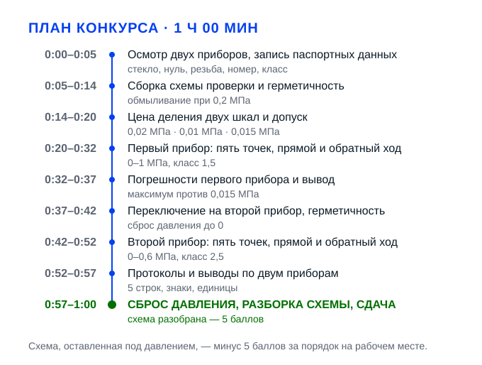
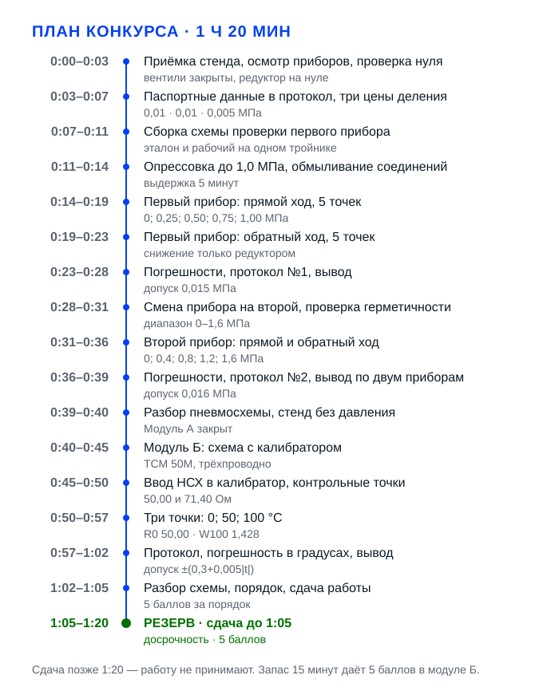
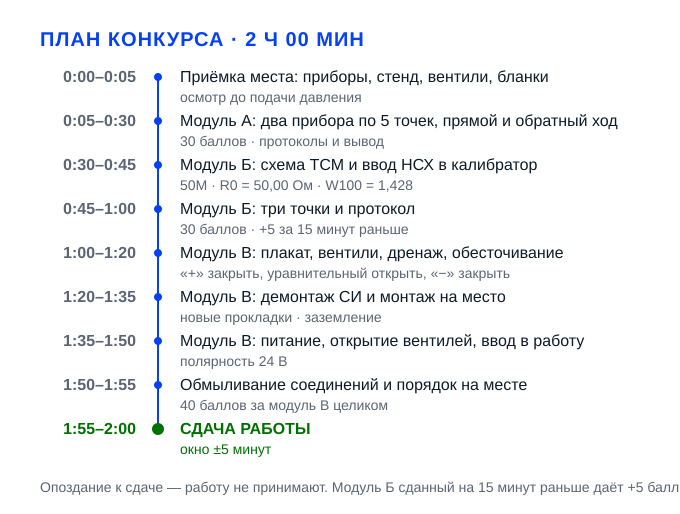

Контролёр КИПиА (Р)
Задания ниже — официальные файлы «Абилимпикс» (источник: abilympics-russia.ru), разложенные по категориям. Решения написаны по тексту задания, регламенту и критериям оценки; в них указано, что именно проверяет эксперт.
Школьник
14–16 лет, базовый уровень заданияВыдержка из официального конкурсного задания: страницы, относящиеся к категории «Школьник» (стр. 7–9 источника).
Пошаговое решение
Конкурсное задание категории «Школьники» — это один модуль на один час: собрать на пневматическом стенде схему проверки, проверить два прибора давления по пяти точкам диапазона при прямом и обратном ходе и заполнить протокол. Всё задание весит 100 баллов, и они разложены мелко: по 5 баллов за схему, за цену деления каждой шкалы, за каждый ход, за абсолютную и допустимую погрешность, за протокол и за вывод по каждому прибору, плюс 5 баллов за порядок на рабочем месте. Поэтому выигрывает не тот, кто быстрее крутит вентиль, а тот, кто не спешит на сборке и считает каждое деление шкалы. Ниже — полный разбор по шагам: от осмотра приборов до последней строки вывода, с числами, типичными ошибками и тем, на что и когда смотрит эксперт.

Задача 1. Принять рабочее место, собрать схему и посчитать цену деленияМодуль А · 20 баллов
На весь модуль отведён час, и первые двадцать минут уходят не на измерения, а на то, чтобы измерения вообще стали возможны: осмотреть два рабочих прибора, собрать на пневматическом стенде герметичную схему и разобраться, что означает одно деление на каждой шкале. Здесь набираются 20 баллов из 100 — за правильно собранную схему, за цену деления рабочего и образцового приборов и за аккуратное обращение с оборудованием. Здесь же чаще всего теряют сразу по пять баллов, потому что торопятся подать воздух, не проверив соединения.
Действие 1.1. Осмотреть приборы и записать их данные
Шаг 1.1.1
Начинаем с осмотра, ещё не трогая приборы руками: наклоняемся к каждому и смотрим стекло на просвет — трещина или скол на стекле манометра сразу закрывает вопрос о работе, потому что отсчитывать показания по повреждённой шкале нельзя. Проверяем, что стрелка лежит точно на нулевой отметке, а не висит над ней: у исправного манометра без давления стрелка стоит на нуле и не дрожит. Затем берём прибор за корпус, а не за штуцер, и осматриваем корпус и резьбу: вмятины, следы удара, сорванная резьба, подтёки под стеклом — всё это признаки того, что прибор уже перегружали давлением или заливали.
Осмотр — это первые заработанные баллы и защита от потери всех остальных: критерий «соблюдение правил работы с оборудованием, исключающее его поломку» стоит 5 баллов, и эксперт фиксирует, заметил ли участник дефект до начала работы. Если подать давление в прибор с треснувшим стеклом, осколки и струя воздуха пойдут в лицо, а прибор будет испорчен окончательно — и тогда пять баллов превращаются в разговор с главным экспертом о причинах поломки.
Стекло целое, стрелка на нуле, корпус без вмятин, резьба штуцера целая и без перекоса, под стеклом нет грязи и влаги. Номер прибора, диапазон и класс точности читаются без напряжения; если цифры стёрты настолько, что класс не разобрать, об этом надо сказать эксперту до начала работы, а не после.
Самая частая ошибка — схватить прибор и сразу вкрутить его в стенд, не взглянув на шкалу: потом выясняется, что диапазон 0–0,6 МПа, а давление гнали до 1 МПа, и прибор остался «зашкаленным» навсегда. Вторая — не заметить, что стрелка стоит на 0,05 выше нуля, и потом списывать этот сдвиг на погрешность измерений.
Эксперт подходит к месту в первые минуты и смотрит на руки: взял ли участник прибор за корпус, повернул ли шкалой к свету, посмотрел ли на стекло. Номер прибора он потом сверит с тем, что записан в протоколе.
Шаг 1.1.2
Достаём бланк протокола и переносим в черновик всё, что прочитали на шкалах: наименование и номер рабочего прибора, диапазон в мегапаскалях, а если шкала продублирована в кгс/см², то и эти цифры, класс точности и общее число делений шкалы. Отдельной строкой записываем данные образцового манометра, который стоит на стенде: его диапазон, класс и число делений. Пишем карандашом — часть цифр ещё уточнится, — и возле каждого числа ставим единицу измерения, потому что дальше все расчёты пойдут в одних и тех же единицах.
Протокол проверки оценивается отдельным критерием на 5 баллов, и смотрят не на почерк, а на то, сходятся ли цифры в шапке с приборами на стенде. Если в протоколе записан прибор с диапазоном 0–1 МПа, а на стенде висит манометр 0–0,6 МПа, можно провести десять отсчётов — протокол всё равно не примут, потому что погрешности посчитаны для другого прибора. Единицы в каждой строке нужны по той же причине: 0,02 МПа и 0,02 кгс/см² отличаются на порядок.
В черновике есть пять обязательных строк по рабочему прибору — наименование, номер, диапазон, класс точности, число делений — и те же данные по образцовому. Сверяйте каждую цифру с наклейкой на корпусе и со шкалой, а не по памяти и не с соседнего стенда.
Типичная ошибка — списать данные с первого прибора, решив, что второй точно такой же: в задании диапазоны у двух рабочих манометров разные, и цена деления, посчитанная по чужой шкале, уводит в минус два критерия по 5 баллов. Вторая — записать класс точности как «1,5 МПа»: класс безразмерный, и такая запись в протоколе читается как непонимание.
Эксперт сверяет шапку протокола с приборами на стенде в момент сдачи, а по ходу работы может спросить, какой класс точности у образцового манометра и почему именно он задаёт точность всей проверки.
Шаг 1.1.3
Готовим оснастку: два рожковых ключа под размер гаек штуцеров (чаще всего 17 и 19), переходники, отрезок шланга без трещин на изгибах, ёмкость со свежим мыльным раствором и кисточку, сухую ветошь и лампу для подсветки шкалы. Обязательно убеждаемся, что в стенде нет давления: смотрим на манометр блока подготовки воздуха и на образцовый — обе стрелки должны стоять на нуле, а вентиль на входе закрыт. Всё раскладываем справа от стенда, чтобы не тянуться через приборы.
Критерий «соблюдение правил работы с оборудованием» на 5 баллов снимают не только за поломку, но и за очевидный риск: работа одним ключом, попытка отвернуть соединение под давлением, шланг с трещиной. Кроме того, на весь модуль дан час, и поиск ключа нужного размера в середине проверки съедает время, которого потом не хватит на обратный ход и протокол.
Ключи садятся на гайки без люфта, шланг при сгибании не белеет и не трескается, мыльный раствор свежий, потому что старый даёт крупные пузыри и плохо ловит утечку, давление на стенде — ноль. Отсутствие давления проверяем не на слух, а по двум манометрам сразу.
Берут один ключ и тянут за штуцер: корпус прибора проворачивается, трубка деформируется, и на герметичности это скажется уже при 0,5 МПа. Вторая ошибка — начать собирать схему, не сбросив остаточное давление от предыдущего участника: воздух срывает переходник, и хорошо, если не в лицо.
Эксперт отмечает, какие инструменты участник взял и как их держит: два ключа на одном соединении — видимый признак того, что человек понимает, что делает, и это видно ещё до первого отсчёта.
Действие 1.2. Собрать пневматическую схему проверки
Шаг 1.2.1
Сначала разбираемся в схеме стенда, а не собираем наугад: воздух идёт от компрессора через блок подготовки с фильтром-регулятором, дальше через задатчик давления с вентилем тонкой регулировки на тройник, в котором стоят рядом образцовый манометр и рабочий прибор, а в конце линии — сбросный вентиль. Рабочий прибор подключается к тройнику так, чтобы образцовый и проверяемый видели одно и то же давление, иначе сравнивать их показания бессмысленно.
Схема проверки первого прибора — отдельный критерий на 5 баллов, и эксперт оценивает именно логику соединения: оба манометра на одном давлении, между ними нет редуктора или вентиля, который создаст перепад. Если поставить рабочий прибор после задатчика, а образцовый до него, разница показаний будет отражать не погрешность прибора, а перепад на вентиле, и все десять отсчётов уйдут в мусор.
Стрелки образцового и рабочего приборов при нулевом давлении стоят на нуле, воздух к обоим подходит от одного тройника, между ними нет никакой арматуры. Проверьте рукой: оба штуцера смотрят в одну сторону, шланги не перекрещены и не натянуты.
Классическая ошибка — подключить рабочий прибор «куда влезло», последовательно с образцовым, а не параллельно: тогда приборы показывают давления в разных точках линии, и погрешность получается фантастической. Вторая — оставить закрытым вентиль на одном из штуцеров и потом удивляться, что стрелка не двигается.
Эксперт обходит стенд и прослеживает линию от компрессора до приборов пальцем, проверяя, что оба манометра сидят на общей точке отбора давления. Отдельно он отмечает, что участник не поставил рабочий прибор после задатчика.
Шаг 1.2.2
Вворачиваем переходник в штуцер рабочего прибора от руки до упора, затем подтягиваем ключом не более чем на пол-оборота: резьба коническая, и перетяжка её срывает. Уплотняем соединение лентой ФУМ по резьбе, наматывая по ходу витка и не заходя на первые два витка, чтобы обрывки ленты не попали внутрь прибора. Ключ держим на гайке переходника, а вторым ключом придерживаем штуцер прибора — иначе усилие идёт на корпус и на трубку Бурдона внутри.
Правильно собранная схема — 5 баллов, и половина этих баллов теряется именно на соединениях: подмотка «на глаз», перетяжка, работа одним ключом. Сорванная резьба — это уже поломка оборудования, за которую снимают отдельные 5 баллов, а прибор с треснувшим от перетяжки штуцером снимают с площадки.
Переходник ввёрнут на всю длину резьбы, гайка затянута плотно, но без срыва, люфта нет. Проверьте покачиванием: соединение не должно шевелиться от руки. Лента ФУМ не свисает бахромой снаружи и не торчит внутрь канала.
Ошибка новичка — тянуть изо всех сил «чтобы не травило»: коническая резьба лопается по витку, и переходник остаётся в приборе навсегда. Обратная ошибка — завернуть от руки и сразу подать давление: соединение травит, давление не держится, и десять минут уходят на поиск утечки.
Эксперт смотрит на момент затяжки и на то, придерживает ли участник корпус вторым ключом. Это самый быстрый способ понять, работал ли человек с трубкой Бурдона раньше.
Шаг 1.2.3
Подключаем шланг от тройника к переходнику быстроразъёмным соединением до щелчка и слегка тянем назад, проверяя фиксацию. Образцовый манометр остаётся на своём месте в тройнике; проверяем, что его шкала видна с рабочей позиции и не заслонена шлангом. Приборы располагаем так, чтобы обе шкалы читались с одного взгляда, не переставляя голову, — иначе на каждой точке вы будете терять по десять секунд.
Шланг и видимость шкал — не формальность: на десять отсчётов по двум приборам остаётся около двадцати минут, и каждое лишнее движение складывается в минуту опоздания. Кроме того, при чтении сбоку появляется параллакс: стрелка видна на фоне не той отметки, и погрешность 0,01 МПа возникает просто от угла зрения.
Шланг сидит до щелчка и не стравливает воздух при подёргивании, обе шкалы видны прямо, без наклона. Посмотрите на приборы с той точки, где будете стоять во время проверки: если приходится наклоняться — переставьте прибор до подачи давления, а не после.
Частая ошибка — смотреть на шкалу сбоку и записывать «на глаз» между отметками: на манометре 0–1 МПа с ценой деления 0,02 МПа такой отсчёт даёт ошибку в половину деления, то есть 0,01 МПа, а это две трети допустимой погрешности.
Эксперт проверяет, читает ли участник шкалу перпендикулярно, и делает замечание, если голова повёрнута к прибору боком. Если шкалу приходится читать наискось, он предложит переставить прибор до подачи давления.
Шаг 1.2.4
Проверяем герметичность до начала отсчётов: закрываем сбросный вентиль, плавно подаём давление до первой рабочей точки — примерно 0,2 МПа — и кисточкой, смоченной в мыльном растворе, проходим все соединения: вход в тройник, оба штуцера, быстроразъёмы, переходник, резьбу на рабочем приборе. Держим давление две-три минуты и смотрим, не растут ли пузыри и не падает ли стрелка образцового манометра.
Без герметичности вся проверка превращается в измерение утечки: давление медленно стравливается, стрелки ползут вниз, и записать показания в пяти точках с одинаковым давлением невозможно. На критерий «схема проверки» это влияет напрямую — 5 баллов снимают, если схема собрана с утечкой, даже когда формально всё подключено верно.
Пузыри не появляются и не увеличиваются, стрелка образцового манометра стоит на месте в течение двух-трёх минут. Мелкие неподвижные пузырьки внутри раствора — это воздух из самого раствора, а не утечка; растут только пузыри от травящего соединения.
Ошибка — проверить одно соединение и успокоиться: травит обычно не то, которое проверяли, а последнее затянутое. Вторая — искать утечку на слух при шуме в цехе: шипение слышно только при большой утечке, а 0,01 МПа в минуту на слух не поймать.
Эксперт смотрит, обмыливает ли участник соединения до начала отсчётов или обнаруживает утечку уже по «поехавшим» показаниям. Он же проверяет, держат ли соединения давление после выдержки, а не только в первый момент.
Действие 1.3. Посчитать цену деления обеих шкал и допустимую погрешность
Шаг 1.3.1
Считаем цену деления рабочего прибора по формуле: из верхнего предела вычитаем нижний и делим на число делений всей шкалы. Для манометра 0–1 МПа с 50 делениями получается (1 − 0) / 50 = 0,02 МПа на деление. Деления считаем между соседними отметками, а не между оцифрованными числами: если оцифровка идёт через 0,2 МПа, то между двумя цифрами десять промежутков, и это и есть десять делений.
Критерий «высчитана цена деления шкалы первого рабочего прибора» — 5 баллов, и это не арифметическое упражнение: без цены деления нельзя перевести положение стрелки в мегапаскали, а значит нельзя посчитать погрешность. Ошибка в цене деления в два раза автоматически делает неверными все десять строк протокола, и эксперт это видит по нереальным значениям погрешности.
Проверьте себя обратным счётом: умножьте полученную цену деления на число делений — должно получиться ровно верхний предел. Для 0,02 МПа и 50 делений это 1,00 МПа, сходится. Если получилось 0,5 или 2,0 — вы считали деления по оцифрованным отметкам или взяли не ту шкалу.
Типичная ошибка — делить диапазон на количество оцифрованных чисел: для шкалы 0–1 МПа с цифрами 0; 0,2; 0,4; 0,6; 0,8; 1,0 получают 1/5 = 0,2 МПа на деление, завышая цену деления в десять раз. Вторая — перепутать шкалу в кгс/см² с мегапаскалями, если на приборе две кольцевые шкалы.
Эксперт подходит во время расчёта и просит объяснить вслух, откуда взялось число делений: ответ «посчитал» без показа пальцем на деление не засчитывается.
Шаг 1.3.2
То же самое делаем для образцового манометра: диапазон 0–1,6 МПа, 160 делений дают (1,6 − 0) / 160 = 0,01 МПа на деление. Образцовый прибор всегда точнее рабочего, и его цена деления должна быть минимум в три раза мельче, иначе он не может служить эталоном. Записываем обе цены деления рядом в черновике, чтобы они были перед глазами всё время проверки.
Отдельный критерий на 5 баллов существует именно потому, что путают два разных прибора: считается цена деления рабочего и отдельно — образцового. Кроме того, по образцовому вы выставляете точки, поэтому его цена деления определяет, с какой точностью вы вообще задаёте давление: 0,01 МПа при допуске 0,015 МПа — это нормальное соотношение, а если бы выставляли точки по грубому прибору, половину допуска съела бы погрешность задания.
Цена деления образцового меньше цены деления рабочего, отношение не хуже одного к трём. Обе цифры записаны в мегапаскалях и совпадают с тем, что получается при обратном счёте: 0,01 × 160 = 1,6 МПа. Если отношение получилось меньше, значит, вы перепутали приборы местами.
Ошибка — записать для образцового ту же цену деления, что для рабочего, «чтобы не путаться». Вторая, более опасная — выставлять точки по рабочему прибору: тогда вы подгоняете эталон под проверяемый, и погрешность всегда получается около нуля, а эксперт видит подмену по нереально идеальному протоколу.
Эксперт задаёт вопрос: «Почему точки выставляем по образцовому, а не по рабочему?» Правильный ответ — потому что образцовый принимаем за истинное значение, а рабочий проверяем.
Шаг 1.3.3
Заранее считаем допустимую погрешность рабочего прибора, чтобы потом не гадать: класс точности в процентах умножаем на диапазон и делим на сто. Для класса 1,5 и диапазона 0–1 МПа это 1,5 × 1 / 100 = 0,015 МПа, то есть 15 кПа. Для второго прибора 0–0,6 МПа класса 2,5 получается 2,5 × 0,6 / 100 = 0,015 МПа — то же число, хотя класс и диапазон другие. Записываем этот допуск в шапку протокола отдельной строкой.
Критерий «правильно высчитана допустимая погрешность» стоит 5 баллов по каждому прибору, и это тот самый порог, с которым сравнивают абсолютную погрешность при выводе о работоспособности. Если допуск посчитан неверно, вывод становится произвольным: прибор либо забракуют без причины, либо признают годным при реальном выходе за норму.
Проверьте арифметику двумя способами: 1,5 % от 1 МПа — это 0,015 МПа, и то же самое получается, если умножить 0,01 на 1,5. Для второго прибора 2,5 % от 0,6 МПа — 0,015 МПа. Если получилось 0,15 МПа, вы забыли разделить на сто и завысили допуск в десять раз.
Ошибка — взять класс точности за абсолютную погрешность: «класс 1,5, значит погрешность 1,5 МПа». При таком допуске любой прибор окажется годным, и вывод будет неверным при формально правильных вычислениях. Вторая — считать допуск от текущего показания, а не от диапазона: у манометров класс отнесён к верхнему пределу шкалы.
Эксперт проверяет именно эту строку протокола первой, потому что по ней видно, понимает ли участник, что такое класс точности. Ответ «класс точности — это допуск в мегапаскалях» сразу снимает балл за расчёт.
Задача 2. Проверить первый прибор по пяти точкам прямым и обратным ходомМодуль А · 20 баллов
Сердце модуля — десять отсчётов по первому прибору: пять точек при подъёме давления и те же пять при спуске. Точки берём через равные доли диапазона, для манометра 0–1 МПа это 0; 0,25; 0,50; 0,75 и 1,00 МПа, и на каждой точке одновременно смотрим на образцовый и на рабочий прибор. За прямой ход дают 5 баллов, за обратный ещё 5, столько же за абсолютную погрешность и допустимую — итого 20. Обратный ход нужен не для полноты картины: он показывает трение в механизме и упругий гистерезис, из-за которых прибор врёт по-разному в зависимости от того, куда движется стрелка.
Действие 2.1. Подготовить прибор и выставить давление в нулевой точке
Шаг 2.1.1
При закрытом сбросном вентиле плавно приоткрываем задатчик и даём давление до примерно половины шкалы, затем сбрасываем до нуля. Это продувка: она выносит из линии пыль, попавшую при сборке, и заодно проверяет, что стрелка ходит по всей шкале без заеданий. После сброса слегка постукиваем пальцем по корпусу прибора у стекла — три-четыре лёгких удара, не больше, чтобы снять трение в подшипнике стрелки.
Без продувки первые отсчёты уходят на то, чтобы механизм «расходился», и в протокол попадают значения, которых на самом деле нет. Постукивание по корпусу — стандартный приём при проверке манометров: оно устраняет влияние трения в опорах, из-за которого стрелка останавливается, не дойдя до истинного положения. Без него вы записываете не показание прибора, а точку, где его заклинило.
Стрелка прошла всю шкалу и вернулась на нуль без рывков и заеданий; после постукивания она стоит на нулевой отметке и не сдвигается. Если после сброса стрелка осталась на 0,03–0,05 МПа — прибор не возвращается на нуль, и это надо отметить до начала отсчётов.
Ошибка — сразу гнать давление до верхнего предела «на проверку»: для прибора, который до этого лежал, это лишний удар по трубке Бурдона. Вторая — стучать по корпусу кулаком или ключом: от такого «постукивания» сбивается нуль и появляется вмятина.
Эксперт смотрит, делает ли участник продувку и постукивание вообще: это два признака, по которым сразу видно, знаком ли человек с методикой проверки манометров.
Шаг 2.1.2
Выставляем нулевую точку первой в списке и записываем в протокол оба показания: образцовый должен показывать 0,00, рабочий — то, что показывает. Давление при этом полностью сброшено, сбросный вентиль открыт, а показания снимаем через 10–15 секунд после сброса, когда стрелки успокоятся. Нуль — такая же точка диапазона, как и остальные, и её нельзя пропускать, потому что именно по ней видно, сбита ли стрелка относительно шкалы.
Пять точек по диапазону — это требование задания, и нуль входит в них первым. Пропустив нулевую точку, вы получите четыре отсчёта вместо пяти и потеряете баллы за прямой ход целиком, даже если остальные значения записаны идеально. Кроме того, смещение нуля — самый частый дефект пневматических манометров после перегрузки.
В строке «0» протокола стоят оба значения, единицы измерения указаны, стрелки неподвижны. Если рабочий прибор показывает 0,00 — отлично; если 0,01 или 0,02 — записываем как есть, не подгоняя под нуль.
Подгонять нуль «чтобы красиво» — грубая ошибка: протокол должен показывать реальное поведение прибора, а не желаемое. Вторая — снимать показания в момент, когда стрелка ещё качается после сброса. Третья — записать в нулевую строку показание образцового, а не рабочего прибора.
Эксперт может подойти и посмотреть на шкалу вместе с участником: сходятся ли записанные цифры с тем, что видно на стекле. Если нулевая строка пустая, он отмечает это до начала прямого хода.
Действие 2.2. Пройти прямой ход по пяти точкам
Шаг 2.2.1
Прямой ход — это движение только вверх. Закрываем сбросный вентиль и задатчиком тонкой регулировки медленно поднимаем давление до 0,25 МПа, подходя к точке снизу и не перескакивая её: если проскочили, сбрасываем чуть ниже и снова поднимаемся. Когда образцовый манометр встал точно на 0,25, выдерживаем паузу в 10–15 секунд, чтобы давление в линии и в камерах приборов выровнялось, и только потом читаем рабочий прибор.
Подход к точке всегда с одной стороны — обязательное условие сопоставимости: если одну точку брать при подъёме, а другую при спуске, разница показаний будет отражать гистерезис механизма, а не реальную погрешность. Выдержка нужна потому, что воздух сжимаем: после поворота вентиля давление в линии подрастает ещё несколько секунд, и отсчёт «сразу» занижен.
Образцовый манометр стоит на 0,25 МПа и не ползёт, стрелка рабочего неподвижна. Отсчёт берём строго перпендикулярно стеклу, деление считаем от нуля: если стрелка на одно деление выше 0,24, а цена деления 0,02 МПа, показание — 0,26 МПа.
Главная ошибка — крутить задатчик и читать одновременно: рука ещё на вентиле, давление меняется, и записанное значение не соответствует ни одной реальной точке. Вторая — подойти к точке сверху, «сбросив чуть-чуть», и потом считать это прямым ходом.
Эксперт следит за темпом: быстрое накидывание давления до упора и обратный сброс — признак того, что участник не понимает, зачем нужен прямой ход. Ровный, медленный подъём с паузами он считает правильным темпом.
Шаг 2.2.2
Так же проходим 0,50 и 0,75 МПа: каждый раз поднимаем давление только вверх, выдерживаем 10–15 секунд, записываем показание рабочего прибора в строку с номером точки и указываем единицы. Показания записываем сразу, на месте, а не по памяти после пятой точки: память на пять пар цифр не рассчитана, а перепутанные строки в протоколе видны эксперту сразу.
Каждая из пяти точек прямого хода входит в критерий на 5 баллов, и оценивается не только наличие цифры, но и её правдоподобие. Записанные по памяти значения обычно «выравниваются» — все погрешности получаются одинаковыми, а это первое, что бросается в глаза при проверке протокола.
В строках 0,50 и 0,75 стоят разные значения, единицы указаны, образцовый прибор в момент отсчёта стоял именно на этой отметке. Проверьте последовательность: 0; 0,25; 0,50; 0,75 — давление только росло.
Ошибка — вести отсчёт по рабочему прибору, а образцовый «подгонять» под него: тогда все погрешности окажутся нулевыми. Вторая — сбиться и записать 0,75 в строку 0,50, а потом считать погрешность по чужой точке.
Эксперт может попросить назвать, какое давление сейчас в стенде: правильный ответ — то, что показывает образцовый манометр, а не то, что вы только что записали.
Шаг 2.2.3
Последняя точка прямого хода — верхний предел 1,00 МПа. Поднимаем давление до неё особенно осторожно: переходить верхний предел нельзя ни на секунду, потому что стрелка упирается в ограничитель, а трубка Бурдона получает остаточную деформацию. Выдерживаем 15 секунд, записываем показание рабочего прибора и только после этого начинаем обратный ход, не сбрасывая давление до нуля.
Верхний предел — самая опасная точка и самая показательная: именно здесь видно, «зашкален» прибор или ещё держит характеристику. Переход за предел стоит 5 баллов по критерию сохранности оборудования, а испорченный прибор придётся менять, и время модуля на это не рассчитано.
Образцовый манометр стоит на 1,00 МПа, стрелка рабочего не выше упора и не дрожит. Если стрелка рабочего уже легла на штифт ограничителя — немедленно сбрасывайте давление и фиксируйте это в протоколе.
Типичная ошибка — «дожать» до предела, чтобы стрелка точно встала на последнюю отметку: разница в одно деление здесь не стоит риска. Вторая — начать обратный ход с задержкой в несколько минут, за которые давление успевает стравиться через неплотность.
Эксперт находится рядом в момент выхода на верхний предел: это точка, где чаще всего ломают оборудование, и он смотрит на руку на вентиле. Переход за упор он фиксирует как перегрузку прибора.
Действие 2.3. Пройти обратный ход
Шаг 2.3.1
Обратный ход начинаем от 1,00 МПа и ведём только вниз. Сбросным вентилем или задатчиком осторожно снижаем давление до 0,75 МПа, подходя к точке сверху, выдерживаем 10–15 секунд и записываем показание рабочего прибора в отдельную графу протокола — не в ту же строку, где прямой ход, а рядом. Затем так же проходим 0,50 и 0,25 МПа. На каждой точке следим, чтобы образцовый манометр стоял ровно на отметке.
Обратный ход — отдельный критерий на 5 баллов, и он существует потому, что механизм манометра имеет трение и люфт: при движении вниз стрелка останавливается чуть выше истинного значения, и разница между прямым и обратным ходом называется вариацией показаний. По ней судят о состоянии механизма, а без неё проверка считается неполной.
Давление только уменьшается: 1,00 → 0,75 → 0,50 → 0,25. В графе обратного хода стоят свои цифры, и они могут отличаться от прямого хода на одно деление — это нормально и как раз то, что нужно зафиксировать.
Ошибка — переписать значения прямого хода в графу обратного: тогда вариация равна нулю, и это выглядит подозрительно, потому что идеального механизма не бывает. Вторая — сбрасывать давление одним махом до нуля и потом «ловить» точку снизу, то есть снова сделать прямой ход.
Эксперт сравнивает графы прямого и обратного хода: если они совпадают до цифры во всех пяти точках, он задаёт вопрос, как велись отсчёты. Он же смотрит, не перепутаны ли графы прямого и обратного хода.
Шаг 2.3.2
Заканчиваем обратный ход нулевой точкой: сбрасываем давление полностью, открываем сбросный вентиль, ждём 10–15 секунд и записываем, куда вернулась стрелка рабочего прибора. У исправного манометра она возвращается на нулевую отметку; у прибора с остаточной деформацией трубки остаётся на 0,01–0,03 МПа выше нуля. Это значение — последняя строка прямого и обратного хода одновременно.
Возврат на нуль — самый информативный одиночный отсчёт: он показывает, не «устал» ли механизм после нагрузки до верхнего предела. Если стрелка не вернулась на нуль, прибор считается непригодным даже при формально допустимых погрешностях в остальных точках, и вывод о работоспособности будет отрицательным.
Стрелка стоит на нуле или отклонение не больше одного деления. Давление в стенде — ноль, сбросный вентиль открыт, шланг не под давлением. Проверьте по образцовому манометру: он тоже должен быть на нуле.
Ошибка — оставить давление в линии после проверки и уйти к расчётам: соединения держат нагрузку, пока вы пишете, а потом начинают травить. Вторая — не заметить, что стрелка не вернулась на нуль, и выдать прибор за годный.
Эксперт подходит к стенду именно в этот момент: возврат стрелки на нуль он смотрит своими глазами и сверяет с протоколом. Отклонение стрелки от нуля он сравнивает с записью в протоколе.
Действие 2.4. Посчитать погрешности первого прибора
Шаг 2.4.1
Для каждой из пяти точек считаем абсолютную погрешность как разность: показание рабочего прибора минус показание образцового. Знак сохраняем: если рабочий показывает 0,26 при образцовом 0,25, погрешность +0,01 МПа; если 0,24 — минус 0,01. Считаем отдельно для прямого и для обратного хода и записываем в протокол все десять значений, а не только наибольшее.
Критерий «правильно высчитана абсолютная погрешность» — 5 баллов, и проверяют именно знак и единицы: разность, взятая наоборот, меняет знак у всех точек, а погрешность, записанная в килопаскалях рядом с мегапаскалями, делает таблицу нечитаемой. Десять значений нужны потому, что по одному числу нельзя судить о поведении прибора в разных частях шкалы.
Проверьте одну строку вручную: 0,51 − 0,50 = 0,01 МПа. Сумма модулей погрешностей не должна быть нулевой, а максимальное значение должно выглядеть правдоподобно — для класса 1,5 это обычно половина допуска или меньше.
Ошибка — вычитать из образцового показание рабочего, получая зеркальные знаки, и потом путаться в выводе. Вторая — считать погрешность только в одной точке, обычно в нулевой, где она почти всегда равна нулю.
Эксперт берёт протокол и пересчитывает одну-две строки на калькуляторе: расхождение в десятичных разрядах он замечает мгновенно. Особое внимание — знаку разности: он должен быть одинаково понят во всех строках.
Шаг 2.4.2
Находим наибольшую по модулю погрешность из десяти и сравниваем её с допустимой, которую посчитали заранее: для класса 1,5 и диапазона 0–1 МПа допуск равен 0,015 МПа. Если максимум не превышает 0,015 — прибор по этому показателю годен; если превышает хотя бы в одной точке — не годен, и это надо записать без оговорок. Дополнительно смотрим вариацию: разность между прямым и обратным ходом в одной точке не должна выходить за тот же допуск.
Критерий «правильно высчитана допустимая погрешность» и критерий вывода о работоспособности связаны напрямую: вывод делается не по ощущению, а по сравнению двух чисел. Прибор с погрешностью 0,02 МПа при допуске 0,015 МПа считается непригодным, даже если «почти попал», — в этом и смысл нормирования.
В протоколе явно видно, какое число с чем сравнивали: например, «максимальная погрешность 0,01 МПа при допуске 0,015 МПа — в пределах нормы». Если такой строки нет, вывод считается необоснованным. Сравнение должно быть видно в самом протоколе, а не только в вашей голове.
Самая частая ошибка — сравнить погрешность с ценой деления вместо допуска: 0,02 МПа равны одному делению, но это не норма. Вторая — выбрать наибольшее значение по памяти, не просмотрев все десять строк.
Эксперт ищет в протоколе именно пару чисел «погрешность — допуск»: без неё вывод не засчитывается, даже если он случайно правильный. Если сравнения нет, он считает вывод необоснованным независимо от результата.
Шаг 2.4.3
Проверяем результат на здравый смысл, прежде чем переносить в чистовик. Погрешность не должна скачкообразно менять знак от точки к точке — у исправного прибора она меняется плавно. Если в четырёх точках погрешность около нуля, а в пятой 0,05 МПа, скорее всего, вы ошиблись при отсчёте или не выдержали паузу, и эту точку нужно перепроверить, пока схема собрана.
Перепроверка одной подозрительной точки занимает минуту и спасает целый критерий: за прямой и обратный ход дают по 5 баллов, и одна перепутанная цифра тянет за собой неверную абсолютную погрешность и неверный вывод. Однако перепроверять нужно именно точку, а не весь ход заново — времени на полный повтор у вас нет.
После перепроверки значение в точке стало близким к соседним, картина погрешностей стала плавной. Если расхождение осталось — значит, дефект реальный, и его надо описать в выводе, а не прятать. Плавность кривой погрешности — косвенный, но надёжный признак исправного механизма.
Ошибка — подогнать подозрительное значение под соседние «чтобы линия была красивой»: подделка видна по слишком ровной таблице. Вторая — переписать всю проверку заново и не успеть к сдаче. Третья — не перепроверить точку и получить вывод по случайной цифре.
Эксперт сравнивает черновик и чистовик: если в чистовике цифры «выровнены» относительно черновика, это трактуется как фальсификация результатов. Он же смотрит, есть ли в черновике зачёркнутые значения.
Задача 3. Проверить второй прибор той же схемой и теми же пятью точкамиМодуль А · 35 баллов
Второй прибор — это не повторение первого, а самостоятельная работа на 35 баллов: здесь заново оценивают собранную схему, обе цены деления, оба хода, абсолютную и допустимую погрешность. Диапазон у него другой — 0–0,6 МПа, класс точности 2,5, и точки придётся пересчитать: 0; 0,15; 0,30; 0,45; 0,60 МПа. Времени на второй прибор уходит меньше, потому что схема знакома, но именно из-за этой привычки и появляются ошибки: участник механически переносит цифры первого протокола во второй и не замечает, что шкала другая.
Действие 3.1. Переключить схему на второй прибор
Шаг 3.1.1
Перед любым переключением сбрасываем давление до нуля и открываем сбросный вентиль: убеждаемся по образцовому манометру и по манометру блока подготовки, что стрелки на нуле. Только после этого отворачиваем быстроразъём, придерживая шланг рукой, чтобы он не хлестнул по приборам, и снимаем переходник с первого прибора двумя ключами. Первый прибор кладём на стол, а не подвешиваем на шланге.
Отсоединение под давлением — самая опасная операция во всём модуле: струя воздуха с масляной пылью бьёт в лицо, а сорванный шланг бьётся по стеклам приборов. По критерию сохранности оборудования это минус 5 баллов, а по технике безопасности — замечание с возможной остановкой работы. Придерживать шланг нужно потому, что он упругий и при разъединении отскакивает.
Оба манометра на нуле, воздух не шипит, шланг снят свободно, без усилия. Первый прибор лежит на столе шкалой вверх, переходник от него отложен отдельно, чтобы не перепутать со вторым. Убедитесь, что оба протокола при этом лежат отдельно, а не поверх приборов.
Ошибка — дёрнуть быстроразъём, не сбросив давление: соединение разъединяется с хлопком, шланг бьёт по стенду. Вторая — оставить первый прибор висеть на шланге: вес корпуса тянет резьбу, и она срывается.
Эксперт находится рядом при переключении: порядок «сброс — потом отсоединение» он проверяет каждый раз, и нарушение фиксируется сразу. Он же смотрит, куда участник положил первый прибор после снятия.
Шаг 3.1.2
Берём второй прибор, проверяем у него диапазон и класс по наклейке — 0–0,6 МПа и 2,5, — и вворачиваем переходник тем же порядком: от руки до упора, затем ключом на пол-оборота, с подмоткой ФУМ, придерживая штуцер вторым ключом. Подключаем шланг до щелчка и проверяем фиксацию. Второй прибор ставим на то же место, где стоял первый, чтобы шкала была видна с рабочей позиции.
За правильно собранную схему второго прибора дают ещё 5 баллов — это отдельный критерий, а не продолжение первого. Проверяют то же самое: прибор на общей точке отбора давления с образцовым, соединение затянуто без перекоса, шланг зафиксирован. Перепутанный диапазон здесь опаснее всего: если гнать давление до 1 МПа в прибор на 0,6 МПа, он выйдет из строя на первой же точке.
Наклейка на корпусе читается: 0–0,6 МПа, класс 2,5. Переходник затянут, шланг сидит до щелчка. Обе шкалы — образцового и второго рабочего — видны с одного места без наклона. Если наклейка не читается, диапазон уточняют по шкале и записывают в протокол.
Ошибка — поставить второй прибор, не посмотрев диапазон, и потом работать по привычным точкам 0,25 и 0,50: для шкалы 0,6 МПа точка 0,5 — это не 50 %, а 83 %, и пять точек диапазона уже не те. Вторая — перепутать переходники от двух приборов, если резьба разная.
Эксперт проверяет, посмотрел ли участник на шкалу второго прибора перед подключением: именно этот взгляд отделяет осознанную работу от механического повторения.
Шаг 3.1.3
Проверяем герметичность новой схемы до отсчётов: подаём 0,2 МПа, обмыливаем все соединения — вход в тройник, штуцер второго прибора, переходник, быстроразъём — и держим две минуты. Заодно смотрим, что стрелка второго прибора вообще реагирует на давление и не залипла на упоре: у приборов, лежавших без работы, механизм иногда «залипает». Давление держим две минуты и смотрим на стрелку образцового манометра.
Утечка в новой схеме обнуляет всю проверку второго прибора: давление ползёт вниз, точки не держатся, и отсчёты получаются случайными. Критерий схемы на 5 баллов снимается, даже если соединение собрано правильно, но травит. Реакция стрелки проверяется здесь же, чтобы не выяснить на верхнем пределе, что прибор неисправен механически.
Пузыри не растут, стрелка второго прибора сдвинулась с нуля и стоит устойчиво, образцовый держит давление. Если стрелка дёргается рывками, это признак заедания механизма — фиксируем в черновике. Если стрелка залипла, прибор неисправен механически, и это надо записать до отсчётов.
Ошибка — пропустить обмыливание «потому что в первый раз всё было нормально»: новая сборка всегда требует своей проверки, соединение могло не сесть. Вторая — не заметить, что стрелка стоит на месте при поданном давлении, и искать причину в вентилях.
Эксперт смотрит на кисточку в руках участника: обмыливает ли он вторую схему так же, как первую, или считает, что «уже проверено». Он же проверяет, не осталось ли в схеме второго прибора лишних вентилей.
Действие 3.2. Пройти прямой ход второго прибора
Шаг 3.2.1
Пересчитываем точки под новый диапазон: 0,6 МПа делим на четыре части и получаем 0; 0,15; 0,30; 0,45; 0,60 МПа. Цену деления тоже пересчитываем заново: (0,6 − 0) / 60 = 0,01 МПа на деление, и допустимую погрешность тоже: 2,5 % от 0,6 МПа равно 0,015 МПа. Записываем эти три числа в шапку второго протокола прежде, чем подать давление. Пересчёт занимает полминуты и снимает половину ошибок второго протокола.
Цена деления второго рабочего прибора и цена деления образцового — два отдельных критерия по 5 баллов, которые считаются заново. Если перенести в протокол 0,02 МПа от первого прибора, то все отсчёты превратятся в другие значения, и погрешность выйдет заведомо неверной. Допуск 0,015 МПа при более грубом классе 2,5 получается тем же, что у первого прибора, — это как раз тот случай, когда совпадение чисел не означает, что расчёт не нужен.
Три числа в шапке: 0,01 МПа на деление у рабочего, 0,01 МПа у образцового, допуск 0,015 МПа. Проверьте обратным счётом: 0,01 × 60 = 0,6 МПа, сходится. Точки идут с шагом 0,15 МПа. Если цена деления совпала с ценой деления первого прибора, проверьте число делений шкалы.
Ошибка — оставить точки от первого прибора: тогда вы проверяете второй прибор в точках 0,25 и 0,5, которые для его шкалы не являются долями диапазона, и получаете неравномерную сетку. Вторая — взять допуск по первому классу, посчитав «раз приборы одинаковые».
Эксперт смотрит на шапку второго протокола: отличаются ли цифры от первого, потому что одинаковые шапки при разных приборах — верный признак копирования.
Шаг 3.2.2
Проходим прямой ход: 0; 0,15; 0,30; 0,45; 0,60 МПа, каждый раз только вверх, с выдержкой 10–15 секунд и постукиванием по корпусу перед отсчётом. На верхнем пределе 0,60 МПа останавливаемся точно, не переходя его. Показания второго прибора записываем в его собственный протокол, на отдельном листе или в отдельной таблице. Выдержка перед отсчётом здесь важнее, чем скорость: точек всего пять.
Прямой ход второго прибора — 5 баллов, и здесь важно не только записать цифры, но и не смешать их с первым протоколом. У двух приборов разные диапазоны и разные шкалы, и запись «0,51» в таблице для прибора с пределом 0,6 МПа сразу читается как перенос из чужого протокола.
В строках стоят значения в пределах 0–0,60, шаг между строками около 0,15. Стрелка на верхнем пределе не лежит на ограничителе. Образцовый манометр в каждой точке стоит точно на заданном значении. Проверьте, что ни в одной строке значение не вышло за 0,60 МПа.
Ошибка — гнать давление до привычной единицы: для прибора на 0,6 МПа это перегрузка на 67 %, и он сразу «зашкаливается». Вторая — записывать оба прибора в одну таблицу и потом путать строки. Третья — не заметить, что стрелка уже на упоре, и продолжать подъём.
Эксперт следит за рукой на вентиле у верхнего предела: у второго прибора запас до перегрузки меньше, и здесь ошибка стоит дороже. Он же смотрит, не путает ли участник точки первого прибора со вторым.
Действие 3.3. Пройти обратный ход второго прибора
Шаг 3.3.1
От 0,60 МПа идём вниз: 0,45; 0,30; 0,15 и 0. Каждый раз подходим к точке сверху, выдерживаем 10–15 секунд, постукиваем по корпусу и записываем показание в графу обратного хода. Если на какой-то точке стрелка остановилась и не двигается при изменении давления, это заедание — записываем как есть и отмечаем в черновике. Отсчёты записываем сразу, в отдельную графу, а не в строку прямого хода.
Обратный ход второго прибора — ещё 5 баллов, и у более грубого класса 2,5 вариация обычно больше, чем у первого. Именно поэтому её нельзя выдумывать: если в протоколе обратный ход до цифры совпал с прямым, эксперт понимает, что отсчёты не велись. Без обратного хода проверка неполная и половина баллов не набирается.
Значения в графе обратного хода отличаются от прямого на одно-два деления, но не более чем на допуск. Давление только уменьшается, шаг — 0,15 МПа. Если разница больше допуска, это вариация показаний, и она идёт в вывод отдельной строкой.
Ошибка — сбросить давление до нуля и начать заново снизу, считая это обратным ходом: получится второй прямой ход. Вторая — не постукивать по корпусу, из-за чего стрелка застревает между делениями и отсчёт получается случайным.
Эксперт сравнивает графы и смотрит на разницу: у прибора класса 2,5 она обычно заметнее, и её отсутствие вызывает вопросы. Он же смотрит, велись ли отсчёты при движении вниз, а не при повторном подъёме.
Шаг 3.3.2
Заканчиваем нулём: сбрасываем давление полностью, ждём 15 секунд и смотрим, вернулась ли стрелка на нулевую отметку. У второго прибора с грубым механизмом возврат на нуль — самый показательный отсчёт, поэтому записываем отклонение с точностью до половины деления, то есть до 0,005 МПа. Отклонение записываем с точностью до половины деления, то есть до 0,005 МПа, и не округляем до нуля.
Если стрелка осталась на 0,01–0,02 МПа выше нуля, это остаточная деформация трубки Бурдона или загрязнение механизма, и такой прибор не годится для эксплуатации независимо от погрешностей в середине шкалы. Именно этот отсчёт чаще всего и определяет отрицательный вывод, который оценивается в 5 баллов.
Давление в стенде — ноль по обоим манометрам, стрелка рабочего прибора на нуле или отклонена не более чем на полделения. Сбросный вентиль открыт, шланг не под давлением. Если стрелка осталась выше нуля, прибор не годится для эксплуатации.
Ошибка — записать «0» не глядя, потому что так должно быть: эксперту достаточно одного взгляда на шкалу, чтобы это проверить. Вторая — оставить давление в схеме и перейти к расчётам. Третья — не проверить нуль и получить неверный вывод по всему прибору.
Эксперт подходит к стенду на возврате стрелки: это одна из тех точек, где вывод о работоспособности проверяется глазами, а не по бумаге. Он смотрит, ждёт ли участник 15 секунд или читает сразу после сброса.
Действие 3.4. Посчитать погрешности второго прибора и сравнить с допуском
Шаг 3.4.1
Считаем абсолютную погрешность в каждой из десяти точек второго прибора по той же формуле: показание рабочего минус показание образцового. При цене деления 0,01 МПа погрешности получаются кратными 0,01: например, 0; +0,01; +0,02; +0,01; +0,01 по прямому ходу и +0,01; +0,02; +0,03; +0,02; +0,01 по обратному. Записываем все значения, включая нулевые.
Критерий абсолютной погрешности второго прибора — 5 баллов, и здесь частая ошибка связана с ценой деления: при 0,01 МПа на деление легко сбиться и записать 0,1 вместо 0,01, что в десять раз завышает результат. Все десять значений нужны, чтобы найти максимум и показать эксперту характер изменения погрешности по шкале.
Проверьте одну строку: 0,32 − 0,30 = 0,02 МПа. Все значения кратны 0,01, знаки разные, нулевых строк не больше двух. Максимум по модулю виден сразу — он и пойдёт в сравнение. Если максимум оказался в нулевой строке, перепроверьте продувку и посадку стрелки.
Ошибка — считать только прямой ход, пропустив обратный: тогда максимум погрешности теряется, потому что у этого прибора обратный ход хуже. Вторая — округлять 0,015 до 0,02 и потом сравнивать с допуском по округлённому числу.
Эксперт пересчитывает одну строку и сверяет максимальное значение с тем, что участник назвал вслух. Он же просит назвать точку, где погрешность максимальна, и точку, где она равна нулю.
Шаг 3.4.2
Сравниваем максимум с допуском 0,015 МПа. Если наибольшая погрешность, например 0,03 МПа на обратном ходе, больше допуска, прибор признаётся непригодным, и это надо написать прямо: «погрешность превышает допустимую в точках 0,30 и 0,45 МПа, прибор к эксплуатации не пригоден». Дополнительно отмечаем невозврат стрелки на нуль, если он есть, — это усиливает вывод.
Вывод о работоспособности второго прибора — 5 баллов, и оценивают именно обоснованность: цифра, сравнение, решение. Прибор, у которого погрешность втрое больше допуска, но который «в остальном работает», всё равно непригоден, потому что по нему будут вести технологический процесс и принимать решения о давлении в линии.
В протоколе есть строка вида «максимальная погрешность 0,03 МПа > допуск 0,015 МПа — не годен», и она не противоречит таблице. Проверьте: точка, где погрешность максимальна, в таблице действительно есть.
Ошибка — подогнать вывод под ожидание «оба прибора должны быть годными»: в задании специально может быть заложен дефектный прибор, и честный отрицательный вывод оценивается выше, чем «всё хорошо» без оснований. Вторая — написать «не годен» без цифры и без ссылки на точку.
Эксперт читает вывод и задаёт контрольный вопрос: «На каком основании?» — ответ должен содержать число и единицу измерения. Если ответа нет, вывод считается случайным, даже когда он совпал с истиной.
Задача 4. Заполнить протоколы и сформулировать вывод по каждому приборуМодуль А · 20 баллов
Протокол — это то, что остаётся от вашей работы, и по нему ставят 20 баллов из 100: два критерия за правильное заполнение протокола и два за вывод о работоспособности. Заполнять нужно по ходу проверки, а не в конце по памяти, но окончательное оформление делается после расчётов, когда уже известны все погрешности и максимум по каждому прибору. Здесь важно всё: единицы измерения, знаки, номера приборов и то, что вывод не расходится с таблицей.
Действие 4.1. Оформить протоколы проверки
Шаг 4.1.1
Переносим в чистовик шапку: дата, компетенция, номер рабочего места, наименование и номер рабочего прибора, диапазон, класс точности, число делений и вычисленная цена деления; отдельными строками — данные образцового манометра и его цена деления; отдельной строкой — допустимая погрешность. Всё это одинаково для прямого и обратного хода, поэтому пишется один раз и не дублируется в таблице.
Правильно заполненный протокол — 5 баллов за каждый прибор, и шапка проверяется первой, потому что по ней видно, тот ли прибор проверяли. Если цена деления в шапке не совпадает с числом делений и диапазоном, эксперт делает вывод, что расчёт формальный, и дальше смотрит таблицу уже с недоверием.
Шапка содержит все обязательные строки, единицы указаны у каждого числа, номера приборов совпадают с наклейками на корпусах. Проверьте арифметику цены деления прямо в чистовике: диапазон, делённый на число делений, должен давать записанное число.
Ошибка — заполнить шапку «по образцу» соседа, не сверив номера приборов: это первое, что проверяют. Вторая — оставить поле «класс точности» пустым, потому что «и так понятно». Третья — не указать число делений шкалы, без которого цену деления не проверить.
Эксперт сверяет шапку с приборами на стенде в момент сдачи протокола, и расхождение в номере прибора стоит всех 5 баллов. Он же сверяет дату и номер рабочего места с оценочным листом.
Шаг 4.1.2
Чертим таблицу на пять строк — по числу точек диапазона — и пять-шесть столбцов: давление по образцовому прибору, показание рабочего при прямом ходе, показание при обратном ходе, абсолютная погрешность прямого хода, абсолютная погрешность обратного хода. В каждой ячейке ставим число с единицей измерения, знак погрешности сохраняем. Точки записываем по возрастанию, начиная с нуля.
Заполненный протокол проверки — 5 баллов за прибор, и таблица — его главная часть. Пять строк по пяти точкам — требование задания; если строк четыре или семь, критерий «проверка по 5 точкам диапазона» считается невыполненным, даже когда измерения были правильными.
В таблице ровно пять строк, в каждой заполнены оба хода и обе погрешности, единицы стоят в заголовках столбцов или в каждой ячейке. Нулевая строка не пустая. Проверьте, что в нулевой строке стоят оба хода, а не прочерк.
Ошибка — объединить прямой и обратный ход в одну графу: тогда невозможно показать вариацию и теряется половина смысла проверки. Вторая — записать погрешность без знака во всех строках, хотя часть значений отрицательная.
Эксперт считает строки: пять — норма, меньше — минус баллы. Он же проверяет, что знаки не потеряны. Он же смотрит, заполнены ли графы прямого и обратного хода отдельно, а не одной цифрой.
Шаг 4.1.3
Ниже таблицы выводим итоговые числа: наибольшую абсолютную погрешность по модулю с указанием точки, где она получена, значение допустимой погрешности и результат сравнения. Для наглядности пишем одной строкой: «максимальная погрешность 0,01 МПа в точке 1,00 МПа при допуске 0,015 МПа — в пределах нормы». Если точек с превышением несколько, перечисляем их через запятую.
Итоговая строка — связка между таблицей и выводом, и именно её ищет эксперт, оценивая критерий допустимой погрешности на 5 баллов. Без неё таблица остаётся набором чисел, а вывод — мнением. Кроме того, указание точки с максимумом показывает, что участник понимает, где у прибора слабое место.
Итоговая строка содержит три элемента: число, точку и допуск. Сравнение записано словами «в пределах» или «превышает». Число совпадает с максимумом в таблице. Если число не совпадает, значит, в таблице есть строка с большей погрешностью.
Ошибка — написать «погрешность в норме» без числа: такой вывод не засчитывают. Вторая — указать не ту точку, где на самом деле максимум, что сразу видно при сверке с таблицей. Третья — сравнить с ценой деления вместо допуска и получить неверное решение.
Эксперт сверяет итоговую строку с таблицей арифметически: одна ошибка в максимуме — и оба критерия, погрешность и вывод, теряют баллы. Он же проверяет, указана ли точка, в которой получен максимум.
Шаг 4.1.4
Подписываем протокол, ставим время окончания проверки и убираем черновик так, чтобы он не мешал на столе, но и не пропал. Если в протоколе есть исправления, делаем их аккуратно: зачёркиваем одной чертой, пишем новое значение рядом и не используем корректор — исправленный протокол должен читаться однозначно. Время окончания важно: по нему видно, успели ли вы до конца модуля.
Оформление входит в те же 5 баллов за протокол: нечитаемая запись, залитые корректором цифры и подписи «поверх» воспринимаются как небрежность, а в спорной ситуации эксперт не может подтвердить, что именно было измерено. Аккуратные исправления, наоборот, читаются как честная работа.
Протокол подписан, время указано, исправления читаются, черновик цел и лежит рядом. Проверьте, что обе таблицы — по первому и по второму прибору — подписаны и не перепутаны местами. Если исправлений много, лучше один раз переписать таблицу начисто, пока есть время.
Ошибка — переписать протокол начисто в последние две минуты и не успеть: черновик с правильными цифрами при этом уже выброшен. Вторая — замазать ошибку корректором и написать сверху так, что не разобрать ни одного из двух чисел.
Эксперт принимает протокол в конце модуля и смотрит на подпись и время: без них документ считается незавершённым. Отдельно он смотрит, нет ли в протоколе стёртых и переписанных цифр без зачёркивания.
Действие 4.2. Сформулировать вывод о работоспособности приборов
Шаг 4.2.1
Формулируем вывод по первому прибору одной законченной фразой: «Манометр № 1, диапазон 0–1 МПа, класс 1,5 — годен к эксплуатации: максимальная погрешность 0,01 МПа не превышает допустимой 0,015 МПа, стрелка возвращается на нуль, вариация в пределах нормы». В выводе обязательно есть номер прибора, число, допуск и решение — четыре элемента, без которых он не считается сделанным.
Вывод о работоспособности — отдельный критерий на 5 баллов по каждому прибору. Оценивают не красоту формулировки, а её обоснованность: эксперт должен увидеть, что решение принято по результатам измерений, а не «на глаз». Прибор, у которого всё в норме, признаётся годным, и это тоже вывод, а не отсутствие вывода.
В выводе названы прибор, максимальная погрешность, допуск и решение; числа совпадают с итоговой строкой протокола. Фраза читается целиком и не допускает двух толкований. Если в выводе нет хотя бы одного из четырёх элементов, его возвращают на доработку.
Ошибка — написать «прибор работает» без цифр: это не вывод, а мнение, и балл не ставится. Вторая — перепутать приборы и приписать годность второму, у которого погрешность за допуском. Третья — написать вывод до расчёта погрешностей и потом не переписать его.
Эксперт задаёт вопрос по выводу: «Почему годен?» — и ждёт, что участник назовёт число и допуск, а не скажет «ну, стрелка ходит». Ответ «потому что в норме» без числа он не засчитывает.
Шаг 4.2.2
Вывод по второму прибору формулируем так же подробно, но с отрицательным решением, если оно следует из чисел: «Манометр № 2, диапазон 0–0,6 МПа, класс 2,5 — не пригоден к эксплуатации: погрешность 0,03 МПа в точке 0,30 МПа обратного хода превышает допустимую 0,015 МПа, стрелка не возвращается на нуль». Дополнительно указываем, что требуется: ремонт, регулировка или замена прибора.
Отрицательный вывод оценивается теми же 5 баллами, что и положительный, и он даже важнее: умение забраковать прибор — профессиональный навык, потому что по неверным показаниям на производстве принимают решения о давлении в аппарате. Формулировка «требуется ремонт» показывает, что участник понимает, что делать дальше.
В выводе есть номер прибора, максимальная погрешность с точкой, допуск, решение и рекомендация. Решение не противоречит итоговой строке протокола и таблице. Если в выводе нет рекомендации, он читается как незаконченный.
Ошибка — признать второй прибор годным «чтобы не портить картину»: это прямое расхождение с собственными числами, и эксперт видит его сразу. Вторая — написать «не годен» и не указать, в какой точке и на сколько превышение.
Эксперт проверяет, совпадает ли вывод с таблицей: расхождение между ними обнуляет оба критерия — и протокол, и вывод. Он же смотрит, не занижена ли погрешность в выводе по сравнению с таблицей.
Шаг 4.2.3
Прежде чем сдать протоколы, читаем оба вывода подряд и проверяем их на непротиворечивость: если в первом написано «годен», а во втором «не годен», это нормально, потому что приборы разные, но номера и диапазоны в выводах должны совпадать с шапками. Затем коротко, в двух-трёх предложениях, готовим устное объяснение: что проверяли, чем, какие результаты получили и какой вывод сделали.
Устное объяснение — часть коммуникации с экспертом, и оно влияет на впечатление от работы в целом: на защите результатов эксперт может попросить объяснить любой шаг. Кроме того, сверка выводов с шапками ловит последнюю ошибку — перепутанные протоколы, которая иначе стоит 10 баллов сразу.
Номера и диапазоны в выводах совпадают с шапками; объяснение укладывается в три предложения и содержит названия приборов, число точек и результат. Вы можете назвать допуск по памяти, не подглядывая. Если сбиваетесь, начинайте с диапазона прибора — он подсказывает номер.
Ошибка — готовить объяснение в момент, когда эксперт уже стоит рядом: волнение съедает формулировки. Вторая — путаться в том, какой прибор первый, а какой второй, если на стенде они стояли рядом. Третья — не успеть сдать протоколы, пока эксперт стоит у стенда.
Эксперт слушает вывод и может попросить показать в протоколе строку, на которую участник ссылается. Он же слушает, назовёт ли участник допуск, не заглядывая в бумагу, — это признак понимания.
Задача 5. Сбросить давление, разобрать схему и сдать рабочее местоМодуль А · 5 баллов и вариативный модуль
Последние пять баллов модуля дают за порядок на рабочем месте, и условие сформулировано в критериях буквально: после окончания работы схема соединения должна быть разобрана. Это значит, что сбросить давление и разобрать схему нужно до сдачи, а не после замечания эксперта. Если на площадке в качестве регионального вариативного модуля добавляют техническое обслуживание электроконтактного манометра, к этому же времени добавляется работа с контактной группой прибора, и она требует отдельной аккуратности: контакты покрыты серебром, и любая зачистка напильником их уничтожает.
Действие 5.1. Сбросить давление и разобрать схему
Шаг 5.1.1
Открываем сбросный вентиль и стравливаем давление до нуля, глядя на образцовый манометр: стрелка должна дойти до нулевой отметки и там остаться. Затем закрываем вентиль на входе стенда, чтобы линия не оказалась под давлением от компрессора, и ещё раз проверяем нули по манометру блока подготовки воздуха. Только после этого приступаем к разборке. Проверяем и то, что шланг не лежит на горячих частях стенда.
Разборка схемы под давлением — это и риск травмы, и гарантированная поломка: быстроразъём вылетает, шланг бьётся по стеклам приборов. Критерий порядка на рабочем месте стоит 5 баллов и формулируется как «после окончания работы разобрана схема соединения», но проверять его начинают с того, стравили ли давление перед разборкой — нарушение видно по хлопку и по брошенному шлангу.
Оба манометра на нуле, воздух не шипит, входной вентиль закрыт. Проверьте рукой накидную гайку: она не должна поддаваться с усилием, как бывает, когда в линии осталось давление. Если гайка поддалась легко, а шипение слышно, давление ещё есть — повторите сброс.
Ошибка — открыть быстроразъём «на живую» и получить струю воздуха с масляной пылью в лицо. Вторая — закрыть только сбросный вентиль и оставить давление в линии: к следующему участнику стенд приходит под давлением.
Эксперт смотрит на порядок операций в конце модуля: сброс, затем разъединение. Это последняя точка, где он фиксирует соблюдение правил работы с оборудованием.
Шаг 5.1.2
Отсоединяем шланг от второго прибора, придерживая его рукой, снимаем переходник двумя ключами и откладываем его к остальной оснастке. Снимаем рабочие приборы с тройника, кладём их на стол шкалой вверх, рядом с их протоколами, чтобы эксперт видел, какой прибор проверялся по какому документу. Образцовый манометр оставляем на стенде — он не наш, его не демонтируем.
Разобранная схема — обязательное условие 5 баллов за порядок, и оно проверяется визуально: на стенде не должно остаться подключённых рабочих приборов. Одновременно решается вторая задача — приборы возвращаются на место целыми, а протоколы остаются при своих приборах, что снимает вопрос о перепутанных документах.
Стенд свободен: шланг снят и уложен, переходники в лотке, оба рабочих прибора на столе шкалой вверх, каждый рядом со своим протоколом. Образцовый манометр на месте и не тронут. Проверьте, что оба протокола лежат при своих приборах, а не наоборот.
Ошибка — оставить один прибор подключённым, «чтобы эксперт посмотрел показания»: это прямое нарушение условия, и 5 баллов снимаются. Вторая — свалить оба прибора в кучу и перепутать протоколы. Третья — оставить шланг под давлением на стенде для следующего участника.
Эксперт осматривает стенд после сдачи: наличие подключённых приборов и разбросанной оснастки фиксируется без дополнительных вопросов. Он же проверяет, не осталось ли переходников на тройнике.
Шаг 5.1.3
Протираем приборы сухой ветошью, снимаем следы мыльного раствора с корпусов и с тройника, выливаем остатки раствора из ёмкости, промываем кисточку. Мыльный раствор на стекле и на корпусе оставляет разводы, а на резьбе — плёнку, которая потом мешает затяжке. Ветошь складываем в отведённое место, а не оставляем на столе. Прибор держим за корпус, а не за штуцер, чтобы не сорвать резьбу ветошью.
Чистота приборов входит в тот же критерий порядка на 5 баллов, и оценивается вместе с разобранной схемой: разводы от мыльного раствора на стекле читаются как небрежность, а на резьбе штуцера — как непонимание того, что прибор вернут на производство. Чистый прибор возвращают на склад без замечаний.
Корпуса сухие, стекла без разводов и капель, резьба чистая, на столе нет мокрых пятен. Кисточка и ёмкость убраны. Проверьте на просвет: на стекле не должно остаться полос от ветоши и капель мыльного раствора.
Ошибка — протереть стекло мокрой тряпкой и оставить сохнуть: остаются пятна, и прибор выглядит хуже, чем до проверки. Вторая — лить воду на корпус, чтобы «смыть всё»: влага попадает внутрь через штуцер.
Эксперт берёт прибор в руки при приёмке и смотрит на стекло и резьбу: чистота — видимый след аккуратной работы. Он же смотрит, лежит ли ветошь на столе или убрана в отведённое место.
Действие 5.2. Привести в порядок рабочее место и сдать документацию
Шаг 5.2.1
Приводим в порядок стол и стенд: ключи в лоток, переходники и шланг на место, ветошь убрана, черновик и чистовики протоколов сложены и подписаны. Стружка, обрывки ФУМ и капли на полу убираются сразу: на полу возле стенда скользко, а это уже вопрос безопасности. Проверяем, что ничего из оснастки не осталось под приборами и за стендом. Всё это делается до сдачи протоколов, а не после.
Порядок на рабочем месте — последние 5 баллов модуля, и они даются или не даются целиком: критерий бинарный, оценивают его визуально в момент сдачи. Кроме того, за стендом остаются мелкие предметы, которые потом ищут всей площадкой, и это время отнимают у следующего участника.
Стол свободен, оснастка на местах, пол сухой, обрывки ленты и ветошь убраны. Протоколы лежат отдельно, подписанные, по порядку приборов. Пройдите по месту глазами эксперта: ключ на полу и обрывок ленты сразу бросаются в глаза.
Ошибка — оставить уборку «на потом» и уйти сдавать протокол: к моменту приёмки места эксперт видит разбросанные ключи. Вторая — смести всё в ящик стола, не разобрав: визуально пусто, но оснастки не хватает следующему участнику.
Эксперт проходит по месту после сдачи и смотрит на стол, пол и стенд — это последняя точка, где набираются или теряются баллы. Он же отмечает, убран ли мусор в контейнер, а не сметён под стенд.
Шаг 5.2.2
Сдаём протоколы эксперту лично, называя вслух: «протокол первого прибора — годен, протокол второго — не пригоден, погрешность 0,03 МПа при допуске 0,015 МПа». Если эксперт задаёт вопрос по любой строке, показываем её в протоколе и объясняем, откуда взялось число. Уходим с рабочего места только после того, как эксперт подтвердил приёмку. Говорим спокойно и коротко, без оправданий и лишних подробностей.
Сдача — часть оценки коммуникации и организации, и она же страхует от недоразумений: протокол, лежащий на столе, могут не заметить, а вывод, названный вслух, фиксируется в оценочном листе. Кроме того, на сдаче чаще всего выясняются мелкие расхождения, которые ещё можно объяснить, пока схема и приборы на месте.
Эксперт принял оба протокола, вопросов к шапке и таблицам нет, вывод назван и совпадает с записанным. Рабочее место осмотрено и принято. Проверьте, что у вас на руках остался второй экземпляр или фото протокола.
Ошибка — положить протоколы на край стола и уйти, не дождавшись эксперта: документ может потеряться, а его содержание никто не подтвердит. Вторая — на вопрос по строке отвечать «я считал, не помню как».
Эксперт ставит последние баллы в момент сдачи: по протоколам, по порядку на месте и по тому, насколько уверенно участник объясняет свои цифры. Он же смотрит, дождался ли участник подтверждения приёмки.
Действие 5.3. Вариативный модуль: техническое обслуживание электроконтактного манометра
Шаг 5.3.1
Если площадка включает региональный вариативный модуль, начинаем с внешнего осмотра электроконтактного манометра: убеждаемся, что давление сброшено и прибор отключён от питания, снимаем защитное кольцо и стекло, держа прибор шкалой вверх, чтобы не выронить сигнальные стрелки. Осматриваем контактные группы, подвижные стрелки-задатчики и целостность изоляции проводов, выведенных из корпуса.
Электроконтактный манометр совмещает измерение с сигнализацией, и его обслуживание — отдельная работа, за которую в вариативном модуле дают свои баллы. Снимать стекло нужно при сброшенном давлении: сигнальные стрелки выставляются вручную и при нагрузке сбиваются, а стекло под давлением можно раздавить.
Давление на нуле, питание отключено, кольцо и стекло сняты без усилия, сигнальные стрелки на месте и не погнуты. Провода целые, изоляция без трещин и следов перегрева. Кольцо снимается пальцами, без отвёртки, чтобы не оставить царапин на корпусе.
Ошибка — снимать стекло, не сбросив давление и не отключив питание: это нарушение сразу по двум пунктам охраны труда. Вторая — уронить стекло на пол и поставить его обратно с трещиной. Третья — потерять сигнальные стрелки, сняв стекло над столом с мелкими деталями.
Эксперт фиксирует порядок операций: сброс давления и отключение питания до разборки — обязательное условие допуска к работе с прибором. Он же проверяет, снято ли питание до того, как стекло оказалось в руках.
Шаг 5.3.2
Чистим контактные группы: смоченной в спирте безворсовой салфеткой протираем контакты и подвижные части, сдуваем пыль, убираем масляный налёт. Ни в коем случае не трогаем контакты напильником, надфилем или наждачной бумагой: они покрыты серебром, и любой абразив снимает покрытие до латуни. После чистки проверяем переходное сопротивление контактов мультиметром — оно должно быть близко к нулю.
Серебряное покрытие — это и есть рабочая поверхность контакта, поэтому зачистка «до блеска» уничтожает прибор: через месяц контакты окислятся и сигнализация перестанет срабатывать. Чистка спиртом без абразива сохраняет покрытие и убирает налёт, из-за которого контакт «плавает».
Контакты блестящие, без царапин и задиров, сопротивление замкнутого контакта — доли ома, разомкнутого — обрыв. Стрелки-задатчики двигаются плавно, без заеданий. Салфетка после чистки должна остаться светлой, без серого налёта.
Ошибка — почистить контакты надфилем: прибор после этого работает, но покрытие снято, и это необратимо. Вторая — тереть контакты сухой тряпкой: остаётся ворс, который потом мешает замыканию. Третья — смочить контакты маслом, чтобы «лучше ходили»: масло собирает пыль.
Эксперт смотрит, чем участник чистит контакты: салфетка со спиртом и отсутствие напильника на столе — признак понимания. Он же смотрит, не осталось ли на контактах ворса от сухой тряпки.
Шаг 5.3.3
Проверяем срабатывание сигнализации: выставляем сигнальные стрелки на заданные уставки, подключаем мультиметр в режим прозвонки к клеммам контактной группы и медленно поднимаем давление задатчиком. Фиксируем давление, при котором контакт замыкается или размыкается, и сравниваем его с уставкой; затем то же делаем на снижении давления. Темп подъёма — не быстрее 0,01 МПа в секунду, иначе контакт сработает с запаздыванием.
Проверка срабатывания — главная часть обслуживания: именно от неё зависит, сработает ли аварийная сигнализация на производстве. Срабатывание должно происходить при давлении, отличающемся от уставки не более чем на половину допускаемой погрешности прибора, а разница между срабатыванием на подъёме и на спуске не должна быть больше допуска.
Фактическое давление срабатывания записано для обеих уставок и для обоих направлений, отклонение от уставки не больше половины допуска. Мультиметр показывает чёткое замыкание без дребезга. Если дребезг есть, контакты загрязнены или покрытие уже снято.
Ошибка — проверять срабатывание «на глаз», не подключая прибор: щелчок контакта слышно, но при каком давлении он происходит — нет. Вторая — гнать давление быстро: контакт срабатывает с запаздыванием, и результат завышается.
Эксперт смотрит на темп подъёма давления и на показания мультиметра: медленный подъём с фиксацией точки — обязательное условие. Он же смотрит, записано ли фактическое давление срабатывания, а не только «сработало».
Шаг 5.3.4
Собираем прибор: ставим на место стекло и защитное кольцо, затягиваем кольцо без перекоса, проверяем, что сигнальные стрелки не задевают стекло и ходятся по всей шкале. Сбрасываем давление, подключаем питание, проверяем, что при снятом давлении сигнализация находится в исходном состоянии. В протокол вариативного модуля записываем уставки, фактические давления срабатывания и вывод.
Сборка и запись результатов завершают обслуживание, и без них модуль считается невыполненным, даже если контакты почищены и срабатывание проверено. Стекло, затянутое с перекосом, лопается при первом же перепаде температуры, а стрелка, задевающая стекло, даёт ложные показания.
Кольцо затянуто равномерно, стекло не шатается, стрелки ходят свободно по всей шкале. В протоколе есть обе уставки, оба фактических давления срабатывания и вывод о пригодности прибора. Проверьте кольцо на перекос: зазор между стеклом и корпусом должен быть одинаковым.
Ошибка — затянуть кольцо с одной стороны до упора: стекло трескается по краю. Вторая — забыть записать результаты в протокол и объяснять их на словах: вариативный модуль оценивается по документу. Третья — оставить сигнальные стрелки в положении, которое задевает стекло.
Эксперт проверяет плавность хода стрелок после сборки и наличие записи в протоколе: это две последние точки, где набираются баллы модуля. Он же смотрит, закрыто ли кольцо до конца и не осталось ли перекоса.
Студент
учащиеся колледжей и техникумовВыдержка из официального конкурсного задания: страницы, относящиеся к категории «Студент» (стр. 7–9 источника).
Пошаговое решение
Задание категории «Студенты» занимает 1 час 20 минут и делится на два модуля. Модуль А длится 40 минут и приносит 70 баллов: собрать пневматическую схему проверки на стенде, снять показания двух рабочих манометров по пяти точкам при прямом и обратном ходе, вычислить абсолютную и допустимую погрешности, заполнить протокол и сделать вывод о годности каждого прибора. Модуль Б идёт следом, тоже 40 минут и 30 баллов: собирается схема с термометром сопротивления, в калибратор вводятся его характеристики, снимаются показания по трём точкам и заполняется второй протокол. Баллы разложены по строкам критериев, поэтому «в целом красиво» здесь не работает: пять баллов дают за правильно собранную схему, по четыре — за каждую посчитанную цену деления, по три — за каждый ход по пяти точкам. Отдельно помните о пяти баллах за порядок и о пяти за задание, сданное на 15 минут раньше срока.

Задача 1. Принять рабочее место и посчитать цены деленийМодуль А · 21 балл: оборудование 5, цены делений 4+4 и 4+4
Двадцать один балл из семидесяти набираются до того, как в схеме появится первое избыточное давление. Сначала вы принимаете стенд и убеждаетесь, что приборы целы и показывают ноль без давления, затем записываете в протокол всё, что написано на циферблатах, и считаете цену деления каждой шкалы. Цена деления — масштаб, в котором вы будете читать показания и считать погрешность, поэтому ошибка в ней размножается на всё: пять точек, два хода, два прибора.
Действие 1.1. Принять стенд и осмотреть приборы
Шаг 1.1.1
Обходим стенд слева направо и осматриваем всё, что на нём закреплено: корпус воздушного редуктора, тройник с образцовым манометром, два посадочных места под рабочие приборы, вентили и штуцеры под трубку. Смотрим на стёкла манометров — они должны быть целыми, без трещин и конденсата внутри, а стрелки не должны быть погнутыми и задевать за шкалу. Проверяем, что все вентили закрыты, а на входе редуктора нет остаточного давления, иначе первое же подключение трубки сорвёт её с штуцера.
Пять баллов дают за соблюдение правил работы с оборудованием, исключающее его поломку, и начисляют их не по итогу, а по факту аккуратной работы. Осмотр занимает две минуты, но именно он отделяет нормальный пуск от сорванной резьбы: если штуцер уже смят или на нём осталась старая уплотнительная лента, герметичности не будет ни при каком усилии затяжки.
Стёкла чистые и целые, стрелки на месте и не погнуты, все вентили закрыты, редуктор не шипит. Покачайте рукоятку редуктора на четверть оборота против часовой стрелки — подача должна быть полностью перекрыта, из штуцера не должно тянуть воздухом.
Типичная ошибка — сразу надеть трубку на штуцер, не проверив, закрыт ли вентиль подачи: при открытом вентиле трубку срывает, она бьёт по приборам, и можно разбить стекло манометра, за которое снимут баллы за оборудование. Вторая ошибка — не заметить погнутую стрелку и потом «подгонять» под неё показания.
Эксперт подходит к стенду в первые три минуты модуля и смотрит, с чего участник начал: с осмотра и проверки нуля или сразу с накидывания трубки на штуцер. Второй вариант он помечает как риск поломки оборудования.
Шаг 1.1.2
Переписываем в протокол паспортные данные всех трёх приборов: тип, заводской номер, диапазон измерений, класс точности и дату поверки со клейма или свидетельства. Пишем печатными цифрами, а не «как получится»: протокол читает эксперт, и цифра «1,6» не должна выглядеть как «1,0». Отдельно фиксируем, какой прибор стоит в контуре образцовым, а какие два — поверяемыми, потому что дальше все расчёты идут от эталона.
Правильно заполненный протокол проверки стоит три балла в каждом приборе, и первая его строка — идентификация средств измерений. Без заводского номера протокол не имеет силы: по нему нельзя понять, какой именно прибор проверяли. Класс точности нужен для расчёта допустимой погрешности, а дата поверки — чтобы убедиться, что сам эталон действителен: просроченный образцовый прибор обесценивает всю проверку.
В протоколе заполнены три строки: тип и номер каждого прибора, диапазон, класс точности. Сверьте написанное с шильдиком на корпусе, а не с памятью: у манометров класс точности иногда нанесён на циферблате у нижнего края мелким шрифтом.
Перепутать образцовый и рабочий приборы в записи — потом расчёты делаются не от того эталона, и все четыре строки погрешностей оказываются неверными. Вторая ошибка — оставить пустой графу класса точности, решив, что он «не нужен»: без него не посчитать допустимую погрешность и потерять три балла.
Эксперт проверяет протокол дважды — при заполнении шапки и на сдаче; во второй раз он сверяет записи с фактическими шильдиками приборов на стенде. В шапке он ищет дату поверки эталона: просроченный образцовый прибор обнуляет проверку.
Шаг 1.1.3
Проверяем нулевые показания при отсутствии давления: при закрытом вентиле подачи стрелка каждого рабочего манометра должна стоять на нулевой отметке шкалы. Допускается отклонение в пределах половины цены деления, а если прибор с ограничителем нуля — стрелка должна упираться в штифт, а не лежать ниже него. Результат записываем в протокол отдельной строкой «показание при нулевом давлении», потому что это первое свидетельство работоспособности.
Проверка нуля — самый быстрый способ поймать прибор, у которого сместилась стрелка или размагнитился механизм. Если ноль «уехал» на целое деление, дальше пять точек прямого и обратного хода дадут систематический сдвиг, и вывод о годности будет ошибочным при формально правильных расчётах. Эксперт по этой строке в протоколе видит, что участник понимает физику проверки, а не просто переписывает цифры с циферблата.
Стрелка стоит на нуле с точностью до половины деления, шкала не перекрыта ограничителем больше чем на одну риску. Покачайте корпус легким постукиванием пальцем по стеклу: стрелка должна вернуться на то же место, а не «уползти».
Начать проверку с прибора, у которого стрелка не на нуле, и не отметить это в протоколе: дальше все показания смещены, а вывод «годен» становится необоснованным. Вторая ошибка — стучать по манометру кулаком, чтобы «поставить» стрелку на ноль: так ломают механизм и теряют баллы за оборудование.
Эксперт смотрит на ноль именно в момент подачи первого давления: если участник перед этим не отметил нулевые показания, он считает проверку формальной. Он же смотрит, не лежит ли стрелка ниже ограничителя нуля: такой прибор он помечает как сомнительный.
Действие 1.2. Посчитать цены делений рабочих приборов
Шаг 1.2.1
Берём первый рабочий прибор — манометр с диапазоном от 0 до 1,0 МПа и шкалой, разбитой на 100 делений. Цену деления считаем по оцифрованным отметкам: берём два соседних числа, например 0 и 0,2 МПа, считаем между ними количество промежутков и делим разницу на это количество. Если между 0 и 0,2 укладывается 20 промежутков, цена деления равна 0,2 разделить на 20, то есть 0,01 МПа, или 10 кПа. Записываем результат в протокол с единицами измерения.
Цена деления первого рабочего прибора — отдельные четыре балла, и это не формальность: все пять отсчётов прямого и обратного хода читаются в делениях, а переводятся в мегапаскали именно через неё. Правило простое: считаем не чёрточки, а промежутки между ними, потому что делений всегда на одно меньше, чем ограничивающих их рисок.
Полученное число проверяется обратным умножением: цена деления, умноженная на число промежутков всей шкалы, должна дать верхний предел диапазона. Для этого прибора 0,01 МПа на 100 промежутков даёт ровно 1,0 МПа — сходится.
Посчитать сами риски вместо промежутков: тогда цена деления выходит 0,0099 МПа, и дальше каждая погрешность считается со сдвигом, который эксперт заметит при проверке протокола. Вторая ошибка — записать цену деления без единиц измерения, после чего невозможно понять, 0,01 это МПа или 0,01 % шкалы.
Эксперт подходит и просит объяснить, как получено число: правильный ответ — разница двух оцифрованных отметок, делённая на число промежутков между ними. Он смотрит, записана ли цена деления с единицами измерения: без них строка считается незаполненной.
Шаг 1.2.2
Переходим ко второму рабочему прибору: диапазон от 0 до 1,6 МПа, шкала на 160 делений. Считаем так же — по двум соседним оцифрованным отметкам, например 0 и 0,4 МПа, между которыми укладывается 40 промежутков, значит цена деления 0,01 МПа. Обратите внимание, что у двух рабочих приборов цена деления совпала, а диапазоны разные: это нормально и как раз показывает, зачем считать каждую шкалу отдельно, а не переносить число с предыдущего прибора.
За цену деления второго рабочего прибора дают ещё четыре балла, и здесь легко попасться на автоматизме: прибор похож на первый, стекло такое же, и рука сама пишет 0,01 МПа, не глядя на шкалу. Формально число может совпасть, но обоснование должно быть своим, потому что эксперт спрашивает, откуда оно взято. Кроме того, именно от диапазона 1,6 МПа считается допустимая погрешность, а она у второго прибора будет другая, чем у первого.
Проверьте себя умножением: 0,01 МПа на 160 промежутков даёт 1,6 МПа, то есть верхний предел. Убедитесь, что на циферблате оцифрованы именно 0; 0,4; 0,8; 1,2 и 1,6 — по этим числам удобно потом задавать пять точек проверки.
Списать цену деления с первого прибора, не глядя на второй: если бы шкала второго была разбита иначе, все расчёты пошли бы неверно, а строка протокола стала бы формальной отпиской. Вторая ошибка — путать диапазон 1,6 МПа с 1,0 МПа, что сразу меняет допустимую погрешность.
Эксперт сверяет записанную цену деления с фактической шкалой прибора и отмечает, считал участник или перенёс число с соседней строки. Он проверяет, не списана ли цена деления с первого прибора: у второго диапазон шире, и это видно по записи.
Действие 1.3. Посчитать цену деления эталона и допуски
Шаг 1.3.1
Теперь образцовый прибор: диапазон от 0 до 1,6 МПа, класс точности 0,25, шкала разбита на 320 делений, поэтому цена деления равна 1,6 разделить на 320, то есть 0,005 МПа, или 5 кПа. Считаем и записываем отдельной строкой, потому что цена деления эталона — это разрешающая способность всей проверки: показания рабочего прибора вы читаете и сравниваете именно с этой шкалой.
За цену деления образцового прибора дают четыре балла в каждом из двух приборов, то есть всего восемь, и это самые дорогие четыре балла модуля А. Смысл в том, что эталон должен быть точнее поверяемого не менее чем в три раза: допустимая погрешность образцового прибора здесь 0,004 МПа против 0,015 МПа у первого рабочего.
Умножьте 0,005 на 320 — получится 1,6 МПа, верхний предел, значит расчёт верен. Дополнительно оцените, что вы физически видите на шкале эталона: при цене деления 5 кПа отклонение рабочего прибора в 10 кПа читается как два деления, то есть уверенно.
Записать образцовому прибору класс точности 1,5 «как у рабочего» — тогда допустимая погрешность эталона выходит больше поверяемого, и проверка теряет смысл. Вторая ошибка — не посчитать цену деления эталона вовсе, считая, что достаточно класса точности: отсчёт по шкале всё равно ведётся в делениях.
Эксперт задаёт вопрос «почему эталон должен быть точнее» и ждёт ответа про соотношение погрешностей, а не про «так положено». Он просит сравнить цену деления эталона с ценой деления рабочего прибора: эталон должен быть вдвое мельче.
Шаг 1.3.2
Заносим все три цены деления в шапку протокола и сразу рядом считаем допустимые погрешности: для первого прибора 1,5 % от диапазона 1,0 МПа даёт 0,015 МПа, для второго 1,0 % от 1,6 МПа даёт 0,016 МПа, для образцового 0,25 % от 1,6 МПа даёт 0,004 МПа. Переводим значения в килопаскали, чтобы сравнивать было удобнее: 15, 16 и 4 кПа соответственно. Эти три числа — граница между «годен» и «не годен».
Допустимая погрешность рабочего прибора — отдельные три балла в каждом приборе, и считается она так: класс точности в процентах умножается на диапазон измерений, а не на текущее показание. Это принципиальный момент: приведённая погрешность манометра нормируется от диапазона, поэтому в точке 0,25 МПа допуск такой же, как в точке 1,0 МПа. Посчитав допуск от показания, участник бракует годный прибор.
Сверьте три числа между собой: 0,015; 0,016 и 0,004 МПа. Допуск эталона должен быть меньше допуска рабочего прибора минимум в три раза — здесь это выполняется для обоих приборов, значит схема проверки корректна.
Считать допуск от текущего показания: в нижних точках диапазона он получится почти нулевым, и годный прибор будет забракован. Вторая ошибка — перепутать проценты и доли: 1,5 % записать как 0,15 МПа вместо 0,015 МПа, что в десять раз расширяет границу годности и делает вывод недостоверным.
Эксперт смотрит на эту строку протокола как на индикатор понимания метрологии: правильный расчёт от диапазона виден сразу, «от показания» — тоже. Неверно посчитанный допуск он отмечает сразу, не дожидаясь конца модуля.
Задача 2. Проверить первый прибор по пяти точкамМодуль А · 22 балла: схема 5, ходы 3+3, погрешности 3+3, протокол 3, вывод 2
Двадцать два балла дают за полный цикл проверки одного манометра: собранная схема, пять точек прямого хода, пять обратного, две погрешности, протокол и вывод. Работа идёт от нижней точки к верхней и обратно, причём давление задаётся плавно и выдерживается перед отсчётом, иначе стрелка ещё догоняет изменение и вы записываете её инерцию вместо показания. Точки — 0; 0,25; 0,50; 0,75 и 1,00 МПа, и каждое показание записывается дважды: сколько показывает эталон и сколько рабочий прибор.
Действие 2.1. Собрать пневматическую схему проверки
Шаг 2.1.1
Берём пневматическую трубку и отрезаем от неё отрезок длиной примерно 300–400 миллиметров — так, чтобы от редуктора до тройника трубка шла без натяга и без петли. Режем труборезом или ножом строго под прямым углом к оси: косой срез не прижимается к конусу штуцера всей плоскостью, и соединение травит. Осматриваем торец на свет — внутри не должно быть стружки и заусенцев, иначе они попадут в седло редуктора и в механизм манометра.
Схема проверки первого прибора — пять баллов, и первый шаг к ним это аккуратно подготовленная трубка. Косой срез или стружка внутри дают утечку, которую вы потом примете за негерметичность приборов, и весь модуль уйдёт на поиск несуществующей неисправности. Ровный торец — это ещё и про ресурс оборудования: смятый край трубки при следующем подключении уже не уплотнится, и стенд придётся перебирать.
Торец ровный, кольцевой след от реза одинаковой ширины по всему диаметру. Проведите по нему ногтем — заусенец цепляется; если цепляется, срежьте заново, а не подрезайте наискось. Если торец блестит неровным срезом, трубку переделывают.
Отрезать трубку «на глаз» под углом и с силой натянуть на штуцер: она садится криво, при подаче давления срывается, и это уже поломка оборудования стоимостью пять баллов. Вторая ошибка — оставить трубку слишком длинной: петля ложится на стенд, пережимается и искажает давление.
Эксперт смотрит на геометрию схемы в момент сборки: ровные торцы, отсутствие натяга и петель читаются как понимание пневматики. Отдельно он смотрит, нет ли на торце трубки стружки, которая попадёт в механизм.
Шаг 2.1.2
Собираем схему в такой последовательности: выход редуктора — тройник, на верхнем отводе тройника образцовый манометр, на боковом — первый рабочий прибор, свободный отвод закрыт заглушкой. Оба манометра ставим циферблатом к себе и вертикально, на уровне глаз: отсчёт под углом даёт ошибку в половину деления, потому что стрелка и риска на шкале разнесены по глубине. Затягиваем накидные гайки сначала от руки, до упора, и только потом ключом на 13 доворачиваем на четверть оборота.
Правильно собранная схема — это отдельные пять баллов за первый прибор, и оценивают её не по наличию трубок, а по соответствию последовательности: эталон и поверяемый прибор должны видеть одно и то же давление, поэтому стоят на одном тройнике. Вертикальная установка — требование инструкции по поверке: механизм прибора рассчитан на работу в таком положении.
Оба манометра показывают ноль, гайки затянуты, трубка не имеет перегибов, заглушка на свободном отводе на месте. Покачайте тройник рукой — он не должен двигаться на креплении, иначе под давлением появится утечка.
Поставить приборы последовательно, один за другим: давление на втором будет меньше из-за сопротивления, и вы будете сравнивать показания при разных фактических давлениях, а это грубая методическая ошибка. Вторая ошибка — затягивать гайку ключом с длинным рычагом «до упора»: резьба тянется, конус трескается, и схема течёт.
Эксперт проверяет схему до подачи давления и отдельно — расположение приборов: наклон или разворот циферблата он фиксирует как нарушение методики. Он же отмечает, стоит ли заглушка на свободном отводе тройника.
Шаг 2.1.3
Перед подачей давления ещё раз проходим по всем соединениям и проверяем, что свободные отводы заглушены, вентиль дренажа закрыт, а рукоятка редуктора выведена против часовой стрелки до упора — это положение «подача закрыта». Проверяем, что трубка не касается горячих частей стенда и не лежит на острых кромках. Только после этого можно считать схему собранной и переходить к опрессовке.
Этот шаг закрывает сразу две строки критериев: пять баллов за схему и пять баллов за соблюдение правил работы с оборудованием. Порядок «сначала проверить, потом подать» — базовая культура работы с давлением: незаглушенный отвод при подаче воздуха даёт струю, которая срывает лёгкие предметы со стола, а незакрытый дренаж не даст поднять давление вообще, и вы потеряете время на поиск причины.
Все отводы закрыты, дренаж закрыт, редуктор в положении «закрыто», трубка лежит свободно. Ещё раз проверьте рукой: из штуцеров не должно тянуть воздухом даже при полностью выкрученной рукоятке. Подача начинается только после этого обхода всех вентилей.
Начать подачу давления, не проверив дренаж: воздух уходит в атмосферу, стрелки стоят на нуле, и участник начинает крутить редуктор до упора, ломая его. Вторая ошибка — оставить открытым свободный отвод тройника и получить струю воздуха в лицо при первой же подаче.
Эксперт наблюдает именно за моментом подачи: если участник перед этим обошёл схему и проверил вентили, это видно и идёт в зачёт по оборудованию. Он смотрит, на каком вентиле лежит рука участника, когда поднимается давление.
Действие 2.2. Опрессовать схему и убедиться в герметичности
Шаг 2.2.1
Плавно вворачиваем рукоятку редуктора по часовой стрелке и поднимаем давление до верхнего предела диапазона рабочего прибора, то есть до 1,0 МПа, следя за стрелкой образцового манометра. Поднимаем не рывком, а примерно за десять секунд, чтобы не было гидроудара в механизме. Затем закрываем вентиль подачи, засекаем время по часам и выдерживаем схему под давлением пять минут, не притрагиваясь к редуктору.
Опрессовка — это проверка не приборов, а собранной схемы, и без неё дальнейшие отсчёты бессмысленны: если соединение травит, давление в контуре медленно падает, и рабочий манометр честно показывает уменьшающееся давление, которое вы запишете как его погрешность. Пять минут выдержки нужны, чтобы поймать медленную утечку, которую стрелка показывает не сразу.
За пять минут стрелка образцового манометра не сдвинулась больше чем на половину цены деления, то есть на 0,0025 МПа. Показания рабочего прибора при этом тоже стоят на месте. Если стрелка ползёт вниз — соединение травит.
Поднять давление рывком до 1,6 МПа «чтобы проверить с запасом»: рабочий прибор рассчитан на 1,0 МПа, и перегрузка в полтора раза загоняет стрелку за упор, после чего прибор врёт постоянно, а баллы за оборудование снимаются. Вторая ошибка — не выдержать паузу и сразу начать отсчёты по негерметичной схеме.
Эксперт подходит к стенду в этот момент и смотрит на часы вместе с участником. Выдержка «на глаз, секунд десять» видна и оценивается как формальная опрессовка.
Шаг 2.2.2
Готовим мыльный раствор в небольшой ёмкости, смачиваем в нём кисточку и промазываем все разъёмные соединения: накидные гайки тройника, посадку обоих манометров, заглушку и вентиль дренажа. Смотрим не на пузыри вообще, а на конкретное место: устойчивый растущий пузырь означает утечку, мелкая пена без роста — просто смачивание. Найденное соединение подтягиваем ключом на 13 на восьмую оборота и проверяем повторно.
Обмыливание — единственный способ найти микроподтёк, который не виден по стрелке за пять минут, но испортит отсчёты в нижних точках диапазона. Для категории «Студенты» этот навык входит в критерий соблюдения правил работы с оборудованием: аккуратно найденная и устранённая утечка — это правильное действие, а не признание ошибки. Грубое же дотягивание «на всякий случай» опаснее самой утечки: оно сминает конус и требует замены штуцера.
Пузырей нет ни на одном соединении, пена не растёт. Если утечка была и вы её устранили — повторите пятиминутную выдержку заново, а не продолжайте с того места, где остановились. Промазывать нужно все разъёмные соединения, включая заглушку и дренаж.
Промазать только одно соединение «для вида» и записать в протокол, что герметичность проверена: реальная утечка в другом месте проявится при первом же снижении давления, и придётся переделывать весь прямой ход. Вторая ошибка — применять мыло на контакты электроконтактного манометра, если он есть в схеме: раствор попадает внутрь и замыкает контакты.
Эксперт смотрит, промазаны ли соединения по факту и есть ли в протоколе строка о герметичности с результатом. Он просит показать, где именно рос пузырь: по этому видно, искал участник утечку или промазал всё подряд.
Действие 2.3. Пройти пять точек прямого хода
Шаг 2.3.1
Открываем вентиль подачи и начинаем прямой ход с нулевой точки: давление уже есть в контуре, и первая запись делается при показании 0 МПа на образцовом приборе. Дальше по порядку выставляем 0,25; 0,50; 0,75 и 1,00 МПа, каждый раз плавно доворачивая рукоятку редуктора и останавливаясь, когда стрелка эталона встанет на нужную риску. Перед каждым отсчётом выдерживаем паузу не меньше тридцати секунд, чтобы стрелка рабочего прибора перестала двигаться.
Пять точек прямого хода — три балла, и они даются только за полный набор: пропущенная точка видна в протоколе сразу. Пауза перед отсчётом нужна физически: стрелка манометра идёт за давлением с запаздыванием из-за трения в трибке и демпфирования, и если читать сразу, вы записываете переходный процесс. Поэтому давление поднимают только в одну сторону, не подправляя его вниз и снова вверх.
Стрелка рабочего прибора неподвижна в течение десяти секунд, эталон стоит на заданной риске, обе цифры записаны. Проверьте, что точки идут по возрастанию: 0; 0,25; 0,50; 0,75; 1,00. Обе цифры в каждой точке должны быть записаны до перехода к следующей.
Пропустить верхнюю точку, остановившись на 0,8 МПа: диапазон считается проверенным только при выходе на верхний предел, иначе три балла за ход не начисляются. Вторая ошибка — выставлять давление, глядя на рабочий прибор, а не на образцовый: тогда вы подгоняете давление под показания поверяемого прибора, и проверка превращается в фикцию.
Эксперт смотрит, по какой шкале участник выставляет давление: правильный ответ — по образцовому прибору, рабочий только читается. Он смотрит, записаны ли в строке обе цифры, а не только показание рабочего прибора.
Шаг 2.3.2
В каждой из пяти точек записываем в таблицу протокола два числа: показание образцового манометра и показание рабочего. Пишем в мегапаскалях с точностью до второго знака, а если цена деления 0,01 — то и до второго, добавляя третий знак только когда стрелка стоит между рисками. Например, в точке 50 процентов эталон показывает 0,50 МПа, а рабочий прибор — 0,51 МПа; эту пару и заносим. Рядом оставляем колонку для разности, чтобы не считать в уме дважды.
Снятие показаний по пяти точкам прямого хода — три балла, и качество записи здесь важнее скорости: расхождения считаются из этих чисел, и подмена цифры «чтобы красиво сошлось» видна при сверке с соседними точками. Записывать нужно именно фактические показания, включая неудобные: если прибор врёт на 0,02 МПа, это и есть результат проверки.
В таблице десять чисел прямого хода, все с одинаковым числом знаков после запятой, ни одна строка не пропущена. Сверьте разность в первой и последней точке: у годного прибора она не должна скачкообразно меняться вдвое.
Записать вместо показания рабочего прибора «то же самое, что эталон» — эксперт сверяет протокол со шкалой при последующем подходе и по столь идеальному совпадению сразу видит подгонку. Вторая ошибка — писать показания в делениях в одной строке и в мегапаскалях в другой, после чего таблица не читается.
Эксперт может попросить повторить отсчёт в любой точке. Расхождение с протоколом больше половины цены деления он трактует как выписанные, а не снятые показания.
Шаг 2.3.3
Перед отсчётом в каждой точке слегка постукиваем пальцем по корпусу манометра — по стеклу или по обечайке, но не по штуцеру и не по трубке. Это стандартный приём: лёгкая вибрация снимает трение в стрелочном механизме, и стрелка занимает своё истинное положение. Постукиваем легко и одинаково во всех точках, тогда приём не вносит дополнительного разброса, а убирает систематическое занижение, характерное для сухого механизма.
Постукивание прямо предусмотрено методикой поверки манометров, и его отсутствие даёт ошибку до половины цены деления, то есть до 0,005 МПа при допуске 0,015 МПа — треть допуска уходит на трение. Для студенческой категории это ещё и признак того, что участник знает методику, а не просто «снимает циферки». Одинаковость приёма важна потому, что разная сила постукивания в прямом и обратном ходе искажает вариацию показаний.
После постукивания стрелка сдвигается не более чем на половину деления и остаётся на месте. Если она уползает на целое деление — механизм прибора изношен, и это надо отметить в протоколе. Сдвиг стрелки больше половины деления после постукивания отмечают в протоколе.
Стучать по прибору сильно, «чтобы точно встала»: стрелка перескакивает через риску, и вы записываете положение, которого нет. Вторая ошибка — стучать по трубке: в контуре меняется давление, и эталон с рабочим прибором расходятся.
Эксперт наблюдает за приёмом отсчёта: постукивание по корпусу — правильный навык, по трубке или по стеклу с усилием — нарушение. Его интересует, одинаково ли постукивание в прямом и обратном ходе: разная сила искажает вариацию.
Действие 2.4. Пройти те же пять точек обратным ходом
Шаг 2.4.1
Не меняя собранной схемы, начинаем обратный ход с верхней точки: давление уже стоит на 1,00 МПа, отсчёт в ней повторяем и записываем в строку обратного хода. Дальше плавно снижаем давление рукояткой редуктора против часовой стрелки до 0,75; 0,50; 0,25 и 0,00 МПа, каждый раз останавливаясь точно на риске образцового манометра и выдерживая паузу тридцать секунд. Снижаем так же медленно, как поднимали, не сбрасывая воздух через дренаж.
Пять точек обратного хода — ещё три балла, и они существуют потому, что стрелочный механизм имеет люфт и трение: показания при подходе снизу и сверху различаются, и эта разность называется вариацией. Если сбрасывать давление быстро через дренаж, стрелка падает рывком и вы получите не вариацию прибора, а динамическую погрешность своей методики. Обратный ход обязательно идёт по тем же точкам, что и прямой, иначе сравнивать нечего.
В протоколе заполнены пять строк обратного хода, давление снижалось только вниз, без возвратов. Верхняя точка 1,00 МПа записана дважды — в конце прямого и в начале обратного хода, и эти два значения должны совпасть.
Начать обратный ход не с верхней точки, а с 0,75 МПа: тогда верхняя точка остаётся без второго отсчёта, вариация в ней не считается, и три балла за обратный ход теряются. Вторая ошибка — сбрасывать давление дренажным вентилем «быстрее»: стрелка проскакивает точки, и отсчёты становятся случайными.
Эксперт фиксирует, каким вентилем участник пользуется при снижении давления: редуктор — методически верно, дренаж — нарушение последовательности. Он же проверяет, записана ли верхняя точка дважды.
Шаг 2.4.2
Записав все пять точек обратного хода, считаем вариацию показаний: из значения прямого хода вычитаем значение обратного в одной и той же точке и берём модуль разности. Например, в точке 0,50 МПа прямой ход дал 0,51 МПа, обратный — 0,50 МПа, значит вариация 0,01 МПа. Считаем так во всех пяти точках и записываем столбцом; максимальное значение вариации сравниваем с допуском 0,015 МПа.
Вариация — второй по важности признак после абсолютной погрешности: она показывает, насколько механизм «залипает», и именно по ней бракуют приборы с изношенной трибкой, у которых погрешность вроде бы в норме. В критериях эта работа отдельной строкой не выделена, но она входит в правильность заполнения протокола и в обоснованность вывода, за которые дают три и два балла. Практически же без числа вариации вывод «годен» защитить невозможно.
Все пять значений вариации посчитаны и записаны, максимальное выделено. Для годного прибора оно не превышает 0,015 МПа, то есть полутора делений шкалы. Максимум вариации выделяют в протоколе так же, как максимум погрешности, иначе вывод не с чем связать.
Считать вариацию как разность соседних точек вместо разности ходов в одной точке: получается бессмысленное число, которое либо всегда в норме, либо всегда за пределами. Вторая ошибка — не считать вариацию вовсе, ограничившись погрешностью, и потерять обоснование вывода.
Эксперт просит показать, как посчитана вариация, и по ответу понимает, различает ли участник погрешность и вариацию. Он смотрит, выделен ли максимум вариации, а не только посчитаны пять значений в столбце.
Действие 2.5. Посчитать погрешности, заполнить протокол и сделать вывод
Шаг 2.5.1
Считаем абсолютную погрешность в каждой точке: из показания рабочего прибора вычитаем показание образцового, знак сохраняем. В точке 0,50 МПа при эталоне 0,50 и рабочем 0,51 получаем плюс 0,01 МПа, в точке 0,25 МПа при эталоне 0,25 и рабочем 0,24 — минус 0,01 МПа. Записываем десять значений, по пять на каждый ход, и находим максимальное по модулю — именно оно определяет годность.
Абсолютная погрешность первого прибора — три балла, и это основной числовой результат проверки. Считать нужно в каждой точке, а не только в одной, потому что погрешность манометра распределена по шкале неравномерно: у приборов с изношенной передачей она растёт к краям диапазона. Знак сохранять обязательно: по последовательности знаков видно, есть ли систематический сдвиг нуля, и это пригодится в выводе.
Десять значений посчитаны, максимальное по модулю выделено, знаки сохранены. Проверьте арифметику по одной точке вручную: 0,51 минус 0,50 равно 0,01, а не 0,1 — ошибка на порядок здесь типична. Максимум по модулю выделяют, иначе нечего сравнивать с допуском.
Считать разность в обратном порядке — из эталона вычитать рабочий прибор: тогда у всех значений меняется знак, и вывод о направлении смещения становится обратным. Вторая ошибка — взять для расчёта одну «удобную» точку и распространить её результат на весь диапазон.
Эксперт проверяет две-три строки пересчётом на калькуляторе: расхождение хотя бы в одной строке он считает признаком несамостоятельных расчётов. Он проверяет, сохранён ли знак разности во всех десяти строках, а не приведён к модулю.
Шаг 2.5.2
Переводим максимальную абсолютную погрешность в приведённую: делим её на диапазон измерений 1,0 МПа и умножаем на сто процентов. Для 0,01 МПа это один процент, для допуска 0,015 МПа — полтора процента, что совпадает с классом точности прибора. Дополнительно считаем допустимую абсолютную погрешность как 1,5 % от диапазона, то есть 0,015 МПа, и записываем рядом с фактической, чтобы сравнение было видно прямо в протоколе.
Допустимая погрешность первого прибора — ещё три балла, и её правильный расчёт означает именно умножение класса точности на диапазон, а не на показание. Приведённая погрешность в процентах нужна для того, чтобы сравнить результат с классом: если фактическое значение меньше или равно классу, прибор годен. Такой формат записи позволяет эксперту проверить вывод, не пересчитывая всё заново, и это ровно то, что он ищет в протоколе.
Фактическая приведённая погрешность и класс точности стоят рядом, и первая не превышает вторую. Для нашего примера: 1,0 % против 1,5 % — прибор в допуске с запасом 0,005 МПа. Сравнение записывают словами: «не превышает» или «превышает на столько-то».
Сравнить абсолютную погрешность напрямую с классом точности, забыв проценты: 0,01 меньше 1,5 — формально «годен», но запись бессмысленна и баллы не начисляются. Вторая ошибка — делить на текущее показание вместо диапазона: в точке 0,25 МПа приведённая погрешность выходит четыре процента и годный прибор бракуется.
Эксперт смотрит на эту строку как на ключевую: правильно посчитанная допустимая погрешность и корректное сравнение — половина вывода. Он просит назвать класс точности прибора и сравнить его с полученным процентом вслух.
Шаг 2.5.3
Заполняем протокол целиком, без пропусков: шапка с данными трёх приборов, цены деления, допустимые погрешности, таблица из десяти строк с показаниями обоих ходов, столбцы абсолютной погрешности и вариации, итоговые максимумы. Пишем шариковой ручкой, исправления делаем зачёркиванием с подписью, а не замазыванием. В конце ставим дату, время проверки и свою фамилию.
Правильно заполненный протокол проверки — три балла, и они начисляются за полноту и читаемость, а не за красоту почерка. Протокол — единственный документ, который остаётся после работы: по нему эксперт проверяет расчёты, а по исправлениям понимает, думал ли участник или переписывал. Замазанные штрихом цифры читаются как попытка скрыть результат, и это отдельно неприятно влияет на оценку достоверности.
В протоколе нет пустых ячеек, все десять строк заполнены, итоговые значения совпадают с максимальными в столбцах. Пройдите по нему глазами эксперта: понятно ли из записи, какой прибор проверялся и при каком давлении.
Оставить пустыми столбцы вариации или допустимой погрешности, решив, что главное — таблица показаний: три балла снимаются, а вывод без опоры на допуск выглядит необоснованным. Вторая ошибка — исправлять цифры, подгоняя их под «красивый» результат.
Эксперт читает протокол после сдачи модуля и сверяет его со стендом: совпадение заводских номеров и диапазонов он проверяет обязательно. Он листает протокол целиком, а не только таблицу с показаниями.
Шаг 2.5.4
Формулируем вывод по первому прибору одной связной фразой: «Манометр типа МП, заводской номер такой-то, диапазон 0–1,0 МПа, класс 1,5, к применению годен, так как максимальная приведённая погрешность 1,0 % не превышает допустимую 1,5 %, вариация 0,01 МПа в норме». Если бы погрешность вышла за 0,015 МПа, вывод звучал бы «не годен, требуется регулировка или замена» — с указанием, в какой точке и на сколько превышение.
Вывод о работоспособности первого прибора — два балла, и их дают за обоснованность, а не за слово «годен». Вывод без чисел ничего не стоит: эксперт должен увидеть, что участник сравнил фактическую погрешность с допуском и принял решение по правилу. Кроме того, вывод — это профессиональная позиция: контролёр КИПиА не «сдаёт бумажку», а принимает решение о допуске средства измерений к эксплуатации, и оно должно быть защищаемым.
В выводе есть три обязательных элемента: название и номер прибора, сравнение фактической погрешности с допуском в числах, и решение о годности. Прочитайте вслух: если фраза рассыпается без протокола в руках, значит чисел в ней мало.
Написать «прибор исправен» без ссылки на допуск: два балла не начисляются, потому что решение ничем не подтверждено. Вторая ошибка — сделать вывод «не годен» при погрешности 0,016 МПа, но не указать, в какой точке диапазона это произошло, хотя именно эта точка определяет необходимость регулировки.
Эксперт зачитывает вывод и задаёт контрольный вопрос: «почему вы считаете, что прибор годен?» Ответ должен опираться на числа, а не на общее впечатление.
Задача 3. Проверить второй прибор и сделать вывод по модулю АМодуль А · 22 балла: схема 5, ходы 3+3, погрешности 3+3, протокол 3, вывод 2
Второй прибор проверяется по той же методике, но с другим диапазоном, и это главная ловушка: пять точек здесь 0; 0,4; 0,8; 1,2 и 1,6 МПа, а допуск считается от 1,6 МПа, поэтому он равен 0,016 МПа, а не 0,015. Механическая работа та же — пересобрать схему, пройти пять точек вверх, пять вниз, посчитать погрешности, — но все числа другие, и переносить их с первого прибора нельзя. Заканчивается задача протоколом второго прибора и общим выводом: два прибора, два решения, каждое со своей цифрой и своим допуском.
Действие 3.1. Пересобрать схему на второй прибор
Шаг 3.1.1
Сбрасываем давление в контуре до нуля, убеждаемся по образцовому манометру, что стрелка на нуле, и только после этого отворачиваем ключом на 13 накидную гайку первого рабочего прибора. Снимаем его и сразу укладываем в отведённое место циферблатом вверх, а не прислоняем к стенду. На его место ставим второй прибор с диапазоном 0–1,6 МПа, затягиваем от руки и доворачиваем ключом на четверть оборота, соблюдая ту же вертикальную установку.
Смена прибора — часть работы, за которую дают пять баллов за схему проверки второго прибора, и первое, что проверяется, — сброшено ли давление перед разборкой. Отворачивание гайки под давлением 1,0 МПа выбивает прибор из рук, рвёт трубку и почти всегда заканчивается разбитым стеклом. Вертикальная установка нужна, чтобы второй прибор проверялся в тех же условиях, что и первый.
Образцовый манометр показывает ноль, второй прибор стоит на месте, гайка затянута без перекоса, трубка не натянута. Качните корпус рукой: он не должен шевелиться на посадке. Стрелка эталона на нуле — обязательное условие начала разборки.
Отворачивать гайку, не сбросив давление: воздух выбивает прибор, тот падает, и пять баллов за оборудование уходят вместе со стеклом. Вторая ошибка — поставить второй прибор с наклоном, потому что так удобнее читать: наклон даёт дополнительную погрешность до половины деления.
Эксперт подходит к моменту смены прибора: сброс давления перед разборкой — обязательный элемент, который он фиксирует отдельно. Отдельно он смотрит, куда участник укладывает снятый прибор.
Шаг 3.1.2
После установки второго прибора повторяем короткую проверку: ноль при закрытом вентиле, отсутствие утечки по обмыливанию одной накидной гайки и посадки прибора, затем поднимаем давление до 1,6 МПа и выдерживаем две минуты. Полная пятиминутная выдержка здесь не нужна, потому что контур уже проверен, но убедиться, что новое соединение не травит, обязательно. Результат отмечаем в протоколе второго прибора строкой о герметичности.
Пять баллов за схему второго прибора дают не за факт перестановки, а за то, что схема снова работоспособна: соединение проверено, ноль на месте, давление держится. Пропуск этой проверки приводит к тому, что при первом же снижении давления выясняется утечка, и весь обратный ход второго прибора приходится переделывать в условиях, когда время модуля уже почти вышло. Две минуты на проверку дешевле, чем повторная серия из пяти точек.
Стрелка эталона стоит на 1,6 МПа, за две минуты ушла не больше чем на половину деления, пузырей на соединении нет. Ноль при сбросе возвращается на прежнее место. Пузырь на новом соединении означает, что схему нужно подтянуть и повторить выдержку.
Сразу начинать прямой ход, пропустив проверку герметичности: утечка проявится на обратном ходе, когда точки уже записаны, и участник начинает «подправлять» цифры. Вторая ошибка — проверять ноль после подачи давления, а не до неё.
Эксперт смотрит на строку о герметичности в протоколе второго прибора и на поведение стрелки эталона в момент выдержки. Он смотрит, отмечена ли герметичность второго прибора отдельной строкой, а не пометкой «см. выше». Ему важно, чтобы проверка была записана, а не просто выполнена.
Действие 3.2. Пройти пять точек прямого хода второго прибора
Шаг 3.2.1
Прямой ход начинаем от нуля и ведём по точкам 0; 0,4; 0,8; 1,2 и 1,6 МПа, выставляя давление по образцовому манометру и выдерживая тридцать секунд перед каждым отсчётом. Рукоятку редуктора вращаем плавно, шагами по четверти оборота, останавливаясь точно на оцифрованной риске эталона. Верхнюю точку 1,6 МПа обязательно проходим до конца — это верхний предел диапазона, без него проверка неполная.
Пять точек прямого хода второго прибора — три балла, и здесь важно не переносить навык с первого прибора механически: шаг между точками теперь 0,4 МПа, а не 0,25, и «на автомате» участник выставляет 0,25 и 0,50, получая точки вне сетки задания. Верхний предел 1,6 МПа — это ещё и предел образцового прибора, поэтому дальше него поднимать давление нельзя: перегрузка эталона обнуляет всю проверку и портит дорогое средство измерений.
Заполнены пять строк прямого хода, точки идут по возрастанию с шагом 0,4 МПа, последняя равна 1,6 МПа. Стрелка рабочего прибора неподвижна в каждой точке. Записанные точки должны совпадать с сеткой задания, а не с удобными круглыми числами.
Выставить точки по сетке первого прибора — 0,25; 0,50; 0,75 и 1,00: они лежат внутри диапазона, поэтому формально «проверка есть», но сетка задания не выполнена, и три балла за ход не начисляются. Вторая ошибка — поднять давление выше 1,6 МПа «для проверки запаса».
Эксперт сверяет записанные точки с сеткой задания: 0; 0,4; 0,8; 1,2; 1,6 — и отмечает любую подмену. Он смотрит, не поднимал ли участник давление выше 1,6 МПа: перегрузка эталона видна по стрелке, упёршейся в упор, и по показаниям, которые перестали расти.
Шаг 3.2.2
В каждой точке записываем пару чисел: показание образцового манометра и показание второго рабочего прибора. Например, в точке 1,2 МПа эталон показывает 1,20, а рабочий прибор — 1,21 МПа; вносим оба значения и сразу считаем разность. Пишем аккуратно, с одинаковым числом знаков после запятой: цена деления у обоих приборов 0,01 МПа, значит третий знак появляется только как оценка половины деления.
Снятие показаний по пяти точкам прямого хода — это три балла из двадцати двух, и они держатся на качестве записи. Показания второго прибора нельзя копировать с первого: у него другой диапазон и другой класс, поэтому и отклонения будут другими. Кроме того, именно по этим числам в конце считается приведённая погрешность, и если запись сделана «примерно», вывод по второму прибору разваливается при первой же проверке экспертом.
В таблице десять чисел прямого хода, ни одна ячейка не пустая, разности посчитаны в каждой строке. Сверьте: показания рабочего прибора возрастают вместе с эталоном, а не скачут. Оба числа пишут с одинаковым числом знаков, иначе таблица читается с ошибкой.
Записать показания рабочего прибора по шкале эталона, то есть переписать столбец целиком: тогда погрешность выходит нулевой, и эксперт сразу видит подгонку по одинаковым цифрам. Вторая ошибка — читать показания под углом, наклоняясь к стеклу сбоку: параллакс даёт до половины деления.
Эксперт может встать рядом и попросить назвать показание в текущей точке, чтобы сверить с протоколом. Его интересует, читаются ли знаки после запятой: в этой таблице третий знак — оценка половины деления, и без него погрешность не восстановить.
Действие 3.3. Пройти обратный ход и посчитать вариацию
Шаг 3.3.1
От верхней точки 1,6 МПа начинаем снижение: повторяем отсчёт в ней и ведём давление вниз по точкам 1,2; 0,8; 0,4 и 0,0 МПа, каждый раз останавливаясь на риске эталона и выдерживая паузу. Снижаем только рукояткой редуктора, не открывая дренажный вентиль: дренаж даёт слишком быстрый сброс, стрелка проскакивает точки, и отсчёт приходится повторять, а повторный подход снизу искажает обратный ход.
Пять точек обратного хода второго прибора — три балла, и они проверяют ту же физику, что у первого: люфт и трение в передаточном механизме. У приборов с диапазоном 1,6 МПа вариация обычно больше, чем у приборов на 1,0 МПа, потому что передаточное отношение другое, и сравнивать значения между приборами бессмысленно. Обратный ход должен идти строго по тем же пяти точкам, иначе вариацию считать не из чего.
Пять строк обратного хода заполнены, давление снижалось монотонно, верхняя точка записана дважды. Обе записи в точке 1,6 МПа различаются не больше чем на половину деления. Монотонное снижение видно по эталону: стрелка идёт вниз без возвратов вверх.
Сбросить давление дренажом «чтобы успеть»: стрелка падает за секунду, отсчёты в промежуточных точках теряются, и три балла за обратный ход не начисляются. Вторая ошибка — начать обратный ход с 1,2 МПа, оставив верхнюю точку без второго отсчёта.
Эксперт следит за вентилем, которым пользуется участник при снижении давления, и за монотонностью снижения. Он смотрит, выдержана ли пауза в каждой точке снижения, а не только в верхней.
Шаг 3.3.2
Считаем вариацию по каждой из пяти точек: модуль разности показаний прямого и обратного хода. Например, в точке 0,8 МПа прямой ход дал 0,81 МПа, обратный — 0,80 МПа, значит вариация 0,01 МПа. Записываем пять значений и находим максимальное, затем сравниваем его с допуском 0,016 МПа: если вариация больше, прибор бракуют даже при нормальной абсолютной погрешности, потому что механизм залипает и показания невоспроизводимы.
Вариация входит в правильность заполнения протокола и в обоснованность вывода, то есть в три и два балла соответственно. Практический смысл простой: прибор с большой вариацией нельзя использовать для контроля технологического процесса, потому что при подходе к рабочему давлению снизу и сверху он покажет разные значения, и оператор не поймёт, какому верить. У второго прибора допуск больше, поэтому и требования к вариации мягче.
Все пять значений вариации записаны, максимум выделен, сравнение с 0,016 МПа сделано словами или знаком. Числа согласуются со столбцом разностей прямого и обратного хода. Сравнение вариации с допуском записывают числом, а не словом «норма».
Считать вариацию как разность между соседними точками одного хода: число получается произвольным и ничего не показывает. Вторая ошибка — сравнивать вариацию второго прибора с допуском первого (0,015 МПа) и браковать годный прибор из-за разницы в тысячную.
Эксперт проверяет, какой допуск участник применил к вариации второго прибора: правильный ответ — 0,016 МПа, от диапазона 1,6 МПа. Он просит назвать максимальную вариацию и точку, в которой она получена.
Действие 3.4. Посчитать погрешности второго прибора
Шаг 3.4.1
Считаем абсолютную погрешность в каждой из десяти точек: из показания рабочего прибора вычитаем показание образцового, сохраняя знак. В точке 1,2 МПа при эталоне 1,20 и рабочем 1,21 получаем плюс 0,01 МПа, в точке 0,4 МПа при эталоне 0,40 и рабочем 0,39 — минус 0,01 МПа. Записываем значения по ходам отдельно, находим максимальное по модулю и обводим его: именно оно пойдёт в расчёт приведённой погрешности.
Абсолютная погрешность второго прибора — три балла, отдельно от такого же расчёта для первого, потому что цифры другие и обоснование своё. Считать нужно по всем точкам: у приборов с диапазоном 1,6 МПа погрешность часто группируется у верхнего предела, где сказывается нелинейность трубчатой пружины. Сохранение знака позволяет увидеть, есть ли постоянный сдвиг нуля — он говорит о необходимости регулировки, а не о замене прибора.
Десять значений посчитаны и записаны, максимальное по модулю выделено. Проверьте одну строку вручную: 1,21 минус 1,20 равно 0,01 МПа. Максимум по модулю обводят и переносят в сводку: именно он идёт в расчёт приведённой погрешности. Проверяют и то, нет ли систематического сдвига нуля.
Применить к расчёту допуск первого прибора и не пересчитать его от 1,6 МПа: погрешность 0,015 МПа при допуске 0,015 считается «на границе», хотя фактический допуск 0,016 МПа. Вторая ошибка — считать разность без знака, теряя информацию о направлении смещения.
Эксперт выборочно пересчитывает строки протокола второго прибора: расхождения означают, что числа выписаны, а не получены. Он смотрит, обведён ли максимум и перенесён ли он в сводку без изменений.
Шаг 3.4.2
Переводим максимальную абсолютную погрешность в приведённую: делим на диапазон 1,6 МПа и умножаем на сто процентов. Для 0,01 МПа это 0,625 процента, для допуска 0,016 МПа — ровно один процент, что соответствует классу точности второго прибора. Допустимую абсолютную погрешность записываем отдельной строкой: 1,0 % от 1,6 МПа равно 0,016 МПа, или 16 кПа.
Допустимая погрешность второго прибора — три балла, и здесь проявляется понимание разницы между классами: у первого прибора 1,5 %, у второго 1,0 %, но абсолютный допуск у второго больше, потому что диапазон шире. Кто переносит 0,015 МПа на второй прибор, получает неверный допуск и ошибочный вывод.
Фактическая приведённая погрешность 0,625 % меньше класса 1,0 %, значит прибор в допуске. Убедитесь, что деление выполнено на 1,6, а не на 1,0: подставив чужой диапазон, получите 1,0 % и «границу» вместо запаса.
Делить на 1,0 МПа по привычке от первого прибора: приведённая погрешность выходит 1,0 % и прибор попадает ровно на границу допуска, что выглядит подозрительно и снижает доверие к протоколу. Вторая ошибка — сравнивать абсолютную погрешность с классом напрямую, без процентов.
Эксперт смотрит на знаменатель в расчёте: 1,6 МПа вместо 1,0 МПа — правильный ответ, и он виден в записи. Он просит посчитать допуск вслух: один процент от 1,6 МПа — это 0,016 МПа, а не 0,015, и ошибка в тысячную меняет вывод.
Шаг 3.4.3
Сводим результаты второго прибора в одну строку: максимальная абсолютная погрешность 0,01 МПа, приведённая 0,625 %, допустимая 0,016 МПа, максимальная вариация 0,01 МПа. Сравниваем каждое значение с допуском и отмечаем запас: 0,01 против 0,016 МПа — запас 0,006 МПа, то есть почти сорок процентов. Такой сводкой удобно пользоваться при формулировке вывода, а эксперту она показывает ход мысли.
Сводная строка — не формальность: она связывает четыре отдельных расчёта в одно решение и позволяет увидеть, что ограничивает годность прибора — погрешность или вариация. В критериях за это отдельной строки нет, но именно из такой сводки рождается вывод, за который дают два балла, и правильность протокола, за которую дают три. Кроме того, при запасе в сорок процентов видно, что прибор не «на грани», а действительно годен.
В сводке четыре числа, каждое с единицами измерения, и рядом допуск. Все значения получены из протокола, а не из памяти: сверьте по столбцам. Сводка должна сходиться с протоколом по всем четырём числам, иначе вывод не обоснован.
Свести только погрешность и забыть вариацию: вывод опирается на половину проверки, и на вопрос эксперта «а вариация?» ответа нет. Вторая ошибка — записать в сводку допуск первого прибора, 0,015 вместо 0,016 МПа, и потом сравнивать с ним вариацию второго.
Эксперт просит объяснить, что именно ограничивает годность: правильный ответ опирается на сравнение четырёх чисел. Он проверяет, что все четыре числа сводки взяты из протокола, а не посчитаны по памяти.
Действие 3.5. Заполнить протокол второго прибора и сделать вывод
Шаг 3.5.1
Заполняем второй протокол по той же форме: шапка с данными приборов, цены деления, допуски, таблица десяти строк, столбцы погрешности и вариации, сводка. Проверяем, что в шапке стоит именно второй рабочий прибор с диапазоном 0–1,6 МПа, а не первый, и что цена деления образцового прибора указана та же, что и в первом протоколе — 0,005 МПа. В конце дата, время и подпись.
Правильно заполненный протокол проверки второго прибора — три балла, и главная причина, по которой их теряют, — копирование первого протокола с заменой только таблицы. Диапазон, класс и допуск у приборов разные, поэтому шапка заполняется заново. Эксперт сравнивает два протокола между собой: если в них одинаковые допуски при разных диапазонах, это видно мгновенно и читается как небрежность.
В шапке второго протокола стоят 0–1,6 МПа и класс 1,0, допуск 0,016 МПа, в таблице десять строк с шагом 0,4 МПа. Ни одна ячейка не пустая, исправлений нет. В шапке должны стоять 0–1,6 МПа, класс 1,0 и допуск 0,016 МПа, в таблице — шаг 0,4 МПа.
Оставить в шапке диапазон 1,0 МПа от первого протокола: получается документ, который противоречит сам себе, и три балла за протокол снимаются целиком. Вторая ошибка — не указать цену деления образцового прибора во втором протоколе, решив, что она «уже написана в первом».
Эксперт читает оба протокола подряд и сверяет шапки с шильдиками: совпадение допусков при разных диапазонах — первый признак копирования. Он смотрит, указан ли во втором протоколе тот же образцовый прибор с ценой деления 0,005 МПа.
Шаг 3.5.2
Формулируем вывод по второму прибору и общий вывод по модулю А: «Манометр 0–1,6 МПа, класс 1,0, годен: максимальная приведённая погрешность 0,625 % не превышает допустимую 1,0 %, вариация 0,01 МПа в норме». Затем одной фразой связываем два прибора: оба проверены по пяти точкам в двух направлениях, оба в допуске, протоколы заполнены. Если один из приборов оказался негодным, вывод пишется по каждому отдельно, с указанием точки и величины превышения.
Вывод по второму прибору — два балла, и даются они за то же, что и в первом: за сравнение чисел с допуском. Но здесь есть дополнительный смысл: контролёр КИПиА сдаёт результат по двум средствам измерений сразу, и по его выводу на производстве принимают решение, пускать приборы в эксплуатацию или отправлять в ремонт.
В выводе по второму прибору есть название, диапазон, класс, фактическая погрешность, допуск и решение. Общая фраза упоминает оба прибора и оба протокола. Прочитайте вывод вслух — он должен звучать как заключение, а не как пересказ.
Написать «второй прибор тоже годен» без чисел, опираясь на первый вывод: два балла не начисляются, потому что решение не обосновано. Вторая ошибка — сделать общий вывод «оба годны», когда у второго погрешность 0,017 МПа, то есть за допуском.
Эксперт зачитывает оба вывода и проверяет, совпадают ли они с числами в протоколах: расхождение он трактует как формальный вывод. Его интересует, звучит ли вывод как заключение, а не как пересказ протокола.
Задача 4. Снять показания термометра сопротивления в модуле БМодуль Б · 30 баллов: схема 5, ввод НСХ 5, три точки 5, протокол 5, досрочность 5
Второй модуль — сорок минут и тридцать баллов на термопреобразователь сопротивления. Работа строится вокруг образцового средства: калибратор задаёт сопротивление, соответствующее температуре по нужной НСХ, а вы снимаете показания по трём точкам диапазона и заполняете протокол. Отличие от модуля А в том, что сначала нужно правильно ввести характеристики термометра — тип НСХ, номинальное сопротивление при нуле, диапазон, — и только потом прибор начнёт показывать градусы, а не омы.
Действие 4.1. Собрать схему с термометром сопротивления
Шаг 4.1.1
Берём термопреобразователь сопротивления и читаем маркировку: тип ТСМ, номинальное сопротивление 50 Ом при нуле градусов, обозначение НСХ 50М, диапазон измерений от минус 50 до плюс 150 градусов Цельсия. Сверяем маркировку с заданием и записываем характеристики в черновик протокола: тип, НСХ, R0, диапазон, класс допуска. Осматриваем корпус и выводы — на изоляции не должно быть трещин, а на клеммах окислов и следов влаги.
Пять баллов дают за правильно собранную схему, и начинается она с идентификации прибора: у медных и платиновых термометров разная НСХ, у 50М и 100М разное номинальное сопротивление, и перепутать их значит получить шкалу, сдвинутую вдвое. Ввод характеристик — отдельные пять баллов, и брать их можно только из маркировки.
В черновике записаны четыре характеристики: ТСМ, 50М, R0 равно 50,00 Ом, диапазон минус 50 до плюс 150. На бирке и в задании эти данные совпадают, изоляция выводов целая, клеммы чистые. Все четыре характеристики переносят в черновик протокола до начала работы.
Взять прибор, не прочитав маркировку, и ввести в калибратор 100П «потому что так привычнее»: калибратор начнёт пересчитывать сопротивление по платиновой НСХ, и при 50 Ом покажет минус 200 градусов вместо нуля. Вторая ошибка — не записать характеристики в черновик и потом искать их по памяти при заполнении протокола.
Эксперт подходит к началу модуля и просит назвать НСХ и R0: ответ по маркировке — правильный, ответ «кажется, пятьдесят» — нет. Он проверяет, записан ли в черновик диапазон термометра: без него не посчитать допуск по классу.
Шаг 4.1.2
Собираем трёхпроводную схему подключения: у термопреобразователя сопротивления два вывода соединены с одной стороной чувствительного элемента, поэтому к калибратору идут три провода — два от одной клеммы прибора и один от другой. Заводим провода в соответствующие зажимы калибратора, затягиваем винты отвёрткой без чрезмерного усилия, чтобы не сорвать резьбу, и следим, чтобы оголённые концы не касались друг друга.
Схема на пять баллов оценивается именно по трёхпроводности: при двухпроводном подключении сопротивление линии складывается с сопротивлением датчика и даёт ошибку, которую нельзя отличить от погрешности прибора. Трёхпроводная схема позволяет калибратору измерить сопротивление одного провода и вычесть его. Перетянутая клемма ломается, а замкнутые концы дают короткое замыкание вместо датчика.
Три провода подключены, два из них идут от одной клеммы прибора, винты затянуты, оголённые концы не соприкасаются. Потяните каждый провод легонько — он не должен выходить из зажима. Провода маркируют, чтобы при разборке вернуть их на те же зажимы.
Подключить двумя проводами, «потому что так быстрее»: калибратор покажет сопротивление линии плюс датчика, и в нулевой точке вместо 50,00 Ом получится, например, 50,40 Ом, что выглядит как погрешность почти два градуса. Вторая ошибка — замкнуть на зажиме два провода от одной клеммы прибора.
Эксперт осматривает именно подключение: три провода, два из них с одной клеммы прибора, ни одного лишнего замыкания. Он смотрит, не перепутаны ли провода: при трёхпроводной схеме ошибка видна по скачку сопротивления в нулевой точке.
Шаг 4.1.3
Проверяем линию до включения калибратора: переключаем мультиметр в режим измерения сопротивления и поочерёдно прозваниваем провода — между крайними выводами должно быть сопротивление около 50 Ом при комнатной температуре, а между двумя проводами от одной клеммы — доли ома, то есть сопротивление самого провода. Обрыв или бесконечность означают, что провод пережат или не дошёл до клеммы, и это надо устранить до подачи питания.
Прозвонка занимает минуту, но отделяет две разные неисправности: обрыв линии и погрешность прибора. Если не прозвонить и сразу включить калибратор, он может показать обрыв, а участник начнёт крутить настройки НСХ, теряя время и баллы за правильность ввода. Сопротивление линии важно знать заранее: при трёхпроводной схеме оно компенсируется, но при значении больше ома компенсация неполная.
Между крайними выводами 45–55 Ом при комнатной температуре, между проводами одной клеммы — меньше одного ома. Обрыва нет, короткого замыкания нет, значения стабильны и не «прыгают» при шевелении провода.
Прозванивать схему под напряжением калибратора: прибор в режиме имитации выдаёт сопротивление, мультиметр получает чужие потенциалы, и измерение бессмысленно. Вторая ошибка — оставить прозвонку на потом и искать причину «плавающих» показаний в настройках НСХ.
Эксперт смотрит, прозванивал ли участник линию до включения: это признак понимания, что сопротивление линии входит в результат. Его интересует, какое сопротивление линии получилось: больше ома — повод проверить зажимы до начала работы.
Действие 4.2. Ввести технические характеристики термометра в калибратор
Шаг 4.2.1
Включаем калибратор и даём ему прогреться пять минут — за это время можно заполнить шапку протокола. Затем выбираем режим работы: нам нужна имитация термопреобразователя сопротивления, то есть прибор выдаёт на зажимы заданное сопротивление, соответствующее температуре. Проверяем, что выбран именно этот режим, а не измерение: в режиме измерения калибратор сам читает сопротивление с зажимов, и задать точки не получится.
Правильно введённые характеристики термометра — пять баллов, и начинаются они с выбора режима. Калибратор в режиме имитации заменяет датчик: вы задаёте температуру, он выдаёт сопротивление по НСХ, а вторичный прибор показывает, что из этого получилось. Прогрев нужен для корректности: непрогретый калибратор даёт сдвиг в сотые доли ома, а это десятые доли градуса при вашем допуске.
На дисплее выбран режим имитации сопротивления по НСХ, прибор прогрелся, показание стабильно. В меню видно обозначение ТС и единицы измерения — градусы. Режим проверяют по надписи на дисплее, а не по положению переключателя.
Начать работу через десять секунд после включения: показания «плывут», и первые точки записываются с ошибкой, которую потом невозможно отделить от погрешности прибора. Вторая ошибка — оставить режим измерения и пытаться задать температуру, которую прибор не принимает.
Эксперт смотрит на дисплей в момент выбора режима: правильный режим — имитация сопротивления, и он должен быть выбран до подключения проверок. Он смотрит, прогрет ли калибратор: пять минут отсчитываются от включения, а не от начала работы.
Шаг 4.2.2
Вводим характеристики в том порядке, который предлагает меню: сначала тип НСХ — 50М, затем номинальное сопротивление при нуле градусов R0 равно 50,00 Ом, затем показатель W100 равный 1,428, затем диапазон от минус 50 до плюс 150 градусов Цельсия. Каждое значение подтверждаем Enter и после ввода проходим по меню заново, чтобы убедиться, что сохранилось именно то, что нужно. Если калибратор поддерживает готовые библиотеки НСХ, выбираем 50М из списка и проверяем подставившиеся значения.
Ввод характеристик — отдельные пять баллов, и это самая частая точка потери: перепутанный тип НСХ даёт шкалу, сдвинутую на десятки градусов, а неверный R0 отличается от правильного вдвое. Медная НСХ нелинейна, поэтому W100 равный 1,428 — табличная величина, по которой калибратор считает сопротивление при любой температуре.
После ввода в меню стоят: 50М, R0 50,00, W100 1,428, диапазон минус 50…150. Задайте 0 градусов — калибратор должен выдать 50,00 Ом; задайте 100 градусов — 71,40 Ом. Совпадение этих двух чисел означает, что НСХ введена верно.
Ввести R0 равный 100, спутав 50М со 100М: калибратор при нуле градусов выдаст 100 Ом, вторичный прибор покажет совсем другую температуру, и участник начнёт искать неисправность в схеме. Вторая ошибка — ввести W100 от платиновой НСХ (1,391): точки 50 и 100 градусов сместятся на единицы градусов, и годный прибор попадёт в брак.
Эксперт подходит и просит показать в меню введённые значения: 50М, 50,00 и 1,428 — это и есть проверяемый результат шага. Он просит назвать W100 вслух: для меди это 1,428, и путаница с 1,391 видна сразу.
Шаг 4.2.3
Проверяем ввод контрольными значениями: задаём ноль градусов и смотрим, какое сопротивление выдаёт калибратор — должно быть 50,00 Ом. Затем задаём 100 градусов и видим 71,40 Ом, что соответствует R0, умноженному на W100. Возвращаем ноль и убеждаемся, что сопротивление вернулось к 50,00 Ом без остаточного сдвига. Эти два числа — паспортные, они есть в таблицах НСХ, и их не нужно вычислять самому.
Контроль ввода по двум паспортным точкам — самый быстрый способ поймать ошибку до того, как она размножится по протоколу. Ноль и сто градусов берутся потому, что для них значения НСХ известны точно: 50,00 и 71,40 Ом. Если хотя бы одно не совпало, введён не тот тип, не тот R0 или не тот W100, и исправить это нужно до снятия трёх точек.
При нуле градусов калибратор выдаёт 50,00 Ом, при ста — 71,40 Ом, при возврате на ноль снова 50,00 Ом. Отклонение не больше 0,01 Ом, что соответствует разрешению прибора. Если сто градусов не сходятся, проверяют W100 раньше, чем R0.
Пропустить контроль и обнаружить ошибку ввода после трёх точек: все три значения придётся переснимать, а протокол — переписывать, и времени до сдачи останется меньше, чем нужно на досрочность. Вторая ошибка — проверять только ноль: при неверном W100 ноль сойдётся, а сто градусов уедет.
Эксперт может сам задать контрольную точку: если сопротивление не совпадает с табличным, он фиксирует ошибку ввода характеристик. Его интересует, какие контрольные значения участник выбрал и почему именно их.
Действие 4.3. Снять показания по трём точкам диапазона
Шаг 4.3.1
Первая точка — ноль градусов Цельсия: задаём её на калибраторе, ждём, пока вторичный прибор в контуре перестанет менять показание, и только тогда читаем его. Задержка здесь больше, чем в модуле А: электронные измерители фильтруют входной сигнал, и стремиться к мгновенному отсчёту бессмысленно. Выдерживаем не меньше тридцати секунд, записываем в протокол заданную температуру 0,0 и измеренную, которую показал прибор.
Снятие показаний по трём точкам — пять баллов, и первая точка задаёт отсчёт всей проверки: если в нуле уйти на десятые доли из-за спешки, дальше погрешность будет выглядеть систематической. Ноль градусов выбран потому, что при этой температуре сопротивление равно номинальному, и точка проверяет сразу НСХ и ввод R0.
Показание вторичного прибора не меняется в течение десяти секунд, заданное значение на калибраторе 0,0 градуса, в протоколе записаны два числа. Разница между ними и есть погрешность в нулевой точке. Оба числа пишут в одной строке протокола, заданное и измеренное.
Прочитать показание сразу после задания точки: прибор ещё не догнал сигнал, погрешность выходит 0,5–1 градус, и годный термометр выглядит бракованным. Вторая ошибка — записать в протокол заданное значение вместо измеренного, то есть переписать число с калибратора.
Эксперт смотрит на часы между заданием точки и отсчётом: пауза короче десяти секунд видна и трактуется как формальное снятие. Он смотрит, записано ли измеренное значение, а не переписанное с калибратора.
Шаг 4.3.2
Вторая точка — плюс 50 градусов: задаём её на калибраторе, который выдаст соответствующее сопротивление 60,70 Ом по НСХ 50М. Выдерживаем паузу, читаем показание вторичного прибора и записываем оба значения. Дополнительно полезно записать фактическое сопротивление с индикатора калибратора, чтобы при разборе было видно, что задание выполнено точно, а не «примерно на пятьдесят».
Три точки диапазона нужны, чтобы увидеть, как ведёт себя погрешность по шкале: в нуле, в середине и в верхней части. Средняя точка выявляет нелинейность, которую не видно по краям, и именно в ней чаще всего обнаруживается, что калибратор настроен на другую НСХ. Пять баллов за три точки начисляются за полный набор, поэтому пропуск средней точки — самая обидная потеря: работа почти сделана, а строка критерия не закрыта.
На калибраторе задано 50,0 градуса и сопротивление около 60,70 Ом, показание вторичного прибора стабильно, оба числа в протоколе. Погрешность в этой точке согласуется с погрешностью в нуле — нет скачка больше градуса.
Задать 50 градусов, не проверив, какое сопротивление выдал калибратор: при неверной НСХ сопротивление окажется другим, и вы запишете погрешность прибора, которой нет. Вторая ошибка — брать точки 25 и 75 градусов вместо 0; 50 и 100, потому что «так равномернее»: сетка задания другая.
Эксперт проверяет, совпадает ли сопротивление на индикаторе калибратора с табличным для 50 градусов — 60,70 Ом. Он просит показать, где в протоколе записано сопротивление 60,70 Ом для пятидесяти градусов.
Шаг 4.3.3
Третья точка — плюс 100 градусов: задаём её, ждём стабилизации и записываем показание вторичного прибора. На индикаторе калибратора при этом должно стоять 71,40 Ом. После отсчёта возвращаем калибратор на ноль и убеждаемся, что показание вторичного прибора вернулось к прежнему значению — это проверка отсутствия гистерезиса и одновременно подготовка к следующему шагу, где схему надо будет разбирать без остаточных сигналов.
Верхняя точка диапазона — самая чувствительная к ошибкам ввода W100: если характеристика взята от другого типа термометра, расхождение проявится именно здесь, потому что в нуле обе НСХ совпадают. Три точки вместе показывают, линейна ли погрешность или растёт к верхнему пределу. Возврат на ноль подтверждает, что схема работает в обе стороны и в приборе нет накопленного смещения.
На калибраторе 100,0 градуса и 71,40 Ом, показание вторичного прибора стабильно, погрешность в верхней точке не больше удвоенной погрешности в нуле. После возврата на ноль показание прибора соответствует нулевой точке.
Снимать верхнюю точку, не дожидаясь стабилизации: фильтр прибора на верхнем пределе выходит на режим дольше, и погрешность завышается на десятые доли градуса. Вторая ошибка — не вернуть калибратор на ноль перед разборкой схемы.
Эксперт сверяет значение 71,40 Ом на индикаторе: это прямое доказательство, что характеристики введены правильно. Он проверяет, вернулся ли калибратор на ноль перед разборкой схемы. Это он фиксирует как аккуратность работы.
Действие 4.4. Заполнить протокол и сделать вывод по модулю Б
Шаг 4.4.1
Заполняем протокол снятия показаний: три строки по точкам 0; 50 и 100 градусов, в каждой — заданная температура, фактическое сопротивление по калибратору, показание вторичного прибора и вычисленная погрешность в градусах. Переводим разницу в температуру через чувствительность медного термометра: один градус соответствует примерно 0,214 Ом, значит отклонение 0,02 Ом — это около 0,09 градуса. Внизу указываем допуск по классу: плюс-минус 0,3 градуса при нуле, 0,55 при пятидесяти и 0,8 при ста.
Заполненный протокол снятия показаний — пять баллов, и здесь оценивается именно полнота: заданное значение, измеренное и погрешность. Допуск по классу считается по формуле «0,3 плюс 0,005 от модуля температуры», поэтому он растёт вместе с температурой, и сравнивать погрешность в ста градусах с допуском для нуля нельзя — это разные числа. Перевод омов в градусы нужен, чтобы погрешность была записана в тех единицах, в которых нормирован допуск.
В протоколе три строки с четырьмя числами каждая, погрешности переведены в градусы, допуски посчитаны для каждой точки отдельно: 0,3; 0,55 и 0,8 градуса. Ни одна ячейка не пустая. Допуски записывают отдельной строкой для каждой точки.
Записать погрешность в омах, а допуск в градусах: сравнение становится невозможным, и пять баллов за протокол не начисляются. Вторая ошибка — взять один допуск 0,3 градуса на все три точки и забраковать прибор, у которого в ста градусах погрешность 0,6 при допустимых 0,8.
Эксперт проверяет, посчитан ли допуск отдельно для каждой точки: рост допуска с температурой — признак понимания класса. Он смотрит, переведена ли погрешность в градусы, а не оставлена в омах.
Шаг 4.4.2
Формулируем вывод по модулю Б: «Термопреобразователь сопротивления ТСМ 50М, диапазон минус 50…плюс 150, класс В, к применению годен: максимальная погрешность 0,6 градуса при ста градусах не превышает допустимую 0,8; характеристики НСХ введены в калибратор верно, что подтверждено контрольными значениями 50,00 и 71,40 Ом». Если бы погрешность вышла за допуск, вывод звучал бы «не годен, требуется замена термопреобразователя» с указанием точки.
Вывод по модулю Б входит в пять баллов за протокол и в общую оценку работоспособности прибора: задание прямо требует сделать вывод о работоспособности и заполнить техническую документацию. Обоснованный вывод держится на трёх числах — фактической погрешности, допуске и подтверждённом вводе НСХ, и все три должны быть в протоколе. Практически контролёр КИПиА по такому выводу решает, оставить термометр в контуре или отправить его в поверку.
В выводе есть тип, диапазон, класс, максимальная погрешность, соответствующий ей допуск и решение. Упомянуты контрольные значения 50,00 и 71,40 Ом как доказательство правильного ввода характеристик. Решение о годности формулируют одной фразой, отдельно от перечня чисел.
Написать «термометр работает» без чисел: вывод не обоснован, и балл за него не начисляется. Вторая ошибка — сравнивать погрешность с допуском другой точки: например, 0,6 градуса с допуском 0,3 для нуля, что даёт ложный брак.
Эксперт слушает вывод и проверяет, названы ли в нём и погрешность, и допуск: формальное «годен» он не засчитывает. Он просит назвать допуск для ста градусов: 0,8 градуса, а не 0,3.
Задача 5. Разобрать схемы, сдать работу и уложиться в резервМодуль А · 5 баллов за порядок, плюс 5 баллов за досрочность в модуле Б
Финальные десять баллов даются не за измерения, а за то, как работа закрыта: разобрана ли схема, сброшено ли давление, лежит ли инструмент на месте и сданы ли оба протокола. Пять баллов за порядок начисляются по формулировке «после окончания работы разобрана схема соединения», и это единственная строка, где потерять баллы проще всего, потому что делается она в последние минуты, когда внимание занято протоколами. Ещё пять баллов в модуле Б дают за задание, сданное на пятнадцать минут раньше срока.
Действие 5.1. Разобрать пневматическую схему
Шаг 5.1.1
Начинаем с давления: перекрываем вентиль подачи, ждём, пока стрелки обоих манометров упадут до нуля, и только после этого отворачиваем накидные гайки. Снимаем рабочий прибор, аккуратно укладываем его в отведённое место циферблатом вверх, отсоединяем трубку от тройника и от редуктора. Рукоятку редуктора выводим против часовой стрелки до упора — в положение «подача закрыта», в котором стенд должен оставаться после вас.
Пять баллов за порядок начисляются по формулировке «после окончания работы разобрана схема соединения», и это означает полный разбор, а не «снял прибор». Разборка под остаточным давлением — самая опасная операция конкурса: трубка вылетает из штуцера и бьёт по лицу и по приборам. Прибор, уложенный циферблатом вверх, не царапает стекло и не гнёт стрелку.
Стрелки обоих манометров на нуле, трубка снята с обоих концов, прибор уложен, редуктор выкручен против часовой стрелки до упора. Проверьте рукой: из штуцера редуктора не тянет воздухом. Отсутствие давления проверяют по обоим манометрам, а не по одному.
Отвернуть гайку, не стравив давление: трубка вылетает, прибор падает, и пять баллов за оборудование уходят вместе с ним. Вторая ошибка — оставить трубку висеть на одном штуцере: схема формально не разобрана, и пять баллов за порядок не начисляются.
Эксперт обходит стенд после сдачи работы и проверяет три признака: нет давления, схема разобрана, приборы на местах. Он проверяет, выкручен ли редуктор против часовой стрелки до упора, и не осталось ли давления в контуре.
Шаг 5.1.2
Отсоединяем трубку от тройника и от штуцера редуктора, держа её за середину, а не за срез. Свободный отвод тройника закрываем заглушкой, чтобы в него не попала стружка, а саму трубку укладываем в отведённый лоток, не сгибая в кольцо меньше диаметра ладони. Тройник с образцовым манометром оставляем на месте: он часть стенда, а не вашей схемы, и снимать его не нужно.
Разборка схемы засчитывается целиком, поэтому трубка, оставленная висеть на одном штуцере, стоит тех же пяти баллов за порядок, что и неснятый прибор. Трубка, согнутая в тугое кольцо, получает остаточную деформацию и при следующей сборке не прижимается к конусу, так что следующий участник получает текущее соединение. Заглушка на отводе — мелочь, которая показывает, что рабочий контур закрыт.
Трубка снята с обоих концов и лежит в лотке без перегибов, отвод закрыт заглушкой, образцовый манометр на месте. Проверьте, что на полу под стендом не осталось обрезков и уплотнительных колец. Кромка среза не должна касаться острого края лотка.
Снять трубку рывком, держась за срез: кромка режет ладонь, а трубка падает на пол и загрязняется изнутри. Вторая ошибка — отвинтить вместе с трубкой тройник с образцовым манометром: стенд остаётся разукомплектованным, и баллы за оборудование снижаются.
Эксперт обходит стенд после сдачи и смотрит на комплектность: тройник с эталоном на месте, трубка уложена, отводы закрыты. Он смотрит на трубку и заглушки: разобрано значит отсоединено с двух концов.
Действие 5.2. Убрать рабочее место и приборы
Шаг 5.2.1
Приводим в порядок инструмент и стол: ключи и отвёртки возвращаем в набор, мультиметр выключаем и убираем в чехол, обрезки трубки и изоляции выбрасываем в отходы, а не оставляем на столе. Вытираем подтёки масла и воды от мыльного раствора, потому что на мокром полу скользко и это уже вопрос безопасности. Провода калибратора сматываем и укладываем так, чтобы они не свисали с края стенда.
Порядок оценивается визуально и целиком: пятна на столе, разбросанный инструмент и обрезки трубки читаются как незакрытая работа. Кроме того, убранный инструмент — это условие, при котором эксперт может безопасно осмотреть стенд после вас и сверить схему с протоколом.
Стол сухой и чистый, инструмент в наборе, провода смотаны, мусор в контейнере. Пройдите по рабочему месту глазами эксперта: если что-то нужно перешагнуть, значит не убрано. Инструмент считают по набору: недостача видна сразу.
Оставить обрезки трубки и смотанные провода на стенде «потому что мешают только мне»: баллы за порядок снижаются, а на мокром полу возможна травма. Вторая ошибка — сложить инструмент в кучу на краю стола, откуда он падает при случайном касании.
Эксперт осматривает рабочее место после сдачи и отдельно отмечает состояние пола: лужи раствора он фиксирует как нарушение безопасности. Он же смотрит, выключен ли мультиметр: оставленный в режиме прозвонки, он разряжается.
Шаг 5.2.2
Выключаем калибратор, отсоединяем провода от зажимов и сматываем их в бухту, не переламывая у разъёма. Прибор убираем в чехол или на полку, а не оставляем на краю стола. Затем проходим вдоль стенда и проверяем, что нигде не осталось инструмента, ветоши и обрезков, а крышка калибратора закрыта. Напоследок ещё раз смотрим на манометры: стрелки должны стоять на нуле.
Убранный калибратор — это вопрос сохранности образцового средства измерений, за порчу которого отвечает участник, и одновременно условие для осмотра стенда экспертом. Провода, смотанные в бухту, не перетираются о край стола и не выдёргиваются из зажимов при случайном касании. Нулевые показания манометров в момент сдачи — прямое доказательство, что давление стравили, а не оставили в контуре.
Калибратор выключен и убран, провода смотаны, на стенде нет посторонних предметов, стрелки манометров на нуле. Пройдите по рабочему месту ещё раз, глядя снизу вверх: под стендом чаще всего остаются мелкие детали.
Оставить калибратор включённым на столе: он разряжается, а при падении провода вырывают зажимы. Вторая ошибка — сложить провода узлом, после чего их приходится распутывать следующему участнику. Провода, оставленные в зажимах, при уборке рвутся.
Эксперт проверяет состояние калибратора и стенда при сдаче: выключенный прибор и смотанные провода он отмечает как аккуратность работы. Отдельно он смотрит, закрыт ли чехол калибратора.
Действие 5.3. Проверить протоколы и сдать работу
Шаг 5.3.1
Перечитываем оба протокола перед сдачей по одному списку: шапка с данными приборов, цены деления, допуски, таблицы точек, погрешности, вариации, выводы, дата и подпись. Проверяем, что числа в таблицах согласуются с расчётами: разность в строке равна показанию рабочего прибора минус показание образцового, а максимум в столбце совпадает с числом, использованным в выводе. Если нашли ошибку — исправляем зачёркиванием с подписью, а не замазыванием.
Три балла за протокол проверки в каждом приборе и пять за протокол модуля Б начисляются за правильно заполненный документ, и последняя сверка ловит ошибки, которые не видны в процессе: перепутанный знак, потерянный ноль, несовпадение вывода с максимумом. Протокол читают без ваших пояснений, поэтому числа в нём должны говорить сами за себя.
Все строки списка отмечены, максимумы в столбцах совпадают с числами в выводах, дата и подпись на месте. В каждом протоколе заполнено столько таблиц, сколько точек требует задание: десять строк в первом и втором, три в третьем.
Сдать протокол, не сверив вывод с максимумом в столбце: в выводе одно число, в таблице другое, и эксперт снижает оценку за достоверность. Вторая ошибка — замазать ошибку штрихом, из-за чего цифра не читается.
Эксперт читает протоколы после сдачи и сверяет выводы с максимальными значениями: расхождение он помечает как ошибку расчёта. Он смотрит, есть ли в протоколах подпись и дата: без них документ считается незакрытым.
Шаг 5.3.2
Сдаём работу не позже чем за пятнадцать минут до конца модуля Б, а лучше — сразу, как только протоколы проверены. Поднимаем руку, называем эксперту, что готовы, и остаёмся у стенда, пока он не отпустит: он может задать контрольный вопрос по выводу или попросить показать точку в протоколе. Время сдачи фиксируется, и от него зависит пять баллов за досрочное выполнение.
Пять баллов в модуле Б дают за задание, выполненное полностью и сданное на пятнадцать минут раньше, и это единственные баллы, которые нельзя добрать работой — только планированием времени. Модуль А должен занимать не больше сорока минут по регламенту, а таблица на десять строк считается за пять минут. Сдавать работу нужно сразу после проверки протоколов.
Работа сдана до отметки 1:05 при общем времени 1:20, оба протокола у эксперта, стенд разобран. Время сдачи зафиксировано и совпадает с тем, что вы назвали. Время сдачи фиксируют у эксперта, а не по своим часам.
Тянуть до последней минуты, переписывая протокол начисто: пять баллов за досрочность теряются, а в спешке появляются новые ошибки. Вторая ошибка — сдать работу и сразу уйти от стенда, не дождавшись вопросов: эксперт может расценить это как отказ от защиты вывода.
Эксперт фиксирует время сдачи в ведомости и при равенстве баллов смотрит именно на него: досрочная сдача с обоснованным выводом весит больше. Он смотрит, остался ли участник у стенда до вопросов: уход он трактует как отказ от защиты вывода.
Специалист
работающие профессионалыВыдержка из официального конкурсного задания: страницы, относящиеся к категории «Специалист» (стр. 7–15 источника).
Пошаговое решение
Категория «Специалисты» — три модуля и ровно два часа на площадке: тридцать минут на проверку двух пневматических приборов давления по пяти точкам (модуль А, 30 баллов), тридцать минут на снятие показаний термометра сопротивления по трём точкам (модуль Б, 30 баллов) и час на демонтаж с монтажом датчика в шкафу КИП (модуль В, 40 баллов). Отличие от студентов одно, но тяжёлое: добавлен монтаж и демонтаж датчика в шкафу КИП, где каждый шаг оценён отдельно — от плаката «Работают люди» и алгоритма вентилей до обмыливания соединений. Работа идёт на трёх языках сразу — давление в мегапаскалях, ток в миллиамперах, сопротивление в омах, — и главная ошибка здесь не техническая, а организационная: потерянная минута на одном модуле снимает баллы за досрочное выполнение другого. Ниже вся последовательность разложена по действиям, с цифрами, допусками и признаками того, что получилось.

Задача 1. Проверить два пневматических прибора давления по пяти точкамМодуль А · 30 баллов · 30 минут
Модуль А — половина баллов модуля Б и втрое меньше модуля В, но плотность оцениваемых операций здесь самая высокая: на тридцать минут приходится два прибора, по двадцать замеров, две пары расчётов и два протокола. Проверяем не «работает или нет», а укладывается ли прибор в допуск: пять точек при прямом ходе, пять при обратном, абсолютная погрешность в каждой точке, сравнение с допускаемой и вывод по каждому прибору. Баллы разложены мелко, поэтому выигрывает не самый быстрый, а самый аккуратный в записи.
Действие 1.1. Принять рабочее место и оценить приборы
Шаг 1.1.1
Первым делом читаем то, что написано на самих приборах, а не в бумагах: на корпусе каждого датчика — тип, диапазон измерения, класс точности, схема подключения и полярность питания, на образцовом манометре — предел измерения, класс и дату последней поверки. Данные сразу переносим в черновик протокола: тип, заводской номер, диапазон. Надеваем перчатки и убираем с площадки всё, что не понадобится, — сумку, телефон, лишний инструмент, — потому что на столе 3000 на 1900 мм каждый освобождённый сантиметр работает на вас.
Соблюдение правил работы с оборудованием — это 2 балла модуля А, и они снимаются в том числе за работу «не с тем прибором»: перепутанный диапазон рушит весь расчёт погрешности. Класс точности и предел — исходные данные для допуска, без них невозможно ни посчитать цену деления, ни сделать вывод о работоспособности.
В черновике стоят тип, номер, диапазон и класс по каждому из двух приборов, и они совпадают с шильдиками. Перчатки на руках, на столе только стенд, образцовый манометр, мультиметр, ключи и бланки. Ничего лишнего в рабочей зоне нет.
Самая частая ошибка — записать диапазон из бланка задания, не посмотрев на шильдик: если прибор попался на 1,6 МПа вместо 1,0, весь расчёт допуска пойдёт неверно, а баллы за допустимую погрешность и вывод снимаются сразу, то есть минус четыре из тридцати.
Эксперт подходит в первые минуты и смотрит, читает ли участник маркировку или сразу хватается за вентили; здесь же фиксируется, в перчатках ли он работает.
Шаг 1.1.2
Осматриваем пневматический стенд до подачи давления: вентили на входе и на выходе закрыты, задатчик давления выведен в ноль, уравнительный вентиль открыт, дренаж закрыт, манометры не имеют следов вмятин и залипшей стрелки. Стрелка каждого прибора до подачи давления должна стоять на нулевой отметке — если она ушла на деление-полтора, прибор уже с механическим смещением нуля, и это надо зафиксировать в протоколе до начала проверки.
Проверка нуля до подачи давления — это единственный момент, когда видно собственное смещение прибора, не связанное с погрешностью измерения. Если этот факт не записать сразу, на первой точке он смешается с погрешностью, и вы либо забракуете годный прибор, либо, наоборот, спишете реальный уход на «стенд шумит». За осмотр до работы дают часть тех же 2 баллов за соблюдение правил эксплуатации.
Стрелки обоих приборов на нуле, корпуса целые, стекло не треснуто, штуцеры не сорваны. Вентили в исходном положении, задатчик на нуле. Всё, что не так, записано в черновик с указанием, на каком приборе и на сколько делений ушёл ноль.
Начать качать давление, не проверив исходное положение вентилей: при открытом уравнительном и закрытом дренаже воздух идёт не туда, стрелка дёргается, и первые замеры приходится выбрасывать — а на 20 замеров в модуле отведено полчаса, каждая переделка стоит минуту.
Эксперт смотрит на порядок осмотра: сначала вентили и ноль, потом подключение. Хаотичное дёргание вентилей в первые секунды он отмечает отдельно. Ещё он смотрит, надеты ли перчатки до первого касания вентилей, а не после.
Шаг 1.1.3
Готовим рабочие документы и инструмент: два чистых бланка протокола проверки, ручка, линейка или калькулятор, ключи на 17 и 19 для штуцеров, отвертка, мультиметр с щупами, фонарик. В бланке заранее расчерчиваем таблицу: слева номер точки и задаваемое давление, дальше показания образцового и рабочего прибора при прямом ходе, при обратном, абсолютная погрешность и место для вывода. Расчётные графы подписываем так, чтобы потом не гадать, в чём записано число — в мегапаскалях или миллиамперах.
Протокол — это 2 балла из тридцати, и заполняется он по ходу работы, а не в конце по памяти: двадцать чисел, которые нужно помнить одновременно, память не держит. Заранее расчерченная таблица экономит минуты, а на двадцать замеров в модуле отведено тридцать минут, то есть по полторы минуты на замер вместе с записью и расчётом.
Таблица расчерчена до старта, графы подписаны, единицы измерения указаны в шапке. Ручка пишет, калькулятор считает, ключи подобраны по гайкам на штуцерах. Бланк лежит так, чтобы его не залить и не задуть воздухом.
Писать результаты на свободных листочках и переносить в протокол потом — половина чисел теряется, а протокол с исправлениями и зачёркиваниями экспертом читается как небрежный. Вторая ошибка — не указать единицы: 0,25 и 25 в одной таблице превращаются в кашу.
Эксперт проверяет протокол после модуля и смотрит на аккуратность и полноту граф, а также на то, совпадают ли числа в протоколе с тем, что он видел на приборах.
Действие 1.2. Собрать схему проверки первого прибора
Шаг 1.2.1
Собираем последовательную пневматическую цепь: выход задатчика давления — тройник — вход образцового манометра и вход проверяемого датчика. Работаем ключом на 17, накидную гайку наворачиваем от руки до упора, а дотягиваем не более чем на пол-оборота, чтобы не раздавить уплотнительное кольцо. Прокладки ставим новые, медные или паронитовые, без перекосов; перекошенная прокладка на 1,0 МПа травит так же уверенно, как открытый вентиль.
Правильно собранная схема проверки первого прибора — 2 балла, и это не формальность: образцовый манометр обязан мерить то же давление, что и датчик, иначе сравнивать нечего. Последовательное включение через тройник даёт одинаковое давление в обеих ветвях с точностью до потерь в уплотнениях, а потери при недотянутой гайке — первый источник «чудес» в замерах.
Схема собрана, все гайки затянуты, прокладки на месте, тройник без перекоса, ничего не висит на штуцере своим весом. При подаче небольшого давления 0,1 МПа стрелки образцового и рабочего приборов отклоняются одновременно, без провала.
Подключить датчик к одной ветви, а образцовый манометр к другой, за тройником с обратным клапаном: давления разойдутся, и погрешность прибора вы будете считать по чужому давлению. Вторая ошибка — тянуть гайку «до хруста» и сорвать резьбу на латунном штуцере.
Эксперт обходит стенд в первые минуты модуля и смотрит на схему целиком: куда идёт воздух, есть ли тройник, насколько аккуратно затянуты соединения. Криво наживлённую гайку он просит перебрать до подачи давления, а не после первой точки.
Шаг 1.2.2
Подаём питание на датчик: 24 В постоянного тока с соблюдением полярности, плюс на клемму «+», минус на «−». В разрыв токовой петли ставим мультиметр в режим измерения постоянного тока до 20 мА, щупы вставляем до щелчка и проверяем, что прибор показывает около 4 мА при нулевом давлении. Провода укладываем так, чтобы они не лежали на горячем или движущемся, и чтобы за них нельзя было зацепиться локтем при работе с вентилями.
Выходной сигнал 4–20 мА — это второй язык датчика, и по нему видно то, чего не видно по стрелке: обрыв линии, переполюсовку, залипание. Если при нулевом давлении мультиметр показывает 0 мА или 25 мА, дальше проверять бессмысленно — сначала ищем неисправность схемы, иначе весь протокол будет заполнен показаниями неисправного канала.
Мультиметр стоит в режиме мА, полярность соблюдена, при нулевом давлении на индикаторе 4,00 ± 0,05 мА. При плавном подъёме давления ток растёт монотонно, без скачков и провалов. Провода не пересекают зону работы с вентилями.
Перепутать полярность питания: датчик с защитой просто не выйдет на режим и покажет ноль, а без защиты сгорит — это уже поломка оборудования, за которую снимают баллы и по правилам эксплуатации, и по культуре работы.
Эксперт проверяет, что участник выходит на режим до подачи давления и смотрит на ток, а не только на стрелку: работа по одному каналу считается неполной.
Шаг 1.2.3
Проверяем схему на герметичность до основных замеров: плавно поднимаем давление до верхнего предела 1,0 МПа, выдерживаем минуту, смотрим на стрелки и обмыливаем все соединения — штуцеры, тройник, дренажный вентиль. Мыльный раствор наносим кисточкой; устойчивый пузырь на стыке означает утечку. Затем сбрасываем давление до нуля и только после этого начинаем первую точку прямого хода.
Опрессовка занимает минуту, а спасает весь модуль: при утечке давление в цепи медленно падает, и показания рабочего прибора «плывут» относительно образцового — вы запишете это как погрешность датчика и забракуете годный прибор. Кроме того, утечка воздуха под давлением 1,0 МПа — это риск травмы глаз и лиц, а безопасность входит в 2 балла за эксплуатацию.
За минуту выдержки стрелки стоят на месте, пузырей на соединениях нет, давление держится. После сброса обе стрелки возвращаются к нулю. Если пузырь есть — подтягиваем соединение и повторяем опрессовку, а не начинаем замеры «на авось».
Пропустить опрессовку и сразу начать замеры: первые точки уйдут в брак по погрешности, а обнаружится это только при расчёте, когда переделывать уже некогда. Вторая ошибка — искать утечку на слух, не обмыливая соединения.
Эксперт подходит в момент опрессовки и смотрит именно на обмыливание: это самый быстрый внешний признак того, что участник работал с пневматикой раньше.
Действие 1.3. Рассчитать цену деления рабочего и образцового приборов
Шаг 1.3.1
Считаем цену деления шкалы рабочего прибора. Формула простая: разность верхнего и нижнего пределов делим на число делений шкалы. Для датчика с диапазоном 0–1,0 МПа и шкалой в пятьдесят делений получаем 1,0 : 50 = 0,02 МПа на деление. Считаем дважды — по числу делений между двумя оцифрованными отметками и по всей шкале, — и если результаты сошлись, записываем в протокол с указанием единицы измерения.
Цена деления — 1 балл, но без неё нельзя прочитать ни один замер: показание «стрелка на третьем делении после 0,6» превращается в число только через цену деления. Считать по всей шкале надёжнее, чем по участку: на участке легко ошибиться, если оцифрованы не все отметки, а на всей шкале ошибка видна сразу по несовпадению двух расчётов.
Число сходится при двух независимых подсчётах, единица измерения указана (МПа), число записано в протокол. Для 0–1,0 МПа и 50 делений это ровно 0,02 МПа; если получилось 0,2 — потерян ноль, пересчитайте.
Разделить диапазон на число оцифрованных отметок вместо числа делений: между 0 и 0,2 на шкале пять промежутков, и цена деления будет 0,04 вместо 0,02 — все абсолютные погрешности вырастут вдвое, а балл за расчёт уже не вернуть.
Эксперт проверяет цену деления обоих приборов по записи в протоколе и мысленно сверяет с маркировкой шкалы; ошибка в десять раз видна ему мгновенно. Он же проверяет, считалась ли цена деления до первого замера, а не после него.
Шаг 1.3.2
Ту же операцию проделываем для образцового манометра: диапазон 0–1,0 МПа, шкала на сто делений, значит 1,0 : 100 = 0,01 МПа на деление — вдвое мельче, чем у рабочего. Записываем и это число, и класс точности образцового прибора. Дальше считаем допускаемую погрешность рабочего прибора: класс 0,5 означает 0,5 % от диапазона, то есть 0,005 МПа, — и эту цифру тоже выносим в протокол отдельной строкой.
Образцовый прибор должен быть точнее рабочего минимум втрое, иначе проверка ничего не доказывает: при цене деления 0,01 МПа вы читаете показание с погрешностью отсчёта около 0,005 МПа, что как раз на границе допуска. Допускаемая погрешность на 2 балла — это единственная цифра, с которой потом сравнивают все десять замеров, и её нужно получить до замеров, а не после.
Цена деления образцового 0,01 МПа, класс указан, допускаемая погрешность рабочего прибора посчитана в тех же единицах, что и замеры. Все три числа записаны в шапку протокола, а не на поля. Проверьте обратным счётом: 0,5 % от 1,0 МПа — это 0,005 МПа, а не 0,05.
Посчитать допуск в процентах и оставить «плюс-минус 0,5 %», не переведя в мегапаскали: сравнивать 0,005 МПа с «0,5 %» в одной таблице невозможно, и балл за допустимую погрешность теряется вместе с выводом.
Эксперт смотрит на шапку протокола: цена деления обоих приборов и допуск должны стоять до таблицы замеров, это признак того, что работа шла по плану. Если допуск записан в процентах, он просит перевести его в мегапаскали при нём.
Действие 1.4. Пройти пять точек прямого и обратного хода
Шаг 1.4.1
Начинаем прямой ход — от нуля вверх. Пять точек: 0; 0,25; 0,50; 0,75 и 1,00 МПа, то есть 0, 25, 50, 75 и 100 процентов диапазона. Давление поднимаем плавно, вентилем задатчика на четверть оборота, и в каждой точке ждём не меньше пяти секунд, пока стрелки успокоятся после пульсаций. Отсчёт берём оба показания одновременно: сначала образцовый манометр, сразу за ним рабочий, и записываем в графу «прямой ход».
Прямой ход — 1 балл, но именно он задаёт базу для расчёта абсолютной погрешности во всех пяти точках. Плавный подъём нужен потому, что при резком броске давления стрелка перелетает и возвращается с гистерезисом, и вы записываете не показание прибора, а динамическую ошибку. Пять секунд выдержки — минимальное время, за которое механизм успокаивается.
Давление в каждой точке стоит на заданном значении, стрелки неподвижны, оба показания записаны в одну строку. Пять строк заполнены, давление монотонно растёт от 0 до 1,0 МПа, без спусков вниз. По часам: пять точек прямого хода занимают не больше шести минут вместе с записью.
Поднимать давление рывками и записывать показание на ходу: в протоколе появляются цифры, которые не воспроизводятся при повторном замере, и при расчёте они дают ложную погрешность 0,03–0,04 МПа — прибор забракован зря.
Эксперт наблюдает за темпом подъёма давления и за тем, ждёт ли участник успокоения стрелки. Спешка здесь видна сразу и стоит дороже потерянной минуты.
Шаг 1.4.2
Отсчёт читаем правильно: глаз строго на уровне стрелки, чтобы не поймать параллакс, и считаем не «примерно 0,26», а так: указатель на третьем делении после 0,2, цена деления 0,02, значит 0,26 МПа. Если стрелка стоит между делениями, берём половину деления — 0,01 МПа, — и обязательно помечаем в записи, что значение дробное. Каждое число проговариваем про себя целиком, прежде чем писать.
Параллакс и «на глазок» — главный источник расхождения в 1–2 деления, а при цене деления 0,02 МПа это 0,02–0,04 МПа, то есть в четыре-восемь раз больше допуска 0,005 МПа. Ошибка отсчёта обнуляет весь смысл проверки: вы измеряете не прибор, а собственную невнимательность.
Каждое записанное число объясняется: деление, цена деления, результат. Если попросить себя восстановить, из чего получилось 0,26, — восстановление занимает секунду. Дробные значения помечены. Проверьте чтение на соседе: он должен прочитать по вашей записи то же число.
Писать показание по памяти после того, как перевели взгляд на бланк: пока искали ручку, стрелка ушла, и записано чужое число. Вторая ошибка — округлять 0,26 до 0,3 «для красоты»: погрешность сразу выходит за допуск.
Эксперт может попросить прочитать показание вслух и объяснить, как получено число; уверенный ответ — признак настоящей практики. Если слышит «примерно», просит назвать деление и цену деления по отдельности.
Шаг 1.4.3
Обратный ход ведём от 1,0 МПа вниз, через те же пять точек: 1,00; 0,75; 0,50; 0,25 и 0. Снижаем давление тем же вентилем, небольшими шагами, в каждой точке выдерживаем пять секунд и записываем оба показания в графу «обратный ход». До нуля доходим полностью, не останавливаясь на 0,05: нулевая точка обязательна, по ней видно возврат механизма. На промежуточных точках слегка постукиваем по стеклу ногтем: залипшая стрелка выдаёт себя остановкой на полпути и потом срывается рывком.
Обратный ход — ещё 1 балл, и он показывает то, чего не показывает прямой: гистерезис, то есть разницу показаний в одной и той же точке при подходе снизу и сверху. Прибор с заеданием механизма на прямом ходе выглядит исправным, а на обратном даёт расхождение в два-три деления. Без обратного хода вывод о работоспособности неполон.
Пять строк графы «обратный ход» заполнены, давление снижалось монотонно, в нуле стрелка вернулась на нулевую отметку или отклонилась не более чем на половину деления. Разница между ходами в каждой точке посчитана и видна.
Сбрасывать давление одним махом до нуля и «додумывать» промежуточные точки: обратный ход списан с прямого, гистерезис не выявлен, а эксперт видит по протоколу, что числа совпадают до последнего знака, — это признак подгонки.
Эксперт сравнивает графы прямого и обратного хода: полное совпадение всех десяти значений выглядит подозрительно, нормальный прибор даёт разницу в половину деления.
Шаг 1.4.4
Считаем вариацию показаний по каждой точке: из показания при обратном ходе вычитаем показание при прямом. Результат пишем отдельной графой со знаком. Если вариация в какой-то точке больше цены деления, помечаем её — это уже признак механического заедания, и его надо будет упомянуть в выводе. Заодно проверяем, что все двадцать чисел в таблице написаны разборчиво и в одних единицах.
Вариация — прямой индикатор состояния механизма, и хотя отдельного балла за неё нет, она входит в вывод о работоспособности на 2 балла. Если вариация велика, а абсолютная погрешность формально в норме, грамотный участник пишет об этом в выводе — и получает балл за глубину, тогда как формальный «годен» её не показывает.
Все десять значений вариации посчитаны, знаки расставлены, единицы одинаковые. Ни в одной строке нет двух чисел, слипшихся в одно. Таблица читается посторонним человеком без пояснений. Проверьте, что ни в одной из пяти точек вариация не вышла за цену деления 0,02 МПа.
Считать вариацию как разность между точками, а не между ходами в одной точке: получится бессмысленный набор чисел, и вывод будет неверным. Вторая ошибка — забыть про знак и потом не понять, где прибор завышает, а где занижает.
Эксперт листает таблицу и ищет именно графу вариации: её наличие показывает, что участник понимает разницу между погрешностью и гистерезисом. Если вариация в одной точке резко больше остальных, он просит объяснить причину.
Действие 1.5. Посчитать погрешности, оформить протокол и вывод
Шаг 1.5.1
Считаем абсолютную погрешность в каждой из десяти строк: из показания рабочего прибора вычитаем показание образцового. Например, образцовый показал 0,50 МПа, рабочий 0,51 — абсолютная погрешность плюс 0,01 МПа. Знак сохраняем: он показывает направление ухода. Каждое вычитание делаем на калькуляторе и проговариваем результат, чтобы не путать соседние строки.
Правильно высчитанная абсолютная погрешность — 1 балл, но от неё зависит и вывод, и сравнение с допуском. Путаница «какое показание из какого вычитать» — самая обидная потеря: числа в таблице верные, а результат с обратным знаком, и эксперт видит, что участник не понимает, что именно он измеряет.
В десяти строках стоят разности, каждая из которых проверяется обратным действием: образцовое плюс погрешность равно рабочему. Максимальная по модулю погрешность выделена — именно она пойдёт в сравнение с допуском.
Вычитать наоборот, из образцового рабочее: знаки переворачиваются, и вместо «прибор завышает» в выводе появляется «занижает». Вторая ошибка — сравнивать с допуском не максимальную, а первую погрешность из таблицы.
Эксперт выборочно пересчитывает одну-две строки: сходится — значит, таблица сделана честно, и дальше он смотрит уже на вывод. Считает он и строки: двадцать замеров должны дать двадцать погрешностей, без пропусков.
Шаг 1.5.2
Сравниваем максимальную по модулю абсолютную погрешность с допускаемой 0,005 МПа. Если модуль не превышает допуск — прибор годен; если превышает хотя бы в одной точке — не годен, и это надо написать прямо, без формулировок «условно годен». Для полноты считаем и приведённую погрешность: абсолютную делим на диапазон 1,0 МПа и умножаем на сто процентов, получая проценты от шкалы.
Сравнение с допуском — 2 балла, самый весомый пункт расчёта, потому что именно здесь рождается вывод. Приведённая погрешность нужна для второго языка: класс точности прибора задан в процентах от диапазона, и сравнение в процентах сразу показывает, насколько прибор близок к границе — 0,4 % при классе 0,5 это уже тревожно.
Максимальная погрешность выделена, допуск выписан рядом, знак сравнения поставлен явно. Приведённая погрешность в процентах посчитана по всем точкам и укладывается в те же 0,5 %. Числа не противоречат друг другу.
Сравнивать погрешность в мегапаскалях с классом в процентах: «0,01 меньше 0,5» — вывод формально верный, но методически неверный, и балл за сравнение снимается вместе с баллом за допустимую погрешность.
Эксперт смотрит на строку сравнения: должно быть видно, с чем сравнивают и по какому основанию. Молчаливая цифра без допуска не считается. Он также сверяет единицы: сравнение в мегапаскалях и в процентах должно быть разделено явно.
Шаг 1.5.3
Заполняем протокол до конца: в шапке — тип, номер, диапазон, класс, цена деления обоих приборов, температура и давление в помещении, дата; в таблице — двадцать замеров и погрешности; внизу — вывод одной фразой: «Прибор годен, максимальная приведённая погрешность 0,4 % при допуске 0,5 %» или «Прибор не годен, погрешность в точке 0,75 МПа составила 0,02 МПа при допуске 0,005 МПа». Подпись и время окончания.
Правильно заполненный протокол и обоснованный вывод — по 2 балла каждый, то есть четыре из тридцати за один шаг. Вывод должен быть количественным: эксперт проверяет не наличие слова «годен», а то, из чего оно следует. Формулировка с цифрой и точкой, где прибор вышел за допуск, — это ровно то, что ждут от специалиста.
Протокол заполнен без пустых граф, вывод содержит цифру и ссылку на точку, подпись и время стоят. Прочитав только вывод, посторонний человек понимает, что проверяли и что получили. Проверьте, названа ли в выводе точка с максимальной погрешностью и её величина.
Написать «прибор исправен» без цифры — балл за вывод не ставится, потому что решение ничем не подкреплено. Вторая ошибка — оставить пустые графы в шапке протокола: без диапазона и класса протокол не имеет силы.
Эксперт читает вывод и сверяет его с таблицей: если вывод противоречит числам, снимаются оба балла — и за протокол, и за вывод. Он смотрит и на подпись с временем: протокол без них считается незакрытым.
Действие 1.6. Проверить второй прибор и разобрать схему
Шаг 1.6.1
Второй прибор проверяем по той же схеме, но быстрее: сбрасываем давление, отсоединяем первый датчик, ставим на его место второй, подключаем питание и мультиметр, снова опрессовываем на 1,0 МПа. Заново считаем цену деления его шкалы — она может отличаться от первого, например 0–1,6 МПа и 80 делений дадут 0,02 МПа, а 0–0,6 МПа и 60 делений — 0,01 МПа. Данные второго прибора заносим во второй бланк.
Схема проверки второго прибора — отдельные 2 балла, и цена деления его шкалы — ещё 1: приборы в задании намеренно разные, и перенос расчёта с первого на второй без пересчёта даёт неверные погрешности во всех десяти точках. Именно на этом переходе теряется больше всего баллов у тех, кто спешит.
Схема собрана так же, как для первого прибора, опрессовка проведена, цена деления второго посчитана отдельно и записана во втором протоколе. Мультиметр показывает 4 мА при нуле. Ничего от первого прибора на стенде не осталось.
Оставить на стенде первый датчик и «проверить» второй, глядя на его шкалу: два прибора под одним давлением дадут разные показания, и вы запишете разницу между приборами как погрешность одного из них. Правильный порядок — сброс давления, снятие питания, отсоединение, и только затем установка второго прибора на стенд.
Эксперт фиксирует момент перехода на второй прибор: отсоединён ли первый, проведена ли повторная опрессовка. Пропуск опрессовки здесь — типичная потеря баллов.
Шаг 1.6.2
Проходим те же пять точек прямого хода и пять обратного, с той же выдержкой в пять секунд и тем же порядком отсчёта: сначала образцовый, потом рабочий. Ведём себя одинаково с первым прибором — это важно, потому что методика сравнения должна быть одной. Двадцать минут на два прибора означает, что на один замер с записью уходит минута, и эту минуту надо использовать целиком, а не экономить на выдержке.
Проверка по пяти точкам прямого и обратного хода — по 1 баллу за каждый ход каждого прибора, всего четыре балла. Ровный темп важнее скорости: если на втором приборе начать спешить, появляются пропущенные точки, и балл за ход не ставится целиком, даже если четыре точки из пяти сделаны идеально.
Десять строк заполнены, давление менялось монотонно в обе стороны, в нуле оба прибора вернулись к нулю. Время по часам: на второй прибор ушло не больше двенадцати минут. Проверьте, что во втором бланке нет чисел, механически перенесённых из первого.
Сократить число точек «для скорости», например сделать три вместо пяти: балл за ход теряется полностью. Вторая ошибка — начать обратный ход не с верхнего предела, а с середины шкалы. Третья ошибка — не проконтролировать ноль перед обратным ходом и потерять нулевую точку.
Эксперт стоит рядом на второй половине модуля и следит, не сокращает ли участник программу проверки — это видно по числу строк в протоколе. Он засекает время на второй прибор: разница с первым больше пяти минут — признак спешки.
Шаг 1.6.3
Считаем погрешности второго прибора и оформляем второй протокол: абсолютная в каждой точке, максимальная по модулю, допускаемая по классу, приведённая в процентах, вывод с цифрой. Если прибор не годен, указываем точку, в которой вышел за допуск. Два протокола кладём рядом, чтобы эксперт видел оба без поиска. Точку, в которой прибор вышел за допуск, обводим в протоколе, чтобы её было видно сразу.
Расчёт по второму прибору — это 1 балл за абсолютную погрешность, 2 за допустимую, 2 за протокол и 2 за вывод, то есть семь баллов, которые теряются чаще всего именно из-за нехватки времени в конце модуля. Поэтому расчёт делаем сразу после замеров, не откладывая на «потом вместе с первым».
Второй протокол заполнен полностью, вывод с цифрой, оба протокола лежат на столе перед экспертом. Максимальные погрешности обоих приборов не перепутаны между бланками. Проверьте, что цена деления в шапке второго протокола своя, а не переписанная.
Перенести в шапку второго протокола цену деления первого прибора: погрешности выйдут неверными, а обнаружится это только при проверке экспертом — пересчитывать уже некогда. Вторая ошибка — отложить второй протокол на конец модуля: времени на него уже не останется.
Эксперт берёт оба протокола одновременно и сравнивает шапки: совпадение данных при разных приборах — явный признак копирования. Он также сверяет время: второй протокол должен быть заполнен после замеров, а не вместе с первым.
Шаг 1.6.4
Завершаем модуль: сбрасываем давление до нуля, отключаем питание, отсоединяем мультиметр и провода, снимаем датчик со стенда, отворачиваем накидные гайки, убираем тройник, закрываем вентили задатчика, сливаем конденсат из влагоотделителя, складываем ключи и приборы на место. Схема должна быть разобрана полностью — за это дают 2 балла в критерии «Порядок на рабочем месте».
Порядок на рабочем месте после работы — 2 балла, и это самые простые баллы модуля: разобранная схема, убранный инструмент, чистый стол. Проверяют их в последнюю минуту, когда участник уже думает о следующем модуле, и именно тогда забывают сбросить давление или оставляют ключ на штуцере.
Давление сброшено до нуля, питание снято, схема разобрана, инструмент на месте, на столе нет лишних деталей и обрезков прокладок. Оба протокола лежат на краю стола лицом вверх, готовые к проверке. Проверьте рукой: маховичок задатчика закручен до упора, дренаж закрыт.
Оставить схему собранной «до конца конкурса»: балл за порядок снимается, а давление в оставленной линии — ещё и риск для следующего, кто тронет вентиль. Вторая ошибка — бросить прокладки и гайки на столе.
Эксперт проходит по площадке после сдачи модуля и смотрит на разобранную схему и чистоту стола; эта проверка не анонсируется. Он также проверяет, снято ли питание с датчика и закрыт ли влагоотделитель стенда.
Задача 2. Снять показания термометра сопротивления по трём точкамМодуль Б · 30 баллов · 30 минут
Модуль Б короткий, но щедрый на баллы: шесть критериев по пять баллов, и один из них — «задание выполнено полностью и раньше на 15 минут». Темп здесь решает, но только при верной схеме, правильно введённых характеристиках и трёх точках, записанных в протокол. Термометр сопротивления проверяют не давлением, а сопротивлением: калибратор имитирует сигнал медного или платинового чувствительного элемента, а участник сравнивает заданное с показанным прибором. Дороже всего стоит ошибка в НСХ или в R0 — из-за неё все три точки уезжают сразу.
Действие 2.1. Собрать схему включения термометра
Шаг 2.1.1
Берём термометр сопротивления и читаем маркировку: тип чувствительного элемента, номинальное сопротивление при нуле R0 и коэффициент W100. Для медного 50М это R0 = 50,00 Ом и W100 = 1,428, для платинового 100П — 100,00 Ом и 1,391. Осматриваем защитную гильзию, клеммную колодку и выводы: окислы на клеммах, оборванный вывод или трещина в гильзе — это уже неисправность, и её надо назвать до начала работы, а не после трёх точек.
Технические характеристики, введённые в калибратор, стоят 5 баллов, и вводить их можно только по маркировке. Перепутанный R0 сдвигает всю характеристику: калибратор задаёт сопротивление по одной кривой, прибор читает по другой, и погрешность выходит в пятнадцать-двадцать градусов, хотя оба устройства исправны.
В черновике записаны тип, R0, W100 и диапазон измеряемых температур. Клеммы чистые, выводы целые, гильза без трещин. Все три числа совпадают с паспортом прибора, приложенным к рабочему месту. Сверьте все три числа с паспортом вслух: тип, R0, W100 — так ошибка в разряде слышна.
Взять тип «по памяти»: часто путают 50М и 50П — у меди W100 = 1,428, у платины 1,391, и разница в сто градусах даёт расхождение больше двух градусов, которое вы запишете как погрешность прибора. Вторая ошибка — взять R0 = 100 для пятидесятого прибора: сопротивление удваивается, и погрешность выходит за сорок градусов.
Эксперт подходит в начале модуля и просит показать маркировку: важно, чтобы участник назвал R0 и W100, а не «медный, вроде пятидесятый». Ему важно услышать не «медный», а конкретные 50,00 Ом и 1,428.
Шаг 2.1.2
Собираем измерительную схему: три провода от термометра — два токовых и один потенциальный — подключаем к соответствующим клеммам калибратора в режиме имитации термометра сопротивления, трёхпроводная схема. Зажимы затягиваем отвёрткой, а не пальцами, и дёргаем каждый провод после затяжки: он не должен выходить из зажима. Провода раскладываем свободно, без натяга и без петель рядом с сетевым шнуром.
Правильно собранная схема — 5 баллов, самая крупная позиция модуля вместе с вводом характеристик. Трёхпроводная схема компенсирует сопротивление линии: при двухпроводной сопротивление проводов прибавляется к сигналу и даёт ошибку в полтора-два градуса, которая при допуске ±1,0 °C выглядит как отказ годного прибора.
Все три провода в своих зажимах, зажимы затянуты, при потягивании провода не выходят, калибратор в режиме имитации ТС, на дисплее отображается задаваемое сопротивление. Никаких скруток и временных соединений на схеме нет.
Подключить термометр по двухпроводной схеме, «потому что так быстрее»: сопротивление линии добавится к измеренному, и все три точки уйдут в плюс на одинаковую величину — классическая ошибка, которую видно по одинаковому смещению.
Эксперт осматривает именно клеммы и число задействованных проводов: три провода — признак того, что участник понимает, зачем нужна компенсация. Он просит показать, какой из трёх проводов компенсирующий: ответ сразу выдаёт уровень.
Шаг 2.1.3
Проверяем линию до подачи сигнала: включаем калибратор, выставляем имитацию 50,00 Ом (это 0 °C для 50М) и смотрим, что вторичный прибор или мультиметр показывает 0 °C с точностью до половины градуса. Если показывает 0,3–0,5 °C при исправной схеме — это остаточное сопротивление линии, и его надо скомпенсировать или хотя бы записать, чтобы потом не путать с погрешностью термометра.
Проверка на нуле — это контроль всей линии целиком, до того как начнутся замеры. Без неё ошибка соединения попадёт в протокол как погрешность ТСМ, и вывод о работоспособности будет неверным. Пять баллов за схему ставят по результату, а не по факту соединения проводов.
При 50,00 Ом прибор показывает 0 ± 0,5 °C, при 60,70 Ом — около 50 °C. Показание устойчиво, не дёргается при шевелении проводов. Отклонение записано в черновик. Проверьте на 60,70 Ом: прибор должен показать около 50 °C, отклонение — не больше 0,5 °C.
Пропустить проверку на нуле и сразу пойти по трём точкам: смещение, вызванное линией, размажется по всем точкам, и вы не поймёте, что именно не в порядке — прибор или схема. Вторая ошибка — списать 0,4 °C на погрешность прибора, не проверив сопротивление линии.
Эксперт смотрит на нулевую проверку: если участник её делает, дальше он оценивает результат гораздо спокойнее. Отдельно он смотрит, чем проверялась линия: мультиметром или вторичным прибором.
Действие 2.2. Ввести характеристики термометра в калибратор
Шаг 2.2.1
В меню калибратора выбираем тип сигнала «термометр сопротивления», затем НСХ: для медного прибора — 50М (или 100М, если R0 = 100), для платинового — 50П или 100П. Вводим R0 ровно как на маркировке: 50,00; 100,00. Если калибратор позволяет задать W100 вручную, ставим табличное значение 1,428 для меди — и обязательно проверяем, что после ввода прибор не сбросил тип на предыдущий.
Ввод характеристик — 5 баллов, и это та операция, где ошибка не видна глазом: калибратор работает, цифры на дисплее меняются, а характеристика не та. Проверка после ввода занимает пять секунд и спасает весь модуль: при неверном R0 все три точки разъезжаются на десятки градусов.
В верхней строке дисплея стоит выбранный тип: ТС, 50М. В строке параметров R0 = 50,00, W100 = 1,428. При задании 50,00 Ом калибратор сам показывает 0,0 °C — это внутренняя проверка соответствия НСХ. Проверьте, что при 50,00 Ом калибратор сам показывает 0,0 °C — это и есть контроль НСХ.
Выбрать НСХ 100П при R0 = 50: калибратор посчитает сопротивление по чужой кривой, и при заданных 150 °C выдаст сигнал, соответствующий 148–152 °C, — погрешность в несколько градусов, которая спишется на прибор.
Эксперт просит показать экран калибратора с параметрами: он смотрит на тип НСХ и R0, а не на красиво собранную схему. Ему важна именно строка параметров на экране, а не внешний вид стенда.
Шаг 2.2.2
Задаём три точки диапазона измерения: нижнюю, среднюю и верхнюю — например −50, +50 и +150 °C для диапазона −50…+150 °C, то есть 0, 50 и 100 процентов шкалы. В меню калибратора ставим единицы измерения в градусах Цельсия, а не в омах: так исключается ручной пересчёт, в котором чаще всего и возникает ошибка. Проверяем, что шаг задания не меньше 0,1 °C.
Произведено снятие по трём точкам диапазона — 5 баллов, и точки должны быть именно крайними и средней: по ним видно и смещение нуля, и наклон характеристики. Если взять три точки подряд в середине шкалы, нелинейность и уход на краях останутся незамеченными, и проверка теряет смысл.
В памяти калибратора стоят три значения: −50, +50, +150 °C, единицы — градусы, шаг 0,1. Точки записаны в протокол до начала снятия, а не после. Проверьте все три значения на дисплее подряд: единицы — градусы, а не омы.
Выбрать три точки внутри диапазона, например 0, 50 и 100 °C, не дойдя до границ: крайние точки самые информативные, и их отсутствие эксперт видит по протоколу. Вторая ошибка — задать точки с шагом 50 °C, но не дойти до нижней границы −50 °C.
Эксперт сверяет выбранные точки с диапазоном прибора: крайние значения должны совпадать с паспортными, иначе занижается охват проверки. Ему также видно, в каких единицах идёт задание: если на экране омы, а в протоколе градусы, пересчёт делать участнику.
Шаг 2.2.3
Проверяем ввод контрольным значением: задаём 0 °C и смотрим сопротивление на дисплее — для 50М должно быть 50,00 Ом, для 100П — 100,00 Ом. Затем задаём верхнюю точку и сверяем с таблицей НСХ: для 50М при 150 °C это 82,10 Ом. Совпало — характеристика введена верно; не совпало — ищем ошибку в типе или R0, пока не начали замеры. Если контроль не сходится, проверяем ещё и схему: все три провода должны быть в своих зажимах, а не перепутаны местами.
Контроль по таблице НСХ — единственный способ убедиться, что введённые характеристики соответствуют именно этому термометру. Пять баллов за ввод характеристик ставят только тогда, когда ввод проверен: формально «введено» и фактически «введено правильно» — разные вещи, и разница видна по протоколу.
При 0 °C сопротивление 50,00 ± 0,05 Ом, при 150 °C — 82,10 ± 0,10 Ом. Оба значения записаны в черновик рядом с табличными. Расхождение не превышает половины допуска по температуре. Проверьте расхождение в омах: при 150 °C допускается ±0,10 Ом, иначе ищите ошибку ввода.
Проверить только одну точку — ноль: при верном R0 и неверном W100 ноль сойдётся, а верхняя точка уйдёт на два-три градуса. Проверять надо минимум две точки. Вторая ошибка — проверить только ноль и не смотреть верхнюю точку: наклон характеристики останется непроверенным.
Эксперт может сам задать контрольное значение и посмотреть, сходится ли оно с таблицей: это быстрый способ отличить понимание от механического нажатия кнопок.
Действие 2.3. Снять показания в трёх точках
Шаг 2.3.1
Начинаем с нижней точки −50 °C. Задаём её на калибраторе, ждём, пока показание вторичного прибора установится — обычно это десять-пятнадцать секунд, потому что инерция теплового канала и фильтр в приборе никуда не делись. Записываем заданное значение и показание прибора с точностью до 0,1 °C в первую строку протокола. Выдержку отсчитываем по секундной стрелке, а не «на глаз»: пятнадцать секунд — это пятнадцать, и не меньше.
Снятие по трём точкам — 5 баллов, и выдержка здесь важнее скорости: без неё вы записываете переходный процесс, а не установившееся показание. Показание, снятое через две секунды, отличается от установившегося на 0,3–0,8 °C, что при допуске ±1,0 °C съедает половину запаса.
Показание прибора не меняется в течение пяти секунд, заданное и измеренное значения записаны в одну строку, единицы — градусы Цельсия. Время снятия отмечено. Проверьте, что показание не меняется пятнадцать секунд подряд, и только потом пишите.
Записать показание сразу после задания: прибор ещё «догоняет» сигнал, и в протоколе появляется заниженное значение, которое потом не воспроизводится. Вторая ошибка — записать заданное значение в графу измеренного: строки сливаются, вывод врёт.
Эксперт смотрит на паузу между заданием и записью: спокойная выдержка читается как понимание инерции канала. Его интересует и точность записи: 0,1 °C, а не «примерно пятьдесят».
Шаг 2.3.2
Переходим к средней точке +50 °C: задаём, выдерживаем до установления, записываем. Средняя точка — самая показательная для наклона характеристики: если она ушла в плюс сильнее, чем нижняя, дело не в смещении нуля, а в неверном W100 или в неверно выбранной НСХ. Сразу считаем разницу между заданным и измеренным, чтобы видеть тенденцию по ходу работы.
Средняя точка даёт треть баллов за снятие и позволяет поймать ошибку до того, как будет испорчена верхняя. Считать разницу по ходу, а не в конце — приём, который экономит минуты: обнаружив систематический уход, вы успеваете перепроверить схему, а не сдаёте протокол с неверными числами.
Разница по средней точке посчитана и записана, знак указан. Показание установилось, запись сделана. Если разница больше 0,5 °C — проверяем соединения до продолжения. Проверьте тенденцию: если обе точки ушли в плюс одинаково, дело в смещении, если по-разному — в наклоне.
Снимать все три точки «одним заходом», не глядя на промежуточный результат: ошибка схемы обнаруживается только при расчёте, когда времени на переделку уже нет. Вторая ошибка — увидеть разницу 0,6 °C и не перепроверить зажимы, а сразу списать всё на прибор.
Эксперт интересуется, посчитал ли участник разницу по ходу модуля: это видно по черновику и по тому, как быстро он реагирует на отклонение. Ему также важно услышать знак отклонения: «плюс ноль четыре», а не просто «четыре».
Шаг 2.3.3
Задаём верхнюю точку +150 °C, выдерживаем до установления и записываем. Затем возвращаемся на +50 и на −50, чтобы проверить воспроизводимость: показание должно вернуться к прежнему значению с точностью до 0,2 °C. Это не отдельный критерий, но это то, что делает вывод защищённым при разговоре с экспертом. Возврат делаем в обратном порядке: сначала +50 °C, потом −50 °C, с той же выдержкой, что и в первом заходе.
Верхняя точка — самая чувствительная к правильности НСХ: именно на краю диапазона видно, верно ли введены R0 и W100. Возврат в предыдущие точки показывает, что канал не имеет гистерезиса, и что записанные значения — не случайные. Три точки дают минимум для оценки и смещения, и наклона, а возврат в них — единственная проверка воспроизводимости за отведённое время.
Три строки протокола заполнены, возврат в нижние точки даёт те же значения ±0,2 °C, заданные и измеренные величины сведены в таблицу без пропусков. Проверьте: возвратные значения не должны отличаться от первых больше чем на 0,2 °C.
Закончить на верхней точке и не проверять возврат: если канал гистерезисный, вы этого не увидите, а вывод «годен» окажется необоснованным. Вторая ошибка — возвращаться сразу после задания, без выдержки: расхождение 1,5 °C вы примете за гистерезис прибора.
Эксперт наблюдает за возвратом к предыдущей точке: этот приём отмечают как признак аккуратной методики. Он отмечает, что возврат сделан в обратном порядке, но с той же выдержкой в каждой точке.
Действие 2.4. Оформить протокол, сделать вывод и уложиться в половину времени
Шаг 2.4.1
Считаем погрешность в каждой из трёх точек: из измеренного значения вычитаем заданное, получаем отклонение в градусах. Сравниваем максимальное по модулю отклонение с допускаемым: для класса 0,5 и диапазона 200 °C это ±1,0 °C. Если укладываемся — прибор работоспособен, если нет — пишем, в какой точке и на сколько вышел за допуск. Каждую разницу проверяем обратным действием: заданное плюс отклонение равно измеренному.
Заполненный протокол снятия показаний — 5 баллов, и он должен быть количественным. Вывод без цифры не считается: эксперт сравнивает его с таблицей и с допуском, и любое расхождение трактуется как формальный подход. Пять баллов за протокол дают за полноту и проверяемость, а не за наличие слова «годен»: эксперт должен видеть, из чего сложился вывод.
Три отклонения посчитаны со знаком, максимальное выделено, допуск выписан рядом, вывод содержит точку и величину. Протокол подписан, время окончания указано. Проверьте, что в протоколе стоят все три строки, а не только та, где отклонение максимально.
Сравнивать отклонение в градусах с допуском, посчитанным в омах: 0,4 °C и 0,2 Ом — разные величины, и вывод получится неверным при формально правильной арифметике. Вторая ошибка — округлить −0,4 °C до нуля: протокол выглядит идеальным и потому недостоверным.
Эксперт сверяет вывод с таблицей и допуском — это финальная проверка модуля, и она отнимает у него меньше минуты. Он пересчитывает одну строку на калькуляторе: сходится — значит, и остальные сделаны честно.
Шаг 2.4.2
Смотрим на часы и добираем темп: модуль рассчитан на тридцать минут, а пять баллов дают за выполнение раньше на пятнадцать. Значит целевое время — пятнадцать минут на всё: три минуты на схему, две на ввод характеристик, шесть на три точки, четыре на протокол. Уложились — отключаем калибратор, разбираем схему, убираем провода и сообщаем эксперту о готовности, не дожидаясь сигнала.
Пять баллов за досрочное выполнение — это ровно шестая часть модуля, и они даются не за скорость ради скорости, а за отработанный порядок действий. Тот, кто заранее знает последовательность и не ищет меню калибратора, укладывается в половину времени без всякого риска.
По часам от старта модуля прошло не больше пятнадцати минут, работа сдана, схема разобрана, провода смотаны. Протокол лежит перед экспертом. Проверьте по часам: пятнадцать минут — это схема, ввод, три точки и протокол, без запаса.
Гнать в ущерб выдержке: сэкономить две минуты на трёх точках и потерять пять баллов за протокол, потому что показания не установились. Второй вариант — сделать всё правильно, но промолчать о готовности, и эксперт засчитывает время по факту сдачи.
Эксперт фиксирует время сдачи по своим часам: сообщать о готовности нужно голосом, молчаливое сидение над готовым протоколом не даёт права на бонус. Он также смотрит, разобрана ли схема к моменту сдачи: бонус дают за законченную работу.
Задача 3. Демонтировать и смонтировать датчик в шкафу КИПМодуль В · 40 баллов · 1 час
Самый дорогой модуль: сорок баллов и целый час. Здесь проверяют не расчёт, а руки и порядок: сначала плакат «Работают люди», потом изолирующие вентили строго в алгоритме — «плюс» закрыть, уравнительный открыть, «минус» закрыть, — затем дренирование через дренажные вентили, проверка отсутствия напряжения, изолирование жил, отключение заземления и отсоединение от импульсных линий. Обратный монтаж идёт зеркально: питание на клеммы блока электроники подаётся с соблюдением полярности, а после открытия вентилей соединения обмыливаются. Каждый пункт оценён отдельно, от двух до трёх баллов.
Действие 3.1. Подготовить рабочее место в шкафу и вывесить плакат
Шаг 3.1.1
Открываем дверцу шкафа КИП, ставим её на фиксатор и первым действием вывешиваем на ручку или на дверцу плакат «Работают люди» — тот, что лежит на рабочем месте. Плакат должен быть виден с двух шагов, не свёрнут и не прикрыт кабелем. Одновременно сообщаем эксперту или наставнику, что начинаем работу на линии, и только после этого подходим к вентильному блоку.
Вывешенный плакат «Работают люди» — отдельные 2 балла, и они даются буквально за действие, которое занимает десять секунд. Логика жёсткая: пока прибор отключён от линии, линию может открыть кто угодно из соседних участков, и давление в разобранной импульсной трубке — это травма и разлив продукта, а не только потеря баллов.
Плакат висит на видном месте, читается, не закрывает индикацию. Эксперт и соседи по площадке видят, что в шкафу работают. Дверца зафиксирована и не падает на руку. Проверьте с расстояния двух шагов: надпись читается, плакат не свёрнут, крепление держит.
Повесить плакат «на потом», когда уже отвернуты гайки: типичная ошибка новичка, и её фиксируют сразу — минус 2 балла за плакат, а если замечено до начала операций, эксперт имеет право остановить работу до устранения.
Эксперт обходит шкафы в начале модуля и смотрит именно на наличие плаката: это первый внешний признак культуры работы с оборудованием под давлением. Отдельно он проверяет, висит ли плакат на ручке, а не лежит на полке шкафа.
Шаг 3.1.2
Раскладываем инструмент на чистой подставке рядом со шкафом в том порядке, в котором он понадобится: ключи на 10, 17 и 19, отвертка, пассатижи, изолента и изолирующие колпачки, мультиметр или индикатор напряжения, кисточка, ёмкость с мыльным раствором, ветошь, новые прокладки, бирки и маркер. Ключ на 17 идёт первым — им отворачиваются гайки импульсных линий, ключ на 10 — для клемм заземления.
Культура работы с оборудованием — это 3 балла модуля В, и она складывается из мелочей: инструмент разложен, а не свален в карман, прокладки новые и под рукой, изолента не ищется в сумке в момент, когда жилы уже освобождены. Поиск инструмента в шкафу с открытыми клеммами — это ещё и риск замыкания цепи питания.
Весь список лежит перед вами, каждый предмет на своём месте, ключи подобраны по гайкам (проверили на первой гайке до начала работы). Мыльный раствор готов, кисточка рядом с ним. Проверьте ключи на первой гайке до начала работы: не подошёл — меняете сразу.
Начать работу с одним ключом «какой нашёлся»: гайки импульсных линий на 17 и 19, и попытка отвернуть их пассатижами срывает грани — прибор после этого не снять без повреждения линии. Вторая ошибка — работать в перчатках с ключом: гайка срывается, грани мнутся.
Эксперт смотрит на подставку с инструментом: разложенный порядок читается как подготовка, куча в кармане — как импровизация. Он смотрит на порядок раскладки: ключи на 17 и 19 должны лежать рядом, а не в разных концах подставки.
Шаг 3.1.3
До разборки фиксируем исходное состояние: фотографируем или зарисовываем подключение проводов к клеммам блока электроники с полярностью, маркировку жил, положение вентилей и расположение прибора в шкафу. На бирках подписываем жилы «+24 В» и «0 В», на корпусе мелом или маркером помечаем верх, чтобы при монтаже не поставить прибор вверх ногами. Зарисовка занимает две минуты и лежит перед глазами до конца модуля.
Обратная сборка оценивается теми же баллами, что и разборка, а собрать «как было» без записи почти невозможно: на клеммах четыре провода, и перепутать полярность питания — самая частая причина, по которой датчик после монтажа не выходит на режим. Правильная полярность входит в 3 балла за подключение питания.
На фото или в зарисовке видны все провода, их цвета, номера клемм и маркировка. Бирки подписаны и надеты на жилы. Пометка «верх» на корпусе видна. Проверьте зарисовку: на ней должны быть видны номера клемм и цвета жил.
Разобрать «по памяти», а потом собирать методом подбора: на это уходит десять минут из часа, и в спешке провода меняются местами — датчик не работает, а баллы за подключение питания уже потеряны. Вторая ошибка — сфотографировать, но не подписать бирки: цвета на фото могут не читаться.
Эксперт может спросить, где записана схема подключения: наличие зарисовки — признак того, что участник работал с реальными шкафами. Ему также видно, подписаны ли бирки до отсоединения: надетая после читается хуже.
Действие 3.2. Закрыть изолирующие вентили и дренировать прибор
Шаг 3.2.1
Первым закрываем вентиль «+» — плюсовую импульсную линию от технологического аппарата. Вентиль закрываем плавно, до упора, но без усилия на рукоятке: маховичок поворачивается по часовой стрелке на два-три оборота, и вы чувствуете, как он садится на седло. Сразу после закрытия отмечаем для себя, что плюс отсечён, и не трогаем «−» — последовательность важна.
Закрытие вентилей согласно алгоритму — 3 балла, и алгоритм здесь не формальность. «+» закрывают первым, чтобы отсечь прибор от давления со стороны аппарата. Если начать с «−», перепад между линиями останется, и при последующем дренировании жидкость пойдёт не туда, куда вы ждёте.
Маховичок «+» закручен до упора, рукоятка не болтается, бирка или метка на вентиле показывает закрытое положение. Давление за вентилем не растёт, стрелка на соседнем манометре стабильна. Проверьте рукоятку рукой: она не должна проворачиваться дальше упора.
Закрыть «−» первым, потому что он ближе: перепад между плюсовой и минусовой линиями сохраняется, и при открытии уравнительного вентиля поток идёт в обратную сторону, вынося грязь в прибор. Вторая ошибка — закрывать вентиль с усилием на рычаг: седло мнётся и после этого не держит.
Эксперт смотрит на порядок действий у вентильного блока: последовательность «плюс, уравнительный, минус» — то, что он проверяет в первую очередь. Ему видно и число оборотов: полный маховичок на два-три оборота — норма, пол-оборота — недозакрытый вентиль.
Шаг 3.2.2
Вторым шагом открываем уравнительный вентиль — тот, что стоит между плюсовой и минусовой линиями. Он открывается на полтора-два оборота и соединяет обе камеры датчика, выравнивая давление на мембране. Держим его открытым до конца дренирования и не закрываем до момента обратного ввода в работу. Положение рукоятки запоминаем и держим его до конца дренажа: полуоткрытый уравнительный вентиль здесь недопустим.
Уравнительный вентиль защищает мембрану от одностороннего давления: если закрыть «+» и «−» и оставить уравнительный закрытым, в камерах останется разное давление, и чувствительный элемент получит перегрузку. Открытие уравнительного входит в те же 3 балла за алгоритм, а его пропуск — самая частая причина «убитых» датчиков на учебных стендах.
Уравнительный вентиль открыт, рукоятка в среднем положении, давление в обеих камерах выровнено — по показаниям соседнего прибора или по отсутствию перепада после дренирования. Положение запомнено, чтобы не забыть закрыть его при вводе в работу.
Оставить уравнительный закрытым: мембрана получает перегрузку в одну сторону, и после монтажа прибор начинает врать на 5–10 процентов диапазона — а это уже необратимое повреждение оборудования. Вторая ошибка — открыть уравнительный на полный оборот рывком: гидроудар по мембране в обратную сторону.
Эксперт проверяет положение уравнительного вентиля после закрытия изолирующих: открыт ли он, и понимает ли участник, зачем. Он смотрит, понимает ли участник назначение уравнительного вентиля, а не просто крутит его.
Шаг 3.2.3
Третьим закрываем вентиль «−» — минусовую линию. Тот же плавный поворот до упора, без рывка. После этого прибор отсечён от линии с обеих сторон, а уравнительный вентиль открыт, и давление в камерах выровнено. Только теперь можно переходить к дренированию. Проверяем рукой оба изолирующих вентиля: оба закручены до упора, третий остался открытым. Закрываем не за маховичок пальцами, а через рукоятку: так чувствуется посадка на седло.
Закрытие «−» третьим по счёту завершает отсечку и входит в 3 балла за алгоритм. Если закрыть «−» раньше «+», прибор окажется под односторонним давлением со стороны аппарата — именно так и рвут мембраны. Алгоритм «закрыть плюс, открыть уравнительный, закрыть минус» придуман не для экзамена, а для сохранности прибора.
Оба изолирующих вентиля закрыты, уравнительный открыт. На вентильном блоке видно положение всех трёх рукояток, и оно соответствует алгоритму. Давление в камерах выровнено. Проверьте все три рукоятки по очереди: «плюс» закрыт, «минус» закрыт, уравнительный открыт.
Закрыть все три вентиля подряд, включая уравнительный: прибор остаётся под остаточным давлением, и при отворачивании гаек импульсной линии воздух или продукт выходит рывком в лицо. Вторая ошибка — закрыть «минус» первым и оставить прибор под давлением со стороны аппарата.
Эксперт обходит шкафы и проверяет положение всех трёх вентилей: это ключевой измеримый пункт модуля, 3 балла. Ему важно, чтобы после закрытия вентили не трогали: повторные подкручивания он отмечает как неуверенность.
Шаг 3.2.4
Дренируем прибор: открываем дренажные вентили на измерительном блоке — обычно их два, снизу и сверху камер, — и даём среде выйти в дренажную ёмкость или на поддон. Держим открытыми, пока не прекратится шипение и капель, затем закрываем. Под прибор заранее подставляем ветошь или лоток, чтобы не залить клеммы и пол. Дренаж ведём до полного прекращения шипения, а не до первого ослабления звука.
Дренирование через дренажные вентили — 2 балла, и это единственная гарантия того, что в камерах не осталось давления. Пока давление есть, отворачивать крепёжные болты импульсных линий нельзя: сорванная гайка под давлением — это удар струёй и разлив продукта, а на соревновательной площадке ещё и остановка модуля.
Шипение прекратилось, из дренажа ничего не течёт, стрелка прибора на нуле. Дренажные вентили закрыты после слива. Под прибором сухо. Проверьте дренажные вентили после слива: оба закрыты, подтёков под прибором нет.
Пропустить дренирование и сразу взяться за гайки, ориентируясь на показания прибора: прибор может показывать ноль и при запертом давлении в линии — ноль на шкале не означает отсутствие давления в импульсной трубке.
Эксперт наблюдает за дренажом: открыты ли оба вентиля, подставлена ли ёмкость, закрыты ли они после слива. Отдельно он проверяет дренажные вентили после слива: открытый дренаж — это постоянная утечка.
Действие 3.3. Обесточить прибор и подготовить электрическую часть
Шаг 3.3.1
Проверяем отсутствие напряжения на клеммах блока электроники: берём мультиметр в режиме постоянного напряжения до 200 В или индикатор, одним щупом касаемся клеммы «+24 В», другим — «0 В», затем каждой клеммы относительно заземляющего винта. Показание должно быть нулевым. Если мультиметр показывает 24 В, питание не снято — ищем и снимаем его, а не работаем «аккуратно».
Проверка отсутствия напряжения — 3 балла, и это единственный пункт модуля, где ошибка приводит к реальной электротравме. Даже 24 В постоянного тока при случайном замыкании инструментом дают искру и подгоревшие клеммы, а если в шкафу рядом есть 220 В на питании преобразователя, последствия серьёзнее.
Мультиметр показывает 0,0 В на всех парах клемм, индикатор не светится. Проверка сделана до того, как снят хоть один провод. Показание прибора видно, а не «проверено на ощупь». Проверьте все пары клемм: «плюс» и «минус», «плюс» и земля, «минус» и земля — везде ноль.
Проверить напряжение «на глазок», по положению автомата: автомат мог быть выключен не тот, а на клеммах остаётся 24 В от соседнего канала. Вторая ошибка — проверять только между «+» и «−», не проверяя относительно земли.
Эксперт стоит рядом в момент проверки: он смотрит, каким прибором и как проверяется отсутствие напряжения, и не пропускает этот пункт. Ему важен режим мультиметра: измерение постоянного напряжения, а не прозвонка.
Шаг 3.3.2
Отсоединяем провода питания от клемм блока электроники, отворачивая винты отверткой, и сразу изолируем каждую жилу отдельно: надеваем изолирующий колпачок или обматываем изолентой в два слоя, чтобы оголённые концы не касались друг друга и корпуса. Провода отводим в сторону и закрепляем, чтобы они не попали под прибор при демонтаже. Оголённые концы зачищаем ровно на 6–8 мм: длиннее — риск касания соседней клеммы.
Изолирование жил кабеля питания друг от друга — 3 балла, и это требование техники безопасности, а не педантизм: две неизолированные жилы в металлическом шкафу — это готовое короткое замыкание, которое сожжёт предохранитель канала и выведет из строя соседние приборы на той же линии.
Каждая жила закрыта колпачком или изолентой, оголённых участков не видно, провода не касаются корпуса. Провода закреплены или отведены в свободную зону шкафа. Проверьте каждую жилу отдельно: колпачок сидит плотно, изолента в два слоя.
Скрутить две жилы вместе «чтобы не потерялись»: получается замкнутая цепь, и при случайной подаче питания происходит короткое замыкание. Вторая ошибка — оставить провода висеть на клеммах и разбирать прибор рядом с ними.
Эксперт осматривает концы проводов после отсоединения: наличие колпачков видно сразу, это один из измеримых пунктов на 3 балла. Он также проверяет, не осталась ли жила зажатой наполовину: недотянутый винт виден по люфту.
Шаг 3.3.3
Отключаем заземление: отворачиваем ключом на 10 винт крепления провода PE на корпусе прибора или на шине шкафа, снимаем наконечник, отводим провод и маркируем его биркой «PE». Наконечник предохраняем от загрязнения, винт не теряем — кладём в лоток вместе с остальным крепежом, потому что при монтаже его придётся ставить на место. Затяжку проверяем рукой: наконечник не должен проворачиваться на винте.
Отключение заземления от средства измерения — 3 балла, и порядок здесь обратный логике «сначала земля»: при демонтаже заземление снимают последним из электрических цепей, после снятия питания. Если снять землю раньше, корпус прибора на время остаётся без защиты, а любая наводка или пробой изоляции делает его опасным.
Провод PE снят с корпуса, наконечник цел, бирка «PE» надета, винт и шайба в лотке. На корпусе не осталось оголённых металлических частей под напряжением. Проверьте, что наконечник не касается корпуса и лежит вне зоны монтажа.
Снять заземление первым, до проверки напряжения: корпус прибора остаётся без защиты, и при пробое изоляции участник получает удар. Вторая ошибка — потерять винт заземления: при монтаже его нечем заменить.
Эксперт проверяет, помечен ли провод заземления и сохранён ли крепёж, — это часть тех же 3 баллов. Ему важно, чтобы винт и шайба лежали в лотке: потеря крепежа останавливает монтаж.
Действие 3.4. Отсоединить прибор от импульсных линий и демонтировать
Шаг 3.4.1
Отсоединяем прибор от импульсных линий: ключом на 17 придерживаем штуцер линии, ключом на 19 отворачиваем накидную гайку прибора. Отворачиваем не до конца, сначала на пол-оборота, и слушаем: если слышно шипение — давление не снято, затягиваем обратно и возвращаемся к дренированию. Убедившись в тишине, отворачиваем гайки до конца и снимаем прибор с обеих линий.
Отсоединение от импульсных линий — 3 балла, и это операция, в которой видно, понимает ли участник физику: под остаточным давлением гайка отходит с усилием и шипением, и продолжать в этот момент — значит получить струю в лицо. Ключ на 17 на штуцере нужен, чтобы не провернуть всю линию и не сорвать резьбу в аппарате.
Гайки отвернулись без рывка, шипения не было, прибор свободен. Прокладки сняты и отложены — по ним видно, были ли они целыми. Резьба на штуцерах целая, грани не сорваны. Проверьте прокладки: целые и не выдавленные, иначе их место — в лотке, а не на штуцере.
Держать одной рукой прибор, а другой тянуть гайку: при срыве руки прибор падает на пол шкафа — разбитый корпус и потеря баллов за демонтаж, монтаж и работу с оборудованием. Вторая ошибка — сорвать гайку ударом: резьба на штуцере линии уже не восстановится.
Эксперт наблюдает за моментом отворачивания гаек: слушает ли участник, придерживает ли штуцер вторым ключом. Он также просит показать, как отходит гайка: плавно, без рывка, вместе с прокладкой.
Шаг 3.4.2
Вынимаем прибор из шкафа двумя руками, не задевая соседние модули и провода, и укладываем на чистую подставку экраном вверх. Освободившиеся штуцеры импульсных линий закрываем заглушками или обматываем изолентой, чтобы в линию не попала грязь и чтобы никто не открыл вентиль в разобранную трубку. Прибор не кладём на пол и не ставим на кабель. В шкафу прибор держим двумя руками за корпус, а не за кабель и не за штуцеры.
Демонтаж СИ из шкафа КИП — 3 балла, и аккуратность здесь оценивается глазами: прибор на подставке, штуцеры заглушены, соседние модули не задеты. Грязь в открытую импульсную трубку — это засорение каналов и ложные показания после монтажа, которые спишут на погрешность прибора.
Прибор лежит на подставке, стекло целое, штуцеры закрыты, кабель не натянут. В шкафу не осталось свисающих проводов и незакреплённых деталей. Проверьте заглушки: обе импульсные линии закрыты, из них ничего не тянет.
Выдернуть прибор за кабель: разъём блока электроники отрывается от платы, и прибор окончательно выходит из строя — это уже поломка оборудования, за которую снимают баллы в каждом модуле. Вторая ошибка — положить прибор на металлический край шкафа: скол корпуса и трещина стекла.
Эксперт смотрит, как прибор снят и куда положен: на подставку вверх экраном или в кучу инструмента. Он также смотрит, не тянули ли прибор за кабель: разъём и изоляция — первые признаки грубого демонтажа.
Шаг 3.4.3
Собираем крепёж: гайки, болты, шайбы и старые прокладки складываем в отдельный лоток, а не в карман и не на край шкафа. Новые прокладки достаём заранее и кладём рядом. Проверяем, что в шкафу не осталось ничего от прибора: кронштейна, хомутов, бирок. Считаем крепёж по количеству перед сборкой. Каждую гайку считаем вслух: две на линиях, одна на заземлении, четыре на клеммах.
Крепёж — часть 2 баллов за порядок на рабочем месте, но потерянная гайка обходится дороже: монтаж останавливается на поисках, а в запасе всего час на весь модуль, включая демонтаж, монтаж и проверку герметичности. Считанный крепёж также исключает ситуацию, когда одна гайка остаётся неприкрученной.
Все гайки и болты в лотке, количество совпадает с исходным, новые прокладки под рукой, шкаф чист. Ничего не лежит на дне шкафа и на полу. Проверьте количество крепежа по списку: расхождение в одну гайку — повод искать её в шкафу.
Ссыпать крепёж в карман спецодежды: при наклоне он высыпается, и половину потом не найти. Вторая ошибка — выбросить старые прокладки, не проверив, что новые подходят по диаметру. Вторая ошибка — положить крепёж на край шкафа: при закрытии дверцы он падает вниз.
Эксперт проверяет лоток с крепежом и чистоту шкафа — это быстрая внешняя проверка аккуратности. Он может попросить пересчитать крепёж вслух: сбитый счёт выдаёт, что гайки не считали.
Действие 3.5. Смонтировать прибор и подключить его
Шаг 3.5.1
Ставим прибор в шкаф на штатное место, ориентируя его по метке «верх», и наживляем накидные гайки на штуцеры импульсных линий от руки. Между штуцером и прибором ставим новые прокладки — обязательно новые, старые уже обжаты и не держат. Гайки затягиваем ключом: сначала обе до касания, потом дотягиваем поочерёдно, чтобы прибор не перекосило на линиях.
Монтаж СИ в шкаф и присоединение к импульсным линиям — 3 балла. Перекос прибора на линиях — это напряжение в корпусе и в капиллярах, из-за которого после ввода в работу появляется несоосность и утечка по резьбе. Новые прокладки — гарантия герметичности, которую потом проверяют обмыливанием.
Прибор стоит ровно, метка «верх» сверху, обе гайки наживлены и затянуты, прокладки новые и не выдавлены наружу. Прибор не висит на линиях, а опирается на кронштейн или крепление. Проверьте прокладки после затяжки: они не должны выступать за габарит гайки.
Поставить старые прокладки «они ещё мягкие»: после первой затяжки они уже обжаты по конкретному стыку, при перестановке не герметичны, и на обмыливании появится устойчивый пузырь — минус 2 балла за проверку герметичности.
Эксперт проверяет, новые ли прокладки и ровно ли стоит прибор: это видно при внешнем осмотре шкафа. Ему также видно, затянуты ли гайки поочерёдно: перекос прибора на линиях заметен по кронштейну.
Шаг 3.5.2
Подключаем заземление: ставим наконечник провода PE на винт корпуса, добавляем шайбу и затягиваем ключом на 10 до плотного контакта, без перетяжки, чтобы не сорвать резьбу в силуминовом корпусе. Проверяем натяг: наконечник не проворачивается рукой и не снимается легким усилием. Провод заземления укладываем с запасом в петлю, чтобы при вибрации он не натягивался.
Подключение заземления к СИ — 3 балла, и это защита не абстрактная: корпус прибора металлический, внутри импульсный блок питания, и при пробое изоляции на корпусе появляется потенциал. Заземление также снижает наводки на измерительную цепь, без него показания «плывут» на десятые доли.
Провод PE на месте, винт затянут, наконечник не двигается, бирка «PE» на месте. Сопротивление между корпусом и шиной заземления близко к нулю — проверяется мультиметром в режиме прозвонки. Проверьте прозвонкой: между корпусом и шиной заземления сопротивление близко к нулю.
Заземление «потом, когда заработает»: прибор работает, но любая неисправность изоляции делает корпус опасным, а балл за подключение заземления уже не вернуть. Вторая ошибка — поставить наконечник без шайбы: контакт ослабнет от вибрации.
Эксперт проверяет заземление в момент подключения: смотрит на наличие шайбы, на затяжку и на маркировку провода. Ему важно, чтобы провод был уложен в петлю с запасом и не натягивался при закрытии дверцы.
Шаг 3.5.3
Подключаем питание к клеммам блока электроники по зарисовке: «+24 В» на клемму «+», «0 В» на клемму «−», жилы зачищены на 6–8 мм, наконечники или гильзы обжаты, винты затянуты отверткой. Проверяем полярность дважды — по биркам и по зарисовке, — и только потом подключаем кабель к линии. Провода укладываем в шкафу так, чтобы они не касались импульсных линий и не были натянуты.
Подключение питания к клеммам блока электроники — 3 балла, и переполюсовка здесь самая дорогая ошибка модуля: современный датчик с защитой просто не включится, а без защиты сгорит, и тогда весь модуль В дальше не имеет смысла — вводить в работу нечего.
Полярность совпадает с зарисовкой, жилы заделаны наконечниками, винты затянуты, провода закреплены. При подаче питания прибор выходит на режим: на дисплее или в токовой петле 4 мА при нулевом давлении.
Подключить «как попало» и проверить по факту: если прибор не вышел на режим, начинается поиск неисправности на пустом месте, а время модуля уходит. Вторая ошибка — зачистить жилу на 15 мм: оголённая медь выходит за клемму и касается корпуса.
Эксперт проверяет полярность и качество заделки жил: оборванная жила или незатянутый винт видны при осмотре клеммной колодки. Он также смотрит, уложены ли провода в шкафу: натянутый провод при вибрации вырвется из клеммы.
Действие 3.6. Ввести прибор в работу и проверить герметичность
Шаг 3.6.1
Перед открытием вентилей проверяем, что оба изолирующих вентиля закрыты, а уравнительный открыт, — это исходное положение для ввода. Затем открываем «+» на полтора-два оборота, закрываем уравнительный вентиль и открываем «−». Давление на прибор подаётся постепенно, без гидроудара, и прибор начинает показывать рабочее давление линии. Открываем «плюс» медленно, следя за показаниями: скачок больше 0,1 МПа — признак гидроудара.
Проверка закрытия изолирующих вентилей — 2 балла, открытие по алгоритму «открыть плюс, закрыть уравнительный, открыть минус» — 3 балла. Обратный порядок, при котором сначала открывают «−», а уравнительный закрывают последним, даёт гидроудар по мембране: давление приходит с одной стороны при запертой второй камере.
Оба изолирующих вентиля открыты, уравнительный закрыт, прибор показывает давление, близкое к рабочему. Стрелка или токовый сигнал меняются плавно, без скачков. Проверьте уравнительный вентиль рукой: он закрыт, а оба изолирующих открыты.
Открыть оба вентиля одновременно, не закрыв уравнительный: прибор показывает не давление линии, а перепад, и после закрытия уравнительного показание скачком меняется — на этом теряются баллы за ввод в работу.
Эксперт наблюдает за последовательностью у вентильного блока при вводе: она должна быть зеркальной той, что была при отключении. Он также смотрит на показания сразу после открытия: плавный рост — признак правильного ввода.
Шаг 3.6.2
Проверяем герметичность обмыливанием: кисточкой наносим мыльный раствор на все крепёжные соединения — обе накидные гайки импульсных линий, дренажные вентили, штуцеры — и наблюдаем тридцать-шестьдесят секунд. Отсутствие пузырей означает герметичность; устойчивый пузырь — утечку. Найденную утечку устраняем подтяжкой и проверяем повторно, а не «оставляем как есть».
Осмотр на наличие пропуска продукта обмыливанием — 2 балла, и это единственный доступный способ найти микропропуск на пневматике: на слух утечка 1,0 МПа не слышна, а пузырь на мыльном растворе растёт за секунды. Пропуск на импульсной линии искажает давление у прибора, то есть все будущие показания.
Пузырей нет ни на одном соединении, пена не растёт, поверхность гайки равномерно покрыта раствором. При найденной утечке — повторная проверка после подтяжки с чистым результатом. Проверьте соединения повторно через минуту: медленный пузырь растёт не сразу.
Обмылить только одну гайку «для вида»: пропуск на второй останется, и при проверке эксперт увидит, что раствор нанесён не на все соединения, — балл снимается. Вторая ошибка — наносить раствор на горячий штуцер: пена вскипает и маскирует утечку.
Эксперт подходит именно в этот момент: он смотрит, нанесён ли раствор на все соединения и выдержана ли пауза для наблюдения. Он засекает и паузу наблюдения: меньше тридцати секунд — проверка считается формальной.
Шаг 3.6.3
Завершаем модуль: закрываем дверцу шкафа, снимаем плакат «Работают люди» и убираем его на место, складываем инструмент в лоток, вытираем подтёки мыльного раствора и капли с пола, убираем ветошь и обрезки прокладок, ставим на место ёмкость с дренажом. Прибор оставляем в работе, вентили — в рабочем положении: «+» и «−» открыты, уравнительный закрыт. Протираем и полку шкафа до того, как закрыть дверцу: следы раствора держатся там дольше всего.
Порядок на рабочем месте после работы — 2 балла, и они особенно заметны в модуле В, где вокруг шкафа остаётся больше всего следов: мыльная пена на полу, обрезки прокладок, разлитый дренаж. Мокрый пол — ещё и риск падения, а это уже вопрос техники безопасности, который оценивают отдельно.
На полу сухо, инструмент убран, плакат снят, шкаф закрыт, прибор в рабочем положении, мусор в контейнере. Площадка выглядит так, будто здесь работали аккуратные люди. Проверьте пол подошвой: скользких разводов от мыльного раствора остаться не должно.
Уйти с площадки, оставив плакат «Работают люди» на закрытом шкафу: следующий участник или эксперт воспримет это как незавершённую работу, а балл за порядок уже снят. Вторая ошибка — снять плакат до закрытия шкафа: в открытый шкаф заходят, пока он без предупреждения.
Эксперт обходит площадку после сдачи модуля: плакат, шкаф, пол и инструмент — четыре точки, которые он отмечает за минуту. Он проверяет рабочее положение вентилей после уборки: «плюс» и «минус» открыты, уравнительный закрыт.